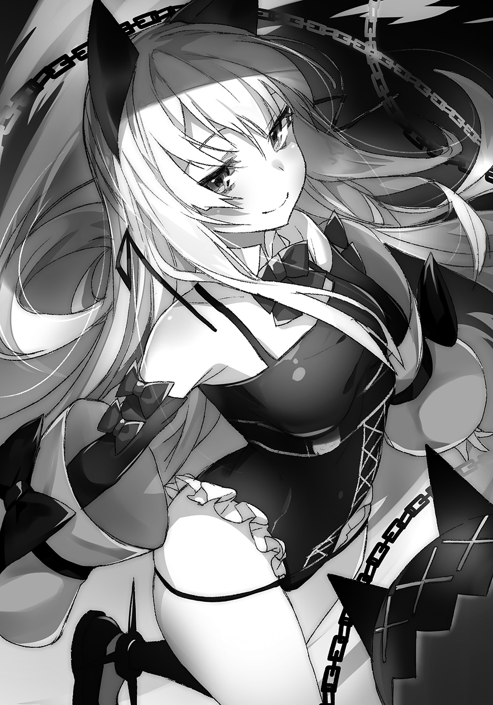
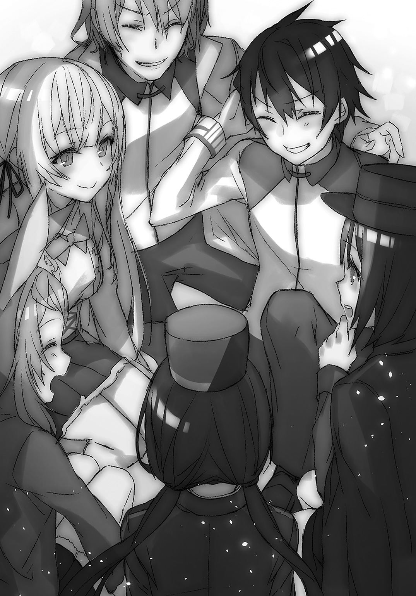

| 異世界監獄ルート楽園化計画―絶対無罪で指名手配犯の俺と〈属性：人食い〉のハンニバルガール― | |
| 縹けいか | |
この本は縦書きでレイアウトされています。
また、ご覧になる機種により、表示の差が認められることがあります。
 ダッシュエックス文庫DIGITAL
ダッシュエックス文庫DIGITAL
異世界監獄√楽園化計画
―絶対無罪で指名手配犯の俺と〈属性：人食い〉のハンニバルガール―
縹 けいか
【 プロローグ 】 異世界だけど監獄だった
鉄球が喋っている。
ネコミミ女が戦っている。
そしてたぶんここは、闘技場......
大昔のローマにあったコロッセオみたいなところだ。
俺、なんでこんなところにいるんだ？
ぼんやりとした頭のまま、一度だけ自分の格好を見下ろした。学ランだ。何の変哲もない普通の学生服。学校のなかに紛れ込めば一瞬でその他大勢になれるくらいの、ありふれた詰め襟。
――しかし現状は、このありふれた格好のほうが浮いていた。
闘技場ではやっぱりそれらしく戦いが行われている。石柱がいくつも乱立していて、それらの間で人間と言っていいのかわからない生き物たちが武器を持ち本気の戦いを繰り広げている。二足歩行の獣とか爬虫類みたいな、半分人間、半分化け物、みたいなやつらが十数体。
つまり古代ローマにタイムスリップしたって話じゃない。
でも、俺が目を奪われたのはそっちじゃなかった。
もっと異常で、もっと浮いているのが、いる。
最初に目に入った、あのネコミミ女。
黒いネコミミに、しなやかな猫を彷彿とさせる黒いレオタード。更には、足首に嵌められている物々しい足枷。じゃらりと伸びる重苦しい鎖に、鉄球。
そんなものを嵌めていても、痛々しさはまったく感じなかった。
なぜなら鉄球が喋りながら縦横無尽に空を舞っているから。
なぜならネコミミ女が幸せそうに笑っているから。
ぱっと見は痛々しいコスプレ少女が暴漢に襲われまくっている図に見えるのだが、実態はその逆だ。彼女が踊るようにくるくると回る。鉄球もくるくる回る。そして鉄球が次々に化け物たちに嚙みついて、ちぎっては捨て、ちぎっては捨てと、暴漢の方がかわいそうに見えるくらいの圧倒的な力を見せつける。
そして少女が操る鉄球が、くるんと彼女の頭上で停止したかと思うと、
『げうげう～！』
と、ギザギザな歯をにんまり覗かせて、ずっこけたくなるような声を発した。
――オーケイ、こりゃ夢だ。

夢と決まれば目を覚まさないとな！ っつーかいい歳して、なんて馬鹿みたいな夢を見ているんだ。ネコミミ女の闘技場無双とか、俺、疲れてんのか？ まあ確かに、なんだか最近すごく疲れたことがあったような気がするけど......あれ、でもなんだったかな......？
まあいいや。起きろ。早く起きて現実と向き合え。
「あ？ なんだぁこのガキ～？ 最初からいたかぁぁ？」
と、その時、やたらと間延びした声がした。のんびりとしたテンポと真逆に、腹の奥まで響くような野太い声には、指の先端までしびれる敵意が感じられる。
ぎこちなく振り返った。
そこにいたのは身の丈二メートルを超すであろう蜥蜴人間だった。全身が青緑色で、上半身は裸で、腹のあたりが膨らんでつるんとしている。下半身は汚れた腰布をまとっていた。そしてしなやかな曲線を描く曲刀を構えている。
こうして直面すると、相手がいかに化け物じみているかよくわかる。
クソッ、なんだよ、夢なんだろ？ だったら早く覚めろって！
「なんだぁコイツゥ？ さっきから自分の頰つねってやがるぅ。イカれてんのかぁ？」
蜥蜴人間がげらげらと笑う。
少なくとも俺の知る現実では、蜥蜴は二足歩行をしないし、喋らないし、曲刀も持たない。闘技場もないし鉄球も喋らないしネコミミ女は......まあ秋葉原にいるかもしれない？
とにかくも、そういったごく普通の〝日本〟の価値観を持っているんだ、俺は。
「まあラリってんならちょうどいいやぁ、こいつで得点稼ぎに――」
「――ちょ、ちょっとたんま！ 待て！ 待ってくれッ！」
蜥蜴人間が曲刀を振りかぶる。俺は慌てて両手を突き出し、ストップをかけた。
「こりゃ何かの間違いなんだ！ 俺はいつの間にかここに入り込んでいて......つまり、あれだ、よくわかんねえが手違いってもんがあると思うんだよ！ すぐに出て行くから、妙な殺し合いなんかに巻き込まないでくれッ！」
状況はさっぱりわからなかったが、闘技場で殺し合いめいたものが行われているのだけは判断がつく。丸腰でどうにかできるとは思わなかったし、たとえ武器を持っていたとしても参加などしたくない。
しかし俺の必死の説得もむなしく、蜥蜴人間は「ブッ！」と吹き出した。
「おまえぇ、悪党のくせにヘタレだなぁ！」
「は？」
悪党？ 悪党って、俺が？ なんで？
「だって、そうだろぉ？ 〝サクラリメス〟送りにされる人間はぁ、極悪人の犯罪者ばっかりだって有名だぞぉ！」
サクラリメス？ ていうか......なんだって？
犯罪者？
「お前さっきからなに言ってるんだよ......!? 言っている意味が一つもわからねえ！ 誰かと勘違いしてんじゃねえのか!?」
「ははぁ、さてはそうやって馬鹿のフリをして煙に巻こうって算段だなぁ？ さしずめ詐欺師ってやつかぁ？ んでも、その手には乗らないぜぇ――っと！」
「ちがッ――！」
今度はストップをかける暇もなく、問答無用で曲刀が振り下ろされた。間一髪、なんとか飛びのく。すさまじい風圧が頰を殴りつけていく。刀、というよりも、まるで鈍器みたいだった。ずどんと鈍い音が響いて、闘技場の地面が抉れた。土埃がぶわりと巻きあがる。
なんなんだよ、これ。マジでどうなってやがる？ こいついったい何者なんだ？ 化け物みたいなのに言葉が通じるし、俺のことを悪党だとか言いやがる。しかも犯罪者だって？ ふざけるな。俺はそんなんじゃない！
だって俺は、
俺は。
え？
――俺ってなんだ？
「おい～、よそ見している場合かあぁ!?」
蜥蜴人間が大笑いしながら、軽々と鈍器めいた曲刀を振り回す。ヤツはもう、俺に考える時間を与えてくれなかった。
「う、あ――っ！」
二度目の攻撃は避けきれなかった。曲刀が擦っただけ――のはずなのに、身体に激しい衝撃が走る。
それから俺は吹っ飛ばされた。世界がぐるんと回って、闘技場の天井が目に入った。なんだかやたらとスローモーションに見える。観客席でも、やっぱり人間には見えない生き物たちが、わーわーと歓声を上げていた。いや、観客席に見えるだけで、あれは......
大型の、モニター......？
「ぐ......っ！」
粗末なゴムボールみたいにごろごろと転がって、何度も噎せ返る。
起き上がろうとして、耐えがたい痛みが襲いかかる。
視線を巡らすと、右腕が変な方向に曲がっていた。一瞬、頭の中が空っぽになる。
なんだこれ。折れてる？ マジで......？
噓だろ。こんな痛いものなのか。腕を折られるって、こんなにきついものなのか。冗談じゃない。顔が引きつるし、全身が震えて、息がしづらくて、目の前がちかちかする。
でも逃げないと。
次は痛いどころでは済まない。
「............ッ」
必死に自分自身に動けと命令しているのに。
駄目だ、動けない。身体にまったく力が入らない。
歯を食いしばって堪えようとしても、呻き声がこぼれてしまう。
蜥蜴人間はにやにやしながら、重たい足音を響かせて近づいてくる。倒れたままの姿勢で見上げるそいつは、まるで巨塔のようだった。
「大丈夫、おいはこれでなかなか紳士だからなぁ、一発で頭をたたき割ってやるぞぅ。地道に腕や足を落とされて苦しむのよりも、ずぅっと良心的だろぉ？ ぎゃはっ！」
「――――そうね、同感。とっても良心的だわ」
その時だった。
突然、目の前が真っ黒になった。
いや、違う。視界いっぱいに黒が広がるくらい、黒い鉄球が巨大化している。
「あぇ？」――と、首を傾げて蜥蜴人間が振り返る。
それが、俺が見たそいつの最後の姿だった。
ばくん！
冗談みたいな光景が広がっていた。
二メートルもある巨体を、鉄球がまるまる飲み込んでいる。
俺はたぶん一生忘れられないだろう。蜥蜴人間が飲み込まれる寸前の、あの間の抜けたような顔を。
あっという間に蜥蜴人間が食われてしまった。
俺はしばらくぽかんとしながら、その食事光景を眺めていた。完全に頭がオーバーフローを起こしている。ものすごく異様なことが起きているし、ものすごく恐ろしいことのような気もするのだが、現実感がなさすぎて恐怖を覚えるところまでいかなかった。
くすっと笑い声が聞こえた。巨大化した鉄球の後ろ――ネコミミ女のものだ。
「お、おい」自分の声が情けないくらい掠れている。「あんた......」
何を聞こうとしたのかも、わからなかった。聞きたいことがあまりに多すぎて、整理しきれない。あんた何者？ その鉄球なんなの？ ここってどこなわけ？ あの蜥蜴野郎はどうなっちゃったの？ 死んだの？
いや、違うか？ 何よりも先に言うべきことは――
「いや、あの、助けてくれてありがとう......？」
お礼、じゃないか？ たぶん。だって、助けてもらったんだから。
鉄球がげふっとげっぷを吐き出すと、『げう～』とまた気の抜けるような声を出して小さくなっていく。通常サイズに戻ったそいつは、口があるところ以外は普通の鉄球に見えた。
そしてそいつが小さくなったおかげで、俺を助けたネコミミ女の顔がはっきりと見える。
彼女は俺の正面に立っていて、じっと、俺を見下ろしている。
さらさらと、やわらかい桜色の髪が風に揺れている。きれいな髪の色とは対照的に、無造作にばらばらの長さでばつんばつんと切られたような、無頓着な髪型だった。けれど、不格好に思えなかったのは、彼女がとんでもなく整った顔をしていたからだろう。
でも整っているといっても、冷たい印象ではなく、何を考えているのかちょっとわからないような、不思議な雰囲気だった。
眠たげなとろんとした半開きの目に、ぽてっとした厚みのある唇。
あれ。
ていうか。
俺、彼女を知っている？
「なに？」
彼女がかくっと首を傾げた。なんか、可愛いな、今の仕草。......いや、そんなことを考えている場合か？ そもそも彼女は（ていうか彼女にまとわりつく鉄球が）蜥蜴野郎をはじめ数多の化け物をぶっ倒していて、つまりいくら可愛かろうとすごく強くてすごくヤバい。俺は可愛いとか思っている場合ではなく、むしろ恐怖を感じるべきだ。
でもやっぱり彼女は知り合い――いやそれ以上の存在のような気がして、おかげで恐れはまったく感じなかった。
せめて、名前。名前だけでも、思い出したい。
動きのない俺たちに業を煮やしたのか、モニターの観客席から罵声が飛んでくる。なにやってんだ殺せー早く動けー云々。うるせえな。今はそれどころじゃないんだよ。
考える。思い出す。引っかかるものがないか空っぽの記憶を漁りまくる。
ふと脳裏に、闘技場の殺伐とした景色ではなく、桜の花びらが浮かんだ。学校の校門前。今みたいな変な格好ではなく、長袖のセーラー服で。振り返ると、やっぱりさらさらと長い髪が揺らめく。
記憶の中の彼女がふっくらとした唇を開く。
そして何かを告げる――。
「......ナギサ？」
突然、口をついて出た。ナギサ。彼女の名前。なんとなくそんな気がした、程度のあやふやな記憶だったけれど、〝ナギサ〟という言葉はとても舌になじんだ。
彼女も眠たげな目を少しだけ大きくした。
「きみ、あたしのことを知ってるの？」
――やっぱりこの子は〝ナギサ〟なんだ！
でも、俺がわかるのは彼女が〝ナギサ〟って名前の女の子だということだけで、それ以上の詳しいことは思い出せない。
きっと大切な思い出で、俺に必要な記憶のはずなのに！
「知ってる......んだけど、よくわからない、みたいな......。わりい、言っている意味、わかんないよな」
彼女は自分の唇に指をあてて、んー、と考えるような仕草をした。俺のことを思い出そうとしてくれているのかもしれない。それから、ずいっと顔を近づけてくる。
「あたしも、なんだか、きみのこと知っている気がする。どこかで見たことがあるような気がする。でもはっきりとは思い出せないの。不思議だわ」
「じゃあ、俺たち、同じってことか......!?」
彼女はにっこり笑って、頷いた。
「そうね。もしかしたら、運命の人なのかも！」
「う、運命の人ってのは、ちょっと恥ずかしくないか？ いやその、嬉しいか嬉しくないかって言ったら嬉しい気がするけど!?」
「うんうん。あたしね、すごく気になることがあるの......」
ナギサは俺の言葉を無視して更に顔を近づけて、そっと囁いた。息が触れるくらいの距離だった。背筋がぞくぞくして、顔が赤くなって、俺はただの挙動不審の馬鹿野郎になった。
「え、あ、う、な......なんだよ!?」
「運命の人の味って、どんなものなのかなぁ、って......」
「あ、味かぁ！ 俺の味はそうだなぁ～......！ ......って、は？ 味？」
「うん、味」
ナギサはこの上なく可愛らしくにっこりと笑うと。
俺に向けて言い放った。
「――じゃあ、いただきます！」
そして異論を唱える暇もなく。
俺は鉄球に食われた。
【 Ⅰ 】 史上最悪の指名手配犯
１
桜の花びらが舞い落ちる、中学の卒業式。
学校の、校門前。
卒業証書を片手に同級生とひとしきり騒ぐと、友達の一人がナギサを見つけて、俺の背を押してけしかけた。馬鹿お前そんなんじゃねーよ、とぎゃあぎゃあ騒ぎながらも、俺は結局ナギサのところへと向かった。
「あっ！ 卒業おめでとう！」
彼女は俺を見つけると、満面の笑みを浮かべた。
「これでしばらく離ればなれになるなんて、悲しいね......」
「はあ？ 何言ってんだ、進学先は同じ高校じゃねーか」
「うん。でも、高校に入るまで二週間くらい離ればなれだし、高校に入ってもクラスが違っちゃうかもしれないでしょ？」
「......俺はそろそろ、お前から離れたいよ」
「ええっ！ 同じ夢を追う仲間なのに、冷たすぎるわ！」
俺はため息をついて、頭をかいた。
こんな調子なので周囲からはよく誤解されて囃し立てられるのだが、べつに、俺とナギサは浮ついた関係じゃない。ただの幼なじみだ。......まあ、もっと言うなら、夢が同じっていうのもあるけど。
「......同じ夢を追ってたら、クラスが違おうが何だろうが、そのうち道は交わるだろ」
ぼそっと呟くと、ナギサは突然俺の顔を覗き込んできた。ささっと視線を逸らす。ナギサがささっと移動してまた覗き込む。ささっ、ささっ、と俺たちは何度も繰り返す。
「なんだよ！」
「今の台詞、とう君は照れながら言ったのかな、と思って」
「照れてねえよ！」
「照れてくれればいいのに」
ああ、ああ、わかってる。こんなやり取りをしているから、周囲には公認カップル認定されて、ひゅーひゅーとウザイくらいに喚かれるんだ。あるいは一部から、リア充死ね！ と恨みを買われるのだ。それは根も葉もない憎しみだというのをわかってほしい。世界は平和であってほしいものである。
「ふふふっ」
ふてくされた顔をしていると、なにやらナギサが楽しげに笑う。
「今度はなんなんだよ」
「えー？ 高校も、とう君と一緒で良かったなぁって思ったの」
「さっき、離ればなれがどうのって言ったばっかりなのになぁ......」
「それはそれ、これはこれ。ていうか、とう君は嬉しくないの？ あたしと同じ高校で」
「べつにぃ？」
「わー、素直じゃない人。もっと女の子を喜ばせる言葉くらい、使ってみたらいいのに」
「キャラじゃねえだろ。大体、俺が『そうだねナギサ俺も最高に嬉しいよ！（棒）』とか言ってみろ。おかしいだろ」
「うん、確かに、ちょっときもい」
「おい」
「でも、ちょっと嬉しい......」
再び、ナギサが笑う。その頰が、少し赤いような気がした。
「ねえ、ねえ、とう君」
「......なんだよ」
桜の花びらが彩るなかで、ナギサの微笑みは魅力的だった。俺は柄にもなく幼なじみの笑顔に見とれて、言葉を失っていた。
そして彼女は――とても印象的な言葉を紡いだような気がするのだがなぜか彼女の後ろから巨大な鉄球が飛び出してきて「じゃあいただきます！」ってこれ展開違くないか!? こういう話だっけ!? 卒業式シーズンのときめき的な流れからどうしてこうなるんだよ!? うわやめろ馬鹿マジで食うなほんとやめろマジでお願いしますバリバリバリバリバリバリバリバリボリボリボリボリボリボリゴリゴリゴリゴリゴリボキボキボキボキボキボキボキボキボキガリガリガリガリガリガリムシャムシャムシャムシャムシャムシャムシャムシャムシャムシャムシャムシャ。
げふっ。
◇◇◇
「うわぁぁぁぁッッ!! やめろ食うんじゃねえ――――ッッ!!」
ひどい悪夢を見た！
寝汗びっしょりで目を覚ます。――が、飛び起きようとして身体が動かないことに気づく。
......何かがのしかかっている？
寝起きのぼんやりとした頭では、まだ状況がよく理解できない。
薄い桜色の何かが、さらさらと目の前を過ぎっていく。それが肌に触れて、とてもくすぐったい。なんだろう？ どうやら触れているのは髪の毛のようだけど......。
今度は首筋がくすぐったくなった。
吐息がかかって、思わず身じろぐ。
大型犬をペットにしたら、寝起きはこんな感じなのかなあ？ きっとじゃれついて、鼻先を首筋に埋めてすんすん匂いを嗅ぐんだろうし、長い舌でべろんと舐めたりもするんだろう。
そうそう、ちょうどこんな具合に。
そんで調子にのってがぶっと嚙みついてみたり――――って。
おい待て。
「うわぁぁぁぁッッ!! やめろ食うんじゃねえ――――ッッ!!」
がばっ！ と目の前の少女の肩を摑んで突き放す。
俺にのしかかっていたのは他でもないナギサで、薄い桜色の何かは当然こいつの髪の毛で、そんでこいつは俺の首筋に嚙みついていやがったのだ！
まさか寝起きざまに同じ台詞を二度も叫ぶことになるなんて思いもよらなかったよ！
「おはよう！ もうちょっと眠っていても良かったのよ？ 早起きさんね」
と、ナギサは笑顔で、それだけ聞いたらごく普通（むしろ女子に起こされてちょっと嬉しい的なシチュエーション）に思える台詞を吐いた。
もちろん嬉しくない。
「もうちょっと眠っていたらそのまま永眠するところだっただろうが！ 人を食おうとするようなヤツが言う台詞かそれ!?」
「人聞きが悪いわ。可愛らしく起こしてあげようと思っただけじゃない？ ......じゅるり」
「よだれ隠せてねーからッッ!!」
もう嫌だ！ なんなんだよこいつは！
「っていうか、ここは一体......!?」
ぐるりと辺りを見回すと、目に入るのは間違っても桜の木の下の校門ではなかった。
石造りの天井に、無骨な印象の石の壁に、家具はぼろぼろになった木製のものばかり。俺はその部屋に似合いの簡素なベッドの上に転がされていた。
少なくとも、現代日本のアパートの一室、という雰囲気ではない。
やっぱ、あの卒業式の方が夢で、コロシアムみたいな方が現実だったってことか？ 普通、逆だろ。......でも、待てよ？ コロシアムっていったら、さっき――――
俺は、こいつの鉄球に食われたんだよな？
ナギサの顔を見ると、きょとんとした様子で首を傾げている。
もしかして、鉄球に食われたのはさすがに思い違いだったんじゃないのか？ だって俺の身体は、怪我一つ負っていない。......少し気になることといえば、いつの間にか学ランじゃなくなっているってことくらいか。
これも制服みたいに見えるけど、普通の中学や高校のブレザーとは違って、ちょっと奇抜に感じられる。今、ナギサが着ている服も先ほどとは違い、やはり制服っぽく見える。
コロシアムで見た時、彼女は黒いネコミミのレオタードみたいな姿をしていたが、あの服はさすがに普段着じゃないみたいだ。
あとは......首にぴったりと金属製の首輪が嵌まっている。鉄ほど重たいものではなく、つるりとしたなめらかな質感が印象的だった。コレも、同じくナギサも装着している。
「うふ、どうしたの？ そんなにじろじろ見つめちゃって。やっぱり食べてほしかった......？」
「んなわけねーだろうがッ！ ただ、今の状況に頭が追いついてないだけだ。なあ、ナギサ、俺ってあの後どうなって――――」
「エ、ク、セ、レェェェェェェェェェントォッッ!!」
「うわッ!?」
突然部屋の扉がババーン！ と音を立てて開いたかと思えば、白衣をまとった金髪の男が乱入してきた。
今度はなんなんだよ!?
「やはりッ!! ボクの医学はッ!! 世界一ィッ!! モルモットクンの回復力が優れていたとはいえ、ここまでの早期回復はボクの神がかった美しく完璧な施術があったからこそ！ フッ、フフ、フフフフフフッ！ もはやボクのゴッドハンドは全知全能の域に達したと言えよう......！」
乱入してきたそいつは、天を仰ぎながら高笑いしていた。
えーと。
さすがに俺もどこからツッコミを入れていけばいいのか、わかんないんだけど......？
「あはっ、相変わらずなお医者さんね」
どうやらナギサは、この変人と知り合いらしい。
っていうか、医者って言ったか？ まさか、俺、こいつに治療を受けたとか......？
「おぉっと失礼！ モルモットクンが元気に話している声が聞こえたものだから、つい飛び込んでしまった――――おや？」
金髪の男が、ぱちぱちと瞬きをして俺たちを凝視した。
「な、なんだよ？ 何か変なとこでもあんのか......？」
「ＨＡＨＡ！ 変も何もまさか真っ最中だとは！ いやはや失敬失敬！ 人類の崇高なる営みの最中に乱入とは、デリカシーに欠けていたねッ！ それにしても回復早々、お盛んなことだねぇ！」
「は？ 何を言って..................ああッ！」
そう、俺は頭の方を働かせるので精一杯で、ナギサの肩を摑んで引き離した姿勢のままだったのだ。
客観的に状況を見るとこうだ！ 俺はベッドにいる！ ナギサが上にのしかかって馬乗りになっている！ その肩を俺が摑んでいる！ 引き離そうとしているかどうかなんて他人にはわからない！
馬鹿でもわかるぜ、どう見てもいかがわしい状況だってな！
「ち、ちがッ！ これはそういうんじゃなくて――！」
「そうよ、誤解だわ。これは単に、あたしが彼を味見していただけ」
「その言い方もどうかと思うけどな!?」
「ＯＨ、ナギサ......。まさかキミが、出会ったばかりのボーイに手を出す女の子だったとは......。今頃どこかの世界の男子諸君が嘆いているよ、『ええーヒロインがビッチ設定かよ、萎えるぅ～』とね......」
「お前はどこの世界の電波を受信しているんだよ......!?」
俺がひたすらツッコミを入れていると、ナギサがいつもの眠たげな目になってぼんやりと思考し、突如「はっ！」と何かに気づいたように言った。口に出して。
「そういう意味の味見じゃないわ、失礼ね。物理的に食べようとしただけよ。だからどこかの世界の男子諸君も萎えることはないでしょう」
「ビッチ設定より人食い設定の方がもっと萎えると思うんですけど ッ!?」
ッ!?」
「......ビッチビッチって口の悪い人たちね。失礼よ。そうやって女の子を蔑む人には、一生彼女ができない呪いをかけてあげるわ」
普通に怒られてしまった。
思わず「わ、わりぃ......」と謝ってしまったが、人を食おうとするのは失礼を通り越している気がするぞ......？
２
「と、とりあえず、状況を説明してほしいんだけど......。俺って、あれからどうなったんだ？」
俺はナギサをしっかりと離してから、仕切り直した。
ナギサが、説明してあげて、というように金髪の男に目配せする。
「もちろん、ボクのゴッドハンドのおかげで一命を取り留めたのさッ！ 見たところ調子はすこぶるよさそうだけど、念のため聞いておこう。具合はどうだい、モルモッ......患者クン？」
「さっきからお前、俺のことモルモットって言ってるよな......!?」
「ノンノン聞き間違いだよ！ ボクはただ大事な患者クンが目覚めてくれて良かったなぁ医者冥利に尽きるなぁと感動していたところで」
「なんかルビでモルモットって言われた気がするんだけど!?」
「ＯＨ！ キミ、細かいねッ！」
やっぱりモルモットって言ってるじゃねーか......。
......腑に落ちないが、モルモット発言はともかくとして。
「つまり、お前は医者......なんだよな？」
目の前にいる金髪の男は、正直なところ医者には見えない。そりゃ白衣は着ているが、服装だけで医者だと判断できるのなら世の中のコスプレイヤーはみんな本職になっちまう。
ちゃらちゃらしているから......というのもあるが、それ以上に、年齢だ。
若すぎる。......たぶん、俺と同じくらいの年齢なんじゃないだろうか。
十六とか、十七とか？
って言っても、俺自身が、今何歳なのか正確にわかってねーんだけど......。
「医者と一言で言い表すのが不服ならばこう呼びたまえ、華麗なるゴッドハンド――と」
「いや呼び方とかはどうでもいいんだけど」
「なっ!? 呼び方こそが何より重要だろう!? ボンゴレビアンコが〝あさりとか酒とかの麵〟って名前だったらガッカリするだろ!? それと一緒で呼び方は非常に大事なのだよ、それこそ手術の結果よりもねッ！」
「手術の結果の方が大事だろうがッ!!」
お前は一度ブラックジャックに八つ裂きにされろ!!
ってそんなことが言いたいわけではなく！
「お前が医者で手術をしたってことは、俺は今までやばい状況だったってことだよな......？」
「アーハー、そりゃもうひどいもひどい、全身ばらばらだったね！」
「ぜ、全身......ばらばら、って」
噓だろ？
そんなにひどい大手術なら、起き上がって元気にツッコミを入れるなんて不可能じゃないか？
「おやおや？ さてはその顔、信じていないね？ この華麗なるゴッドハンドの手術を。まあその気持ちもわかるよ？ なにせ傷ついた痕跡ひとつないのだからね？ でもねえ、実際にキミはバラッバラのぐっちゃぐちゃだったのさ。それこそＣＥＲＯ〝Ｚ〟でもアウトなくらいにね！ ねえキミ知っているかい、たとえ18禁のＺ判定をくだされたとしても欠損表現はいけないんだよ！ 欠損すなわちタブー、放送するときには真っ黒に暗転しないとならない！ ＨＡＨＡＨＡ倫理って大変ＨＡＨＡＨＡ。そんな存在するだけタブーだったキミを、このゴッドハンドが、良い子が見ても大丈夫なように華麗に修復してみせたのだよ！」
よっしゃ、無視しよう。
「お前には聞きたいことがいろいろあるんだよ。俺、ここがどこかとか全然わからなくて――」
「ヘーイヘイヘイヘーイ！ 露骨なスルーとかやめてくれない!? 泣いてもいいの!?」
「泣けばいいだろうが!!」
「キミは本当に血も涙もない酷いヤツだねぇ！ これは医者の沽券にかけて証明してあげないとならない案件だよ。仕方ない、もう一度ボクのアニマウェアを見せてあげよう！」
男は不敵ににやっと笑うと、パチンと指を鳴らした。
「――アニマウェア《エド・ゲイン》」
その言葉と共に、そいつを中心にぶわっと衝撃の波が広がった。
「なっ......!?」
風が吹いたのはほんの一瞬で、信じられない光景が広がっていた。
男を中心に円を描くように、メスだハサミだ注射器だピンセットだ鉗子だ針だ縫合糸だなんだとあらゆる器具が浮遊し、回転している。
「ああ、そうか、さっきはバラバラだったからアニマウェアの力を見るどころじゃなかったね？」
「ア、アニマ......ウェア？」
「それならもう一度お見せしよう！ まずは、ノーベル医学生理学賞もびっくりな副作用のない局部麻酔、別名クーゲルシュライバー！」
そいつが人差し指を立てると、その上にふわっと注射器が浮かんだ。
どうでもいいけどクーゲルシュライバーって、響きは超かっこいいけど意味はボールペンっていうドイツ語だったよな。
「これは正確無比に何でも切り裂くメス、別名シュバルツバルト！」
これもどっかで聞いたことのある中二的ドイツ語。
「これはミクロなレベルで縫合可能な超縫合糸、別名ナーゼンシュライム！」
以下略。
「つまりこれはクーゲルシュライバーをインサートしシュバルツバルトでカット、そしてナーゼンシュライムでパーフェクトにリボーンさせるというプロジェクトなのだよッ！」
「日本語で話せよ!! 日本語が駄目でも人類にわかるように話せよ!!」
「フフン、まあ見たまえ、こういうことさ――ッ！」
そいつは突然自分の右脚のズボンをまくり上げると、指揮者のような指さばきで浮かんだ医療器具に命令をくだした。
そして。
クーゲルシュライバー、否、麻酔注射器とメスが突如その男の足に向かう！
「待て馬鹿っ、なにして――ッ!!」
――スパッ！
制止する間もなく、あっという間に――そいつの足が分断した。
さあっと血の気が引いていく。こいつ、何を考えているんだ!?
自分の脚を――切り落とすなんて！
だが、男は愉快に笑いながら、即座に左指をひらめかせる。
すると今度は銀色に光る無数の縫合糸がすさまじい速度でそいつの脚に絡みつき――
すとん、と何事もなかったかのように。
分断されたはずの脚がくっついた。
とんとん、と脚の無事を見せつけるように、そいつが脚を鳴らす。
俺は開いた口がふさがらなかった。
「見たまえ、傷跡は残っているかい？」
そう言って男は、元通りになった右脚をベッドのふちに乗せて俺に見せてきた。......ない。どこにも傷跡なんてない。さっきのは幻だったんじゃないかって思うくらいに。
「て、手品、だろ............」
俺の声は掠れていた。
こんなことがあってたまるかという思いでいっぱいだった。
でも、既に心の大部分では、これが手品ではないとわかり始めていた。
男がにやりと笑って言う。
「――鉄球に食われて怪我一つないってほうが、ボクとしては不可解だけどね？」
そう。
そうなんだ。
やっぱり俺は、あのコロシアムみたいなところで、ナギサの操る鉄球に食われたんだ。夢でも思い違いでもなかったんだ。
ナギサの言った、「いただきます」の一言は――
現実だったんだ。
あのふざけた鉄球がリアルなら、この男の周囲に浮かぶ医療機器も、即座に治療してみせた魔法みたいな技術も、リアルなんだろう......。
「でもナーゼンシュライムは人体にしか万能でなくてね、つまり服までは直せなかったのさ。だからキミの時代錯誤でダッサダサの真っ黒な学ランは鉄球クンの胃袋に収まってしまったよ！ 残念だね！」
伝統ある学ランをダサいとはなんだ、とか、鉄球に胃袋なんてあるのかよ、とか、ツッコミどころはたくさんあったが口にする気力がわかなかった。
だって。
俺はさっき、食われたってことだろ。ナギサに攻撃されたってことだろ。
つまり――ナギサに殺されかけたってことだろ......？
さっきからさんざん味見とか食べたいとか言われているのに、何を今更......って感じかもしれない。でもさ、心のどこかで、冗談だろ？ って思いがあったんだ。こんなのじゃれているだけだろって。
そうじゃないんだ。
ナギサは、本気で俺を......。
「どーしたの？ あたしのこと、そんな怖い目で見ちゃって」
「どうしたの、って......」
なんで、普通の態度でいられるんだ？ 自分のこと、おかしいって思わないのか？ ......そう言いたかったけど、口に出せなかった。
彼女は本当に......俺の知る〝ナギサ〟なのか？ 俺の知るナギサはもっと......。
もっと......なんだった？
くそ、また何もわからなくなってくる。頭の奥に霞がかかっているような感じで、すごく気持ち悪い。でもわからないって嘆いているだけじゃ先に進めない。
長いため息をついて、ナギサと医者っぽい男を交互に見る。
「......あの、さ。聞きたいことがたくさんあるんだ。たくさんありすぎて自分でも混乱しているんだけど......まず先にお前たちのことを教えてくれないか？ ナギサのことは知り合いのような気がするんだけど、結局どういうヤツなのか思い出せない。俺の身体を治してくれたお前の方は、名前どころか何も知らないし......」
医者っぽいヤツは芝居がかった風に両手を広げて「よろしい、では自己紹介のターンだね！」と大声で言った。
「ゴッドハンド改め、ボクの名はエドゥアール・ラ・トゥール。フランス貴族の血を引く高潔なる医者だ。フッ......覚えておいてくれたまえ」
こいつ、フランス人だったのか？ まあ確かに日本人離れした雰囲気ではあったけれど......。
「ちなみに彼の本名は山田五郎よ」
すかさずナギサが言った。
エドゥアール改め山田五郎は膝をついて泣いた。
「ナ、ナ、ナギサッ......！ キミという人はッ......！ 人の傷つくところを的確に抉るなんてッ！ マナー違反にもほどがあるッ......！」
「本名なんだからしょうがないじゃない。エドゥアールなんとかよりも、山田五郎のほうが渋くて良いと思うけれど？」
「ノォ―――ッ！ それでもだめなの！ 美しくないの！ 渋かったら本末転倒なの！」
「山田五郎」
「ああーッ！ またボクの心臓を抉ってくるーッ！」
「山田五郎」
「やめてーッ！ 美しくないーッ！」
「山田五郎」
「うぐぅーッ！」
「山田五郎」
「はあはあ......、ウッ......心の痛みがだんだんクセになってきた......」
「山田五郎」
「ああぁん......もっと言って......」
きめえ......。
こいつドＭまでこじらせているのかよ......。
ていうか全国の山田五郎さんに失礼だろ......。俺も渋くて良い名前だと思うぜ......。
床に這いつくばってはあはあしている山田を尻目に、ナギサがにっこりと「こういう人なの」と言う。そうですか......。
「彼、髪の毛も本当は真っ黒なんだって。別にそのままでいいのにね」
山田ははあはあしながらナギサを見上げた。
「キミにはわからないだろうさッ......！ 金髪碧眼に対する憧れというものがッ......！ キミのように日本人のくせになぜか雪のように白みがかかった桃色の髪をしているトンデモヒューマンにはね......！ マイガッ、なぜボクにだけ日本人の法則を当てはめたんだ......！」
そして山田はよよと泣き崩れ床を叩いた。
......ちなみに山田は顔だけで評価したらものすごく美形だ。ムカつくくらいに。
でも、全然嫉妬しないで済みそうだ。
「なあ、ちなみに山田って今いくつなんだ？」
「キミまで山田と......。うう......、十七だよ......それがなんだっていうんだい......」
「その年齢で医者って......やっぱりありえない、よな？」
疑問形になってしまったのは、俺の記憶があやふやすぎて、自分の常識や価値観というものが正しいのかよくわからなかったからだ。ただ、完全な記憶喪失というわけではなく、日本のことや一般論、もちろん言葉も含めて、覚えていることは多い。
いくら優秀だとしても、高校生で医者になるなんて法律が許さないはずだ。少なくとも、俺の知っている常識の範囲では。
山田は立ち直ったのかスクッと立ち上がり、ぎしぎし軋む髪をファサッ――というかボサッ――という感じでかき上げた。
「愚問だねキミ。ボクが己を医者と思えば、その時点でボクは医者なのさッ！」
「いやだめだろ！ 資格とか必要だろ!?」
「それは法律のなかで医者になるための、社会的ルールの話だろう？ 医術で人体を修復する――その素晴らしき手腕を持つ人間を〝医者〟と呼ぶのならば、やはりボクは医者なのだ！ ボクが救ったのはキミだけじゃない、ほかにも数えきれない患者をかっさばいて――あっいや、救ってきたのだからねッ！」
......今、かっさばいてって言わなかったか？
「あ、あのなあ......法律を無視してたら、お前、どんなに良いことやっても犯罪だぞ？」
山田がきょとん、とした。ナギサも一緒にきょとん、とした。
「な、なんだよ、その反応。俺、変なこと言ったか？」
ナギサが小首を傾げて、くすくすと笑う。
「ここにいるってことは、きみも犯罪者でしょ？」
――まただ。
ナギサの鉄球に食われたあの蜥蜴野郎も、そんなことを言っていた......。
「それ......どういうことなんだよ？ 〝ここ〟ってなんなんだ？ どうして〝ここ〟にいると犯罪者ってことになるんだ......？」
「そんなの当たり前だわ。監獄にいるのは犯罪者って、相場が決まってるじゃない？」
「か......、かん、ごく......？」
ナギサと山田は一度だけ顔を見合わせて、そして示し合わせたかのように話し始めた。
「もしわかっていないなら、教えてあげるわ。あたしたちが知っている範囲でね」
◇◇◇
二人が話したのは、大体こんな感じのことだった。
ここは『異世界監獄サクラリメス』と呼ばれている。
ずいぶん昔に、功刀博士という日本の科学者が発見したことで、異世界と地球は繫がった。
異世界と名がつく通り、ここは俺たちの知る世界――つまり地球ではなく別の世界で。
人間、そしてあらゆる異世界人がぶち込まれる、超グローバルな監獄でもある。
サクラリメスという名前はこの恐ろしい場所に似つかわしくない気もするが、名前の響きが柔らかろうが監獄は監獄だ。異世界監獄サクラリメスにはもう一つの役目があって、それは囚人同士が闘技場などで戦いを披露し、興行収益を得ることだという。あらゆる異世界人が入り交じる容赦なしの戦いは、好事家たちの反響を呼び、毎回チケットは即完売らしい。
サクラリメス送りにされる囚人は、更生のしようがない重犯罪者ばかり。少なくとも、地球側から送られる犯罪者は、情状酌量も認められないレベルだ。
つまり昔で言うなら島流しのようなもので――
実質、死刑にも等しい。
だから目の前にいるナギサも、山田も。
それくらいの犯罪者であって――
サクラリメスに送られたらしい俺もまた、同様だという話だった。
◇◇◇
「――どう、少し思い出した？」
......俺は硬直してその話を聞いていた。
納得するどころか、余計、頭がパンクしそうだ。
異世界に島流し？ 闘技場で興行収益......？
そんな......
そんなふざけた話、認められるか......！
「それじゃあ俺たちは見世物ってことじゃねえか！ お前たちも、こんなことを押しつけられて嫌じゃねえのかよ......!?」
二人は、憤る俺をやっぱり不思議そうに見ていた。
「あたしはむしろ、日本の収容所で死ぬまでずぅっとおとなしくしているほうが嫌だわ？」
「こっちの意思をガン無視してまで収監しているわけでもないからねえ、ＨＡＨＡＨＡ」
なんだか――
どんどん、二人が遠い存在になっていく。
どんどん、二人が恐ろしい化け物みたいに見えてくる。
「つまり」やっぱり俺の声は嗄れている。「お前たちは、捕まっても反省すらしない――極悪人ってことか」
変人だけど俺を助けてくれた山田。
きっと大事な子であるはずのナギサ。
その二人に対して〝極悪人〟なんて言葉を使いたくはなかった。
でもそういうことなんだろ？
二人は――政府が手に負えないレベルの犯罪者ってことなんだろ？
「そういうことになるかな？」
ナギサが言う。
俺はぐっと歯を食いしばった。
「何をしたのか知らねえけど、見損なったぜ。罪を犯しても反省すらしないなんて、お前たち何を考えているんだ!?」
「――ねえ、きみ」
ナギサは微笑んだまま――けれど、どこか冷たさを感じる目で――俺を見据えて言った。
「もう一度、言うわ。――ここにいるということは、きみも、そうでしょ」
「俺は犯罪なんてやっていないッ！」
そうだ、何かの間違いだ。俺が異世界の監獄であるサクラリメスとかいう、わけわかんねえ場所に収監されたのは、政府側の手違いなんだ。そうに違いないのだ。
――――絶対にそうだと言い切れるか？
心のなかで別の自分が囁いた。
だってお前、記憶がないんだろ？
記憶がないなら――
――どうやって自分の無実を証明するんだ？
――どうやって自分の正義を証明するんだ？
「............ッ」
ぐ、と唇を強く嚙みしめる。記憶がないままでは、本当に自分が〝シロ〟なのかもわからないし、ナギサや山田を責める資格があるのかすらわからない。彼らに正論をぶつけていること自体、もしかしたらひどく滑稽なことなのかもしれない。だって俺だって同じように罪を犯しているのかもしれないのだから。
確かにそうだ。
でも。
そうだとしても、やっぱり俺は、自分自身の正義を信じたい。
俺に記憶はないけれど、人を傷つけることはしちゃいけないっていう、はっきりとした想いは持っている。好き好んで人を食うだとか、人をばらばらにするだとか、許していいことじゃない。
俺は、俺自身のことを、進んで他人を傷つけるヤツじゃないって信じたいんだ。
「さっきから不思議に思っていたんだけれど」ナギサが首を傾げながら、俺を観察する。「きみ、もしかして......自分のことがわからない、とか？」
「............そうだよ」
「ええっ！ つまり記憶喪失ってやつかい!?」
山田が大慌てで俺に詰め寄ってくる。
「なんておいし――いや、大変な症状なんだ！ 記憶を失ったままでは辛いだろう!? ボクがじっけ――いや治療してあげるよ！ さあおいで大事なモルモッ――いや患者クン!!」
「お前さっきから本音が漏れてんだよ!! 実験動物にはならねーからな!!」
「なってよー頭開かせてよー。ね、ね、ちょっとだけ、先っちょだけ、いいだろ？ お願い！」
「自分の頭でも開いてろッ!!」
そしてそのまま真人間になれ!!
「ねえ、それじゃあ、自分の名前もわからないの？」
頭を開こうとしてくる山田を阻止している俺に、ナギサがのんびりと質問する。
「名前......」
山田を蹴っ飛ばして頭を守りきってから、考える。
名前。俺の名前。
......そういえば、あの卒業式の夢のなかで、ナギサみたいな女の子が俺のことを「とう君」と呼んでいた。
「......とう？」
声に出してみたものの、自信がなくて疑問形になった。それが本当に俺の名前なのか、どうにもしっくり来ない。せめて俺に関する記憶が、もっと思い出せればいいのに。家族のことも、どこに住んでいたのかも、さっぱりわからない。
「とうって......数字の十？」
「わからねえ。そうかも」
「ふぅん、変わった名前ね。わかったわ。きみのことはこれから十くんって呼ぶ。よろしくね」
ナギサが握手を求めて手を差し出した。
思わず「よろしく」と手を取りかけた――が。寸前で「ってよろしくできるわけねえだろ！」と身を引いた。あやうく流されるところだった。
「なんで？」
「なんでって、お前たち犯罪者なんだろ」
「そう。そしてきみも犯罪者。だから仲間でしょ？」
「絶対に違う。確かに俺は記憶喪失で、自分のことがわからない。でも！ 犯罪なんて俺が一番忌み嫌うものだ！ ......俺は自分が犯罪者じゃないって信じる。だからお前たちとは、仲間じゃない」
断固として言い切ると、一瞬、しんと沈黙が流れた。
その沈黙にほんの少し居たたまれなさを感じる。犯罪は悪だし、反省をしない犯罪者なんてもってのほか――そう考えているくせに、普通に接していると二人は（変態だけど）明るくてちょっと親切なところもあって......つまり良いヤツに見える部分もあった。極悪人だと切って捨てるほうが、おかしいんじゃないかってくらいに。
......俺のほうが間違っているんじゃないかってくらいに。
でも、言い切ったからには、もう撤回できない。
ナギサのことも大事な子だと思っていたけど――たぶんそれも、勘違いなんだ。
「......そういうわけだから、俺はもう行くよ。山田、治療してくれたことは感謝してる」
「行くって、どこに行くつもりなんだい？」
「わかんねえけど、とりあえず、ここじゃないところだよ。それに、ここが監獄だっていうんなら、管理してるヤツがいるんだろ？ そいつに俺のことは手違いだって伝えにいく」
「まあ、止めはしないけどさ」
「......じゃあな」
俺は二人に背を向けて扉に向かった。「あ、でも、その前に――」と、ナギサが何か言おうとしたような気がするのだが、もう振り返らなかった。
扉を開く。
目の前に銃口があった。
は？
銃口？
「――初日から規律違反の独断行動を取る気ですか？ さすがはサクラリメス送りの重犯罪者ですね、反吐が出ます」
軍服のようなかっちりとした衣装に身を包んだ、小柄な少女が銃を構えている。眼鏡をかけて理知的な雰囲気を醸し出しているものの、見た目はどう見ても十二、三歳とかそこらだった。
こ、子供？
「今すぐ死刑にされたいですか？」
って、ちょっと待ってくれ！ なんでこんな小さな子供が銃なんか持って、しかも今にも俺を撃ち殺そうとしているんだ!?
俺がうろたえていると、後ろで「はーぁ」とこれ見よがしにナギサがため息をついた。
「だから言ったのに。――その前に看守さんに会った方がいいわ、って」
言ってねーだろそれ......。
３
「突然闘技場に現れた挙句に記憶喪失だなんて、『疑ってください』と言っているようなものですね。あなた、自分が言っていること、おかしいと思わないんですか？」
「いや思うけど......しょうがねえだろ、事実なんだから。ていうか誰なんだよ、お前」
「立場をわきまえなさい。死刑にされたいですか？」
ジャキンッ、と耳障りな音を立てて撃鉄が上がる。俺はフルフルと首を横に振った。さながら蛇を目の前にしたカエルだった。死刑死刑言い過ぎだろ......？ ここには危険人物しかいないのか......？
「わたしの名前は功刀奏。サクラリメスの看守です。つまりあなた方囚人を管理する者。その命もわたしの判断により露と消える可能性があることを考慮なさい」
躊躇なく銃口を向ける奏と名乗った女の子は、見た目の幼さや可愛らしさに反する威圧感を持っていた。たとえ銃なんて物騒なものがなかったとしても、奏の口ぶりは他者を圧倒させるものがあった。
俺は唾を飲み込んだ。
「......冗談、だよな？ あ、いや、ですよね？」
途中で引き金が引かれそうになったので慌てて言い直す。
「あいにくと、わたしは冗談が嫌いです。あなたの考えていることが手に取るようにわかりますよ。わたしの見た目があまりに幼いから、子供だと侮っているのでしょう。正直言って、そういうのは飽きました。誰も彼も同じような反応をしますから。外見と内面がイコールであるとは限りませんよ、新規囚人」
「う......」
何も言えなくなっちまった。
この子、見た目は子供だけど、実は俺より年上なのか？
......それに、功刀って。
なんだろう、どこかで聞いたことがあるような気がする。
「父が、異世界監獄サクラリメスの発見に関わった科学者なのです。功刀博士と呼ばれていました。......まあ、もはやどうでもいいことですが」
俺の疑問を先読みしたのか、奏が言った。エスパーか？
そういやさっきの、ナギサたちがしてくれた説明のなかで功刀博士とかいうのも出てきた気がする。犯罪者扱いの方が衝撃的で、すっかり頭から抜けていた。
確かにそれくらいの有名人なら、引っかかりがあっても不思議じゃない――か。
でも、奏の言い回しが妙に引っかかる。どうでもいい、そう告げた瞬間、眼鏡の奥の瞳が色を失った。憎しみとか、悲しみとか、そういう負の感情をにじませているような――。
「あなた、囚人登録を済ましていないですね。アニマウェアも身につけていないでしょう？」
が、すぐに彼女は調子を取り戻した。そして俺を全身くまなくじろじろ観察すると、くい、と眼鏡を指で押し上げる。
「さっきから不思議なんだけど、アニマウェアっつーのはなんなんだ......？」
俺の疑問を無視して、「向こう側の連絡ミスでしょうか......まったくずさんな仕事をするのだから......こっちの身にもなってほしいですね......」とブツブツ呟いている。そして一人で納得すると、こくんと頷いた。
「まずは登録をしましょう、新規囚人」
「ま、待ってくれ。その登録ってのをすると、完全にサクラリメスの囚人になるってことだよな？ 俺、犯罪なんてやってないんだ。だから俺がここにいるのは、なにかの手違いだと思うんだよ。あんた看守なら、俺のこと調べてくれないか？」
「その心配はご無用です。あなたのアニマウェアが何なのか判明すれば、自ずとあなたの罪もわかるのですから」
「は？ それってどういう意味だよ......？」
「歩きながら説明しましょう。わたしも忙しい身ですので。......と、その前に」
奏が俺のすぐ目の前に立った。向かい合うと余計に背の低さがはっきりする。真下を見下ろすほどだし、奏の方は首が痛そうだ。
じっと見つめ合う間。
......な、なんだろう。俺の顔に何かついているのだろうか？
と、気を取られていると。
がしゃん。
手首から重たい金属音が響いた。
「はっ、はあああああッ!?」
手錠が嵌まってる......！
「勝手に逃げ出されたら厄介ですからね。登録が済むまで拘束させていただきます」
「横暴にもほどがあるだろ!? しかもなんで俺だけ手錠!?」
「そこの二人は既に登録されていますので、こちらの管理下にあります。つまり逃げようがない――万が一逃げ出したとしても居場所は手に取るようにわかります。理解しましたか？ では、行きましょう」
奏はくるりと背を向けて、ついてこいと言わんばかりに出ていってしまった。
両手の自由がきかなくなった状態で、俺はわなわなと震えていた。
◇◇◇
俺は奏に先導されて、闘技場内部の廊下を進んでいた。そしてなぜか俺の後ろにナギサや山田もいる。いわく、「だって十くんのアニマウェア、見てみたいんだもの」だそうだ。奏は呆れた様子だったが文句は言わなかった。これくらいなら規律違反じゃない、ってことか？
ただ、無駄口を叩くのは二人も控えているようで、大人しくしていた。
闘技場の地下は何層にもわたっていて、俺がさっきいた場所は地下一階の医務室だった。そして地下二階は作業場なのか、奏と似たような格好の看守が監視するなか、囚人たちがおのおの仕事をしていた。今は服の裁縫を行っているみたいだった。
さて、監獄といったら、どんなところをイメージするだろう？
ずっと牢屋の中に閉じ込められて、何もできない状況だろうか？
それはどちらかというと、監獄のなかでも違反を犯した囚人がぶちこまれる懲罰房に近いだろう。
かくいう俺もそういうイメージがあったけれど、監獄内にも生活がある。たとえば外部に販売するための衣類品や工業製品を作ったり、体育の時間があったり、集会があったり、食堂があったり、コックも囚人が仕事として請け負ったり、ちょっとした娯楽があったり、自由時間があったり......。
ものすごく窮屈になった学校生活、って考えたほうが近いのかもしれない。監獄は囚人を閉じ込めておくというよりも、更生させるための施設だから。
とはいえ、ここは異世界の監獄だ。俺のいた世界と同じ常識が通用するかどうかはわからない。闘技場での殺し合いがあったように、信じられないことも多々あるのだと思う。
よく見ると、作業場にいる囚人たちは〝人間〟ではなかった。俺が最初に戦ったような蜥蜴人間とか、半分獣みたいなヤツとか、ファンタジーの住人みたいな生き物がごろごろいる。ただしファンタジーといっても、そいつらの顔がどう見てもワルというかゴロツキめいていて、魔窟に放り込まれたことがひしひしと伝わってくる。
と、その時。突然作業場の方から怒号が上がった。
何事だと振り返ると、囚人同士の喧嘩が始まっていた。上半身が狼みたいな男と、兎みたいな真っ白な毛に覆われた獣人が取っ組み合いをしていた。
「おめぇこの兎野郎、ぶっ殺してやらぁ！」「先に難癖つけたのはそっちだろうが！」「いいぞやれやれ！」「どっちが勝つか賭けてやろうぜ！」「俺は狼の方に今日のメシを賭ける！」「じゃあ俺は――」などなど、一気に喧噪が膨れあがっていく。
「な、なんなんだありゃ......」
開いた口が塞がらない。まさか俺も、そのうちあの輪に加わって囚人として作業をしなけりゃならないのだろうか......？ そんなのすごく嫌なんですけど......？
「またお前たちか！ 静かにしろ！」
看守の一人（こいつは人間のようだ）が騒動の中心へと駆けつけると、警棒を振り上げた。
でも、看守の分が悪いようにしか見えなかった。あんな屈強な獣人たちを相手に、警棒一つでどうにかできると思えなかったからだ。逆に警棒を奪われてぼこぼこにされてしまうのではないだろうか。
だが、その懸念は杞憂となった。
ばちっ、と警棒の先から火花の散る音がした。すると騒動を起こしていた中心人物のみならず、その周囲の取り巻きたちも「ウウッ！」と首を押さえてばたばたと倒れていく。
いったい、看守は今、何をしたんだ？
目をこらすと、獣人たちの首に嵌まっている首輪が淡く発光していた。どうやら、あそこから電流が流れ込んでいるようだった。
ということは、つまり......。
俺の首輪にも、あの電流が......。
「まったく、愚かなことです」
前を行く奏が冷たく言い放つ。俺は思わずびくりとしてしまった。
「騒ぎを起こせば罰が下ると身をもって理解しているはずなのに、何度も繰り返す。犯罪者という存在は、どのような種族であれ、根っから愚かなのでしょう。本当に救いようがありません。......生かしておいてもらえているだけ、ありがたいと思ってほしいものですね」
奏が囚人たちを見やる視線は、冷たさを通り越して残酷だった。
「そりゃ確かに、さっきの騒動は馬鹿馬鹿しいかもしれねえけど、どんなヤツだって変われる可能性はあるし、そんな言い方は――」
「あなたの意見は求めていませんよ、新規囚人」
「............」
そうかよ、と小さく独りごちる。
看守の力を見せつけられた直後で、刃向かえるわけがない。
俺の後ろをついてきている二人も、今はとても静かだった。
そして俺たちは更に降りていく。
地下三階は雑居房、そして地下四階は独居房（反省房や懲罰房とも呼ばれるところで、窓もない狭苦しい部屋でひたすら孤独に過ごす部屋だ。ここには絶対入りたくない）があり、地下五階からは扉がなくなって、ただ階段だけが伸びていた。
「なあ、意見じゃなくて、質問ならいいか？」
先を行く奏に尋ねる。彼女は振り返らずに「どうぞ」と頷いた。
「看守側には人間しかいなかったような気がするんだけど、気の所為か？」
「いいえ、その通りですよ新規囚人。案外と観察力があるんですね。......ここサクラリメスには、さまざまな異世界から、さまざな種族が囚人としてやってきます。そのなかで、〝人間〟が総合管理する立場となっているのです」
「なんでなんだ？ さっき言ってた、人間の功刀博士ってのが関係しているのか？」
「それもありますが――」カツン、と一際高くヒールが鳴る。「アニマウェアがあるから」
「さっきから言ってる、そのアニマウェアっていうのは――どういうものなんだ？」
彼女は歩きながら、俺の知りたかった〝アニマウェア〟について説明した。
「アニマウェアとは、あなたでもわかるように簡潔に申し上げると、人間だけが適応できる異能力です。すでにナギサ・キサラギや、ゴロウ・ヤマダの能力は見たでしょう？ あれはアニマウェアにより引き出された力なのです。我々人間は貧弱な部類ですから、アニマウェアがなければ簡単に他の異世界人に負けてしまうでしょう。人間が総合管理者としてこのサクラリメスを掌握できるのも、すべてはアニマウェアがあるからこそ」
アニマウェアというのはよほど重要なものらしい。いったい、どんな見た目をしていて、どんなふうに能力を授けるのだろう？ （どうでもいいけど、奏がゴロウ・ヤマダと言った瞬間、山田が胸を押さえて「うぐぅーっ！」と唸っていた。誰もこいつのこと、エドゥアールって呼んでやらないんだな......）
「アニマウェアは適合者によって異なる能力を発揮します。それはアニマウェアの素に差があるためです」
「そのアニマウェアの素ってのは......？」
「――――大罪人、および、偉人の魂の一部」
......魂？
本気で言っているのか？
「正義の偉人、偉大なる発明家、勇気ある革命家......あるいは残虐非道な大悪党――」
奏の声が地下に吸い込まれていく。
「そういった人物たちの魂が時を経て、本人の記憶や人格といったものは消えても〝意志〟が残り、それがアニマウェアと呼ばれる力となるのです。歴史に名を残したような人物はとりわけ〝意志〟が強力です。逆を言えば、死後にも残り続けるような〝意志〟がなければ、到底歴史に名を残すことなどできない。
ここサクラリメスでは、そのようなアニマウェアが集まるのです。その原因はいまだはっきりとわかってはいませんが、魂を呼び寄せる磁力めいたものがこの世界には備わっているのでしょう」
正直、すんなりとは受け入れられない......けど、ナギサや山田が能力を見せたのは事実だ。
そして今、それ以上に気になるところがある。
「あんた、さっき、俺のアニマウェアが何かわかれば俺の罪もわかる......って言ったよな。今の話からは、その理屈が見えなかったんだけど......」
「それは」彼女が一瞬だけ振り返る。まるで俺を見定めるかのような、鋭い眼差しで。「アニマウェアの適合には条件があるのです」
「条件？」
「近い人間性であること」
奏は再び前を向いて歩きながら言った。
「たとえば、後ろにいるゴロウ・ヤマダのアニマウェアは《エド・ゲイン》。二十世紀のアメリカに存在した有名な殺人鬼です。人の身体を解体し、皮を剝ぎ、人体を用いて家具を仕立て上げた話などが有名ですね。解体魔とも呼ばれたそうです。殺人だけでも重罪なのに死体を弄ぶその悪行、まさに悪魔の如しと言えましょう」
「じ、人体を家具に、って......!? 常軌を逸しているだろ、それ......！」
「ええ、そうです、常軌を逸している......とてもまともな思考回路ではない。しかし、だからこそです。それほどの偏執的な意志があったからこそ、この今もアニマウェアとなって《エド・ゲイン》は存在し続けている。先ほども言ったように、普通に生きて普通に死ぬ人間であれば、アニマウェアにはなりません」
「............」
「後生にまで残る強い意志とは、善行だけとは限らないのです。意志の強さの前には、善も悪も関係ないのですからね。人を助けたいという強い思いも、人を壊したいという強い思いも、ある意味では同じ強さなのです」
「で、でも、ちょっと待ってくれ。そのやばすぎるヤツが、山田のアニマウェアってことは......」
「―――彼も近い人間性だということ、ですよ」
人間性。
すなわち、似たようなベクトルの人間だということ。
趣味嗜好。性癖。個性。あるいは生き方そのもの。
それらが一致している人物だということ......。
振り返ると、山田が皮肉っぽく口元を歪めて笑っていた。
一瞬、背筋に冷たいものが走る。
俺は無意識に山田から視線を逸らして、再び奏に質問していた。......聞くなら山田本人でも良かったはずなのに。
「あいつは自分のことを医者って言ったんだぞ。それに俺を治療してくれたんだ。なのに殺人鬼と近い人間性だっていうのか？ おかしいだろ......？」
「本質を見誤っていますよ、新規囚人。――彼が人体を治療するのは、解体したついでなのです。本当は人をばらばらにして、中身を知りたいだけの異常な人間なのです。なまじ天才的な医療の才能があったおかげで、その異常性が隠れているだけ......」
たしかに、そう言われてしまうと、あいつは俺をバラしたがっていたような......。
それに、自分の脚をいとも容易く切り離した光景を思い出す。
あれを見た瞬間、俺はこう思ったはずだ。
こんなの異常だ、と......。
「――異常者は異常者としか結びつかない。あなたが潔癖な善人であるならば、アニマウェアが正しくそれを示すでしょう」
「そんな、異常者なんて言い方......！」
「なにか間違いが？ 人を切り刻み、その体内に尋常ならざる興味を示す人間が、まともだとでも？」
「............っ」
何も言い返せなかった。
たしかに山田はあぶないヤツだと思う。
でも、それでも......俺を治してくれたのは間違いなく事実なんだ。
「だ、だったら、ナギサのアニマウェアは......？」
「あたしのアニマウェアは、鉄球のハニくんよ」
答えたのはナギサ本人だった。
振り返ると、ちょうどスカートをめくっているところだった――ってなにしてんだお前パンツ見えそうだぞ!?
慌てて目を逸らそうとした時、右足に絡みついていた鎖がまるで生き物のようにうねった。
そして。
「おいで、ハニくん」
『げうげう～！』
突然、ヤツが登場した。
スカートの奥から。
「お、おまっ！ なんつーところにしまってんだよ!? ていうかサイズ感おかしいだろ!? どう考えてもスカートのなかにはしまえないだろ!?」
「アニマウェアを解放しない時は、ハニくんがスカートのなかで小さくなって、勝手に休むの」
「どうにかさせろよッ!?」
スカートのなかって！ スカートのなかって!!
『げうげう』
ギザギザの歯が覗く鉄球は、俺をあざ笑うかのように目の前でぴょんぴょん跳ねると、突然ナギサの――む、胸の上に乗った。あまつさえ、ぽよんぽよん、と跳ねた。
「やだもう、ハニくんったら」
「てめえこのドスケベ鉄球!! ンなとこ乗ってんじゃねえッ!!」
鎖を両手で鷲摑んで引きはがす。手錠のせいでスカッスカッと何度も空振りしたが、ようやく捕まえてやった。
『げう！』と、不服そうな鉄球。うるせえ、溶鉱炉に放り込むぞ！
「十くんったら、さっきはあたしたちのことなんか放ってどっか行こうとしてたのに、なんだかんだあたしのことを気にかけるのね？」
「いや、それはっ......」
「うふふっ！ 十くんはやっぱりあたしのこと好きなんだ？ ツンデレ少年なのね？」
「ちがっ......」
「ヘーイ、キミたちボクを蚊帳の外にしてラブでコメし始めるの、やめてくれない？」
山田にものすごく呆れた目をされた。......こいつに呆れられるのはなんだか納得がいかない。げほんげほんと咳払いをして、改めて聞く。
「こいつは〝誰〟が元になったアニマウェアなんだよ？ ハニくんなんていう悪党も偉人も、聞いたことねえぞ」
「ハニくん？ ええと......確かこう聞いたかな？」
ナギサが鉄球の頭をなでながら、言った。
「ハンニバル・レクター」
「――は？」
ハンニバル？ 今、ハンニバル・レクターって言ったか？ ハンニバルっていったらあの超有名映画の猟奇殺人犯、だよな？ ......このげうげう喋る鉄球が!?
――冗談だろ!?
『げうげう～！』
驚きのあまり鎖を手放していた。鉄球は笑いながら、再びナギサの、む......胸の上でぽよんぽよんした。
「女の乳の上で喜ぶハンニバル・レクターがいてたまるかァ――――――ッッ！」
『げう～!?』
「げう～!? じゃねえ！ っつーかそもそも、レクター博士は実在の人物じゃねえだろ!? 映画の登場人物だろ!?」
「もしかしたらレクター博士の元になった猟奇殺人犯のほうなんじゃなーい？ あれ、モデルがいたって話だし」山田が俺の様子を見て笑いながら口を挟む。「時間が経って自分がどっちなのかわからなくなっちゃったのかも、ＨＡＨＡ」
だとしても女の乳の上で無邪気に喜ぶ猟奇殺人犯は嫌だ......！
「このっ......いい加減にしやがれ！」
『げう～げう～』
「クソッ、ちょこまかと動くな！」
『げうう～』
「こいつッ――！」
あ。
ぽよん、と。てのひらに収まるやわらかい物体が......。
「............」「............」
見つめ合う俺とナギサ。
慌てて手を離す俺。
だらだら流れ出す汗。
いや、違う、これは、不可抗力なんだ、決してナギサの乳を摑もうとしたわけではなく、俺は単純にこのドスケベ鉄球をお前から引きはがしてやりたかっただけなんだ、ほら両手も上手く使えないことだしさ、こういう失敗も起きるっていうか？ だから俺にはやましい感情なんて一切なく、ていうか、ナギサならこんなの気にしないよな？ だってさっきなんか寝起きの俺を襲おうとしてたもんな？ むしろ余裕ぶって笑うところだよな？
「.................................ばか」
ナギサはゆでだこみたいに真っ赤になって、ぼそっと呟いた。そして胸を隠すように、ぎゅっと自分の身体を抱きしめた。
えそういう反応するのかよさっきまでぐいぐい来てたのはなんなんだよなんでそこで恥じらうんだよ。

「......いい加減にしてください。新規囚人、今がどういう状況かわかっているのですか？ まさかわたしをおちょくっているのです？ つまり死刑にされたいのですか？」
かなり先を進んでいた奏が、これでもかととげとげした侮蔑の眼差しを向けてくる。
ついでに銃口もこちらを向いていた。
......向けてくるなら、警棒の方が大分マシなんですけど？
「い、いや！ 騒いですみません、すぐ行きますッ！」
「ていうかもう撃ちます。死刑です。はい死刑執行さようなら」
「え」
その瞬間、ドンッと目の前で火花が瞬いた。
最後に俺が見たのは、してやったりとばかりにげうげう笑う鉄球の顔だった。
普通、こういう時って、マジで撃たないもんだよな......？
◇◇◇
「―――うわぁっ!?」
がばっと起き上がると、相変わらず廊下だった。山田が周囲に医療器具を漂わせながら、「ＨＡＨＡＨＡ」と笑っている。......この光景、めちゃくちゃデジャヴ感ある！
「なあ......まさかと思うけど......俺さっき......あいつに撃ち抜かれた？」
「ＨＡＨＡ、一日に二度も瀕死に陥って大手術を受ける人はそうそういないよＨＡＨＡ！ その生命力を誇りたまえッ！」
「まじか......やっぱりか......」
な、なんて命の軽い世界観なんだ。いくら相手が囚人でも人権ってもんはないのか？ この世の倫理を助走をつけてかなぐり捨てているレベルだ......！
「ていうかなんで撃たれるのが俺だけなんだよ!? もう嫌だ！ こんな異世界に残っていられるか！ 俺は帰らせてもらうッ！」
思わずミステリー小説で一番最初に死ぬキャラみたいな台詞を吐き捨てると、山田がムカつくくらい爽やかな笑顔で「安心したまえ！ どんなにズタボロになってもボクが治してあげるさ！ むしろもっとバラバラなキミを見てみたい！ だから安心して瀕死になりたまえ！」と言う。
「ふざけんな！ そういう問題じゃねえんだよ！」
「大丈夫よ、十くん。もし死んじゃっても、その血肉はかけらも残さずあたしがぺろぺろしてあげるわ......じゅるり」
「そういう問題でもねえんだよォ――――――――――――ッ!!」
俺の肉体より先に、メンタルがやられる気がしてならない！
４
結局逃亡は許されず、最下層の『アニマウェア管理室』なる部屋にたどり着いてしまった。
大きな扉の前で、看守である功刀奏を先頭に、俺含めて四人が立っている。
「サクラリメス送りにされた地球側の人間は、最初にアニマウェア管理室に連れてこられるわ。そこで自分に適合するアニマウェアを調べてもらうの。......考えてみたら、いきなり闘技場に送られたきみは、やっぱり特殊ね。相当ひどい罪を犯しちゃったのかしら」
ナギサは俺の隣に立ってくすりと笑った。
「だから、俺は犯罪者じゃねーって言っているだろ」
「でも。きみが何者なのかわからなくても、何をしてしまった人なのかはここでわかるかもしれないわ？」
「〝近い人間性〟――ってやつか」
ナギサはにっこりと笑って肯定した。
もう、何が言いたいのかわかっている。奏が初めに言っていたことも。
つまり、アニマウェアさえわかれば――
――俺が何をしてしまったのか、間接的に、わかる。
もしも、俺に合致するアニマウェアが、とんでもない連続殺人犯や、口にするのも憚られる猟奇趣味を持つヤツだったら。
俺もそれに近い、ってことになるのだから。
心の中で俺は罪なんて犯していないと繰り返しながらも、それが無根拠であるということを理解していた。だからこそ知るのが恐ろしく、心臓が嫌な音を奏で始める。
ビビるな。無根拠だろうがなんだろうが、俺は〝悪〟が嫌いなんだ。
記憶はなくとも信念は覚えているんだ。
「では、行きましょう」
奏が大きな鍵を扉の中心に差し込むと、それだけで両開きの扉は自動的に開かれていった。
そして室内へ。
「............！」
そこは、言ってしまえば、ただただ四角く、無機質な印象を与える部屋だった。
ストイックさすら感じさせる真四角な部屋、真四角なタイルが敷き詰められた壁――
そして壁と壁の間を走り抜ける青白い光。
その光のもとをたどると、やはりこれも真四角の、ＴＶモニターくらいの大きさの青白い光を放つキューブが浮いていた。
キューブは動力源を持たずに回転し続け、時折更に細かい四角に分解されては、元に戻る。
魔法のような青白い光が室内を神秘的に照らしている。
喋る鉄球に一瞬で怪我を治す医者、そして蜥蜴人間に闘技場――非現実なことには慣れ始めていたけれど、これはまた別の意味で目を奪われる光景だった。
なんなんだろう、あのキューブは。
すごくきれいだ。
「あそこにアニマウェアが集まるんだってさ。つまりかつての偉人たちの魂――がね。だろ？ 看守くん」
と、山田。
奏は一瞬表情を歪めて、「囚人が気安くわたしを呼ばないで」と呟いた。
「新規囚人。あなたにはここで自分のアニマウェアを確かめてもらいます。アニマウェアは、先ほど告げたように過去に大事を成した者の一部。魂や意志というものは形を持ちませんから、この世に定着させるために形を作る必要があります。その形は千差万別ですが、適合者にふさわしいものに変化すると言われています」
「い、いきなり説明されても......なにがなんだか......」
「わからないでしょう？ ですから、まずはアニマウェアを確かめてください。そこから追々とアニマウェアの使い方も学べるはずです」
......確かに、百聞は一見にしかず、習うより慣れろとも言うし、自分の身体で経験した方が早いのだろう。どっちにしたって、逃げられそうにないしな......。
奏は俺の手首から手錠を外すと、高慢な態度で、顎で行けと示した。こんな幼く見える子に顎で指示されるなんていい気がしないが、今は文句を言っている時でもない。
俺は部屋の中心で浮遊する青白いキューブの傍へと向かった。近づくに連れて、キューブの光が強くなっていく。
目の前に立つ。
「なあ、これからどうすれば――」いいんだ？ と、聞こうとした瞬間だった。
光がほとばしる。
あまりのまぶしさに、目を開けていられなくなる。瞼の裏に焼き付くような白光が、俺の周囲を包み込んだ。
そして――
「ッ!?」
突然、じり、と手首に火傷のような痛みが走った。
耐えがたいほどの痛みではなかったが、思わずうめき声を漏らしてしまう。
そして青白い光のラインが、俺の全身をスキャンするみたいに交差する。
身体の中身を覗かれているような――
丸裸にされているような――
心の奥底に直接触られているような――
そんな、
不快感？ 羞恥？ 不気味さ？ 恐怖？ 心細さ？ 寂しさ？ 悲しさ？ 不安？ 喜び？ 快感？ 嫉妬？ 憧れ？ 怒り？ 平静？ 激情？ 驚愕？ 虚無？ 青春？ 生命？ 裏切り？ 死？ 緊張？ 屈辱？ 高揚？ ときめき？ 欲望？ 楽しい？ むなしい？ 興奮？ 好奇心？ 葛藤？ 孤独？ 幸福？ 混乱？ 熱意？ 不満？ 満足？ 無？ 有？ 希望？ 絶望？ 俺？ 僕？ 私？ 自分？ 他者？ 君？ あなた？ お前？ 誰？ 魂？ の？ 在処？
ありと？ あらゆる？ 感情？ が――？
「――――ッ!?」
気づいた瞬間には、膝をついて天井を仰いでいた。
「い、今のは、一体、何だったんだ......」
とてつもない感情の奔流に飲み込まれたような気がする。
心臓がやかましく鳴っている。血管を流れる血が沸騰しているかのように熱い。何が起きたのかわからないままふらふらと立ち上がる。......気づけば左手首に、数字が刻まれていた。999、だと思う。逆さまから読むのでなければ。
「この数字が......お前がさっき言っていた、登録ってことなのか？」
「ええ、そうです。番号はランダムに割り振られますけれど」
......どうやら俺の前に998人いた、という話ではないみたいだ。
全身汗まみれで目の前のキューブを見る。
相変わらず青白い光を放っているものの、周囲を消しさるような強烈な光はもう失われていた。
奏がへばっている俺の隣を横切って、キューブの目の前に立つ。俺の位置からでは読めないが、どうやらキューブにも、何か文字が浮かんでいるようだ。
「あなたのアニマウェアが判明したようです。あなたは――............」
沈黙。
あなたは、の先がなかなか出てこない。
なんだよ、やめろよ、焦らすなよ。
まさか本当に、とんでもない大罪人が書かれているんじゃないだろうな......？
「......どういうこと？」
淡々としたしゃべり方をしていた奏が、はじめて狼狽の色を見せる。
そして俺を振り返って、奇妙な生き物を見るかのような目をした。
「ど、どうしたんだよ......。な、なあ、なんでもなかっただろ？ 俺のアニマウェアってのは、犯罪者じゃなかっただろ......？ 俺が無罪だってわかっただろ......？ なあ！」
俺の声は無様に震えていた。
わかっていたのだ。奏が俺を見るその眼差しは、決して――
無害な善人に向けられるようなものではない、と。
「結論から言いましょう」彼女は眼鏡を押し上げて、落ち着きを取り戻す。「あなたのアニマウェアは――わかりませんでした」
「......は？ わ、わからないって......？」
「今までこんなことは起きなかった......。サクラリメスに送られるくらいの囚人ですから、誰もが罪人の名を持つなんらかのアニマウェアと適合していた......それなのに」
「じゃあ冤罪ってことだろ!? 俺にアニマウェアがないってことじゃ――」
「――奇妙なのはそれだけではないのですよ、新規囚人」
彼女は冷たい目をしたまま、「自分で直接見てごらんなさい」と、キューブから離れた。
俺はふらふらと立ち上がって、吸い寄せられるようにキューブに近づいた。
文字が書いてある。
読めるくらいの距離になる。
そこには。
こう書いてあった。
【囚人番号999
史上最悪の 指名手配犯】
それが。
俺に課せられた〝人間性〟であり。
罪の名だった。
「ねえ、奇妙でしょう？ あなたのアニマウェアは一体〝誰〟で、そしてあなたはどれほど酷い罪を犯したんでしょうね――？」
奏の声も、どこか、遠く――
俺はただただ、凍りついていた。
幕間 囚人番号０５６
「――無能な大人が治せないものを、子供のボクが完治させてしまった。それが単純に悔しいんだろ？」
不遜な態度で、齢十歳の少年は周囲の大人を見渡した。
少年は裕福な生まれであったが、両親は忙しく、滅多に帰ってこない。よってこの件も、両親にとって青天の霹靂だった。
そこは地下室だった。
少年の背後にはベッドがあり、女の子が眠っている。
まだ麻酔が切れていないのだ。
「事はそんなに単純な問題ではない！ 医療行為であっても無免許の手術など言語道断だ！ これはれっきとした違法行為――犯罪だぞっ！」
大人の一人がそう叫んだ。少年の親戚であり、彼もまた医者であった。
「どのような犯罪になるのさ？」少年はすっとぼけた。
「傷害罪だっ！」
「治したのに？」少年はくすくすと笑った。
「外科手術はその過程で人体を傷つける――乱暴に言ってしまえば傷害が発生する！ だからこそ免許が必要であり、医療に対する適切な知識が必要なのだ！」
「けれどボクが適切な手術を施さなかったら、今頃あの子は死んでいた。あなたが匙を投げた女の子だ。免許を取るまで十五年近くも待っていたら、あとどれくらい無能な大人たちに患者が殺されていくんだろうね？」
「貴様ッ！ 子供だと思って言わせておけばッ!!」
大人の男が少年に摑みかかろうとする。少年の両親がなんとか押しとどめ、その場を収めようとする。少年は冷めた態度で彼を見ていた。殴られることは怖くなかった。むしろ、暴力を振るわれれば非は向こうにも発生し、有利になるとすら考えていた。
結局、両親の必死の説得によりこの件は内々で済ますこととなり、違法の外科手術を受けて健康を取り戻した患者の経過検診については、親戚の医師が請け負うこととなった。
少女の術後の様子を見られないことは若干残念ではあったものの、少年の本意は「苦しんでいる子を助けてあげたい」などという善意ではなかったので、次の患者を見つければいい程度にしか思わなかった。
彼の心にあるのは、単なる人体への探究心。好奇心。
そして自らの技量を確かめたいという、奉仕とは真逆の想い。
人の役に立ちたいなどとは毛頭思っていない。
仮に患者がこう思ったとする。――人間以外のものになりたい、と。
少年はきっと、その願いを叶えるだろう。人体を解体し、パズルのように組み替え、新たなオブジェを作り出すことだろう。
否――表に出ていないだけで、既に行われているのかもしれない。
ならばやはり、その少年には医者としての資格は永劫ないのだろう。いくらその技術が神がかっていたとしても。いくら千年に一人とうたわれるような神童であろうとも。
そして正義か悪かでいえば、悪になるのだ。
――この世界の物差しでは。
◆◆◆
件の事件があってから、少年の監視は強まった。行き帰りには使用人が同行し、地下室は封鎖され、勝手な医療行為はできなくなった。少年はしばらく従順に言うことを聞く振りをし、小学校を卒業して中学生となった。
中学になると部活動も始まり、放課後が発生する。校内まで使用人の監視は行き届かないので、彼はその時間を利用し始めた。
今度は、学校の理科準備室を、あろうことか手術部屋としてしまったのだ。
医療器具は粗末なものしか手に入らなかったが、彼の天才的な技術の前では些細な問題だった。少年は一部の教員を買収し、放課後に行われる治療を、表向きはただの部活動とした。訪れる患者にも口止めをし、このことが露呈しないように努力をした。
だが彼の巧みな治療はいつしか噂となり、やがて校内の生徒だけではなく、外からも患者がやってくるようになった。さすがに外部の人間を入れるのは難しかったが、課外活動の関係者だのなんだのと来校の理由をでっち上げ、裏口からこっそりと迎え入れていた。それに、この頃には学校ぐるみで少年の医療行為を支えるようになっていた。
何せその理事長の娘が、彼が十歳の頃に助けた少女だったので。
親戚同様、普通の医師には少年の行為は非常に煙たく思われるものだったが、一般人にとっては少年は救世主にも近かった。彼は的確に患者の病や怪我を治していった。
少年いわく、
「ボクの目には視えるんだ。人間の身体をむしばむ病魔が、はっきりとね」
それが噓か真か、少年にしかわからない。しかしはっきりしているのは、彼の治療に失敗はなかったということである。得意なのは外科手術だったが、内科検診にも通じており、どういう薬が一番適しているのかも正確に伝えられた。
そんな奇跡的な診療を続けていくうちに、少年は一部の者たちから熱狂的に支持された。
まるで新興宗教の長のようだった。
◆◆◆
秘密裏に行われていた違法治療は、やはり長くは続かなかった。
少年が中学を卒業する頃になって、その行いが露見した。
しかしすぐに罪に問われるようなことはなく、少年は大人たちから提案を受けた。
それは特例として医療組織に所属することを認め、また、そこに属する限りにおいて、医療行為を許すというものだった。それを断るならば、容赦なく法の下に罪に問うと告げられた。
大人側としては、選びようのない選択肢だと思っていた。むしろ最大限の譲歩であり、恩を売ったとすら思っていた。
しかし少年は鼻であしらった。
「年功序列の医療組織に組み込んで、身動きを取れなくさせようって魂胆が透けて見えているんだよ。ボクは社会の中で上司の顔をうかがいながら、窮屈に生活する医者になんてなりたくないのさ。ボクが求めるのは人体の神秘、それだけなのだから」
こいつはもうだめだ。
大人たちの堪忍袋の緒はついに切れた。
◆◆◆
少年は罪に問われることとなった。
しかし少年院に入ろうとも彼は止まらなかった。さすがに医療器具なんてものは少年院では用意できないはずだし、勝手な振る舞いはできまい――と思われていたものの、彼の熱狂的な支持者が外部から手術に必要な道具をパーツに分けて送り込んだ。もちろん外と比べれば状況は遙かに悪かったが、たとえ手に入るのが粗末なメス一本であろうとも、彼は構わず医療行為に出た。
少年院でもまた、彼は神のような扱いを受け始めた。もはやその少年を、この国で飼い慣らすのは不可能であった。いや、この世界で、と言い換えるべきかもしれない。
一部の大人たち――とりわけ権力を持つ大病院の院長など――は少年の存在をひどく疎ましく思った。少年の出現によって医学界の信用は下がりに下がっていた。「天才少年医師に治してもらいたい」「彼を解放するべきだ」「彼を少年院送りにしたのは患者を奪われるのが怖かったからだ」「あの少年は大病院でも治せなかった患者をいともたやすく......」などなど、少年を持ち上げ、医学界をこき下ろす発言が、そこかしこで散見された。
むろん医学界側としても、当初は少年を味方につけようとしていた。しかし少年は性格に難がありすぎたし、医療そのものに対して舐めきった態度の少年を持ち上げれば、遅かれ早かれ厄介な火種になる。
何せ少年は、人を助けたくて医療行為に出ているわけではない。
それが大人たちにはわかっていた。
結局、少年の態度が改まらない限り、いかに巧みな技術を持っていようとも、疎ましいだけの問題児でしかなかった。医学界の大人物からしてみたら、「早いところ消えてもらいたい」というのが本音だった。
様々な圧力や思惑が重なり合った末、彼が次に送られたのは、異世界だった。
◆◆◆
「申し開くことがあるのならば聞いておこう」
異世界監獄管理事務局、第一局長〝狭間〟と名乗る男が言った。
少年院から護送車で揺られて数時間、彼が連れてこられたのは政府が用意したシェルターの一角であり、更にその奥にある真四角の部屋だった。
中央には謎めいた赤いキューブがある。
手錠をかけられた少年はキューブに一度目を奪われたものの、空気の重々しさに臆することはなく、冷めた目で言った。
「なにも」
彼はこの世界の何もかもに辟易し、冷めた思いを抱いていた。
社会という枷で有益な才能を抑え込む、その枠組みをくだらないと思っていた。
彼はただ己の探究心に従い生き続けただけであり、善意からではなかったものの、結果的に多くの人々を救ってきた。文字通り病気や怪我を治し命を救ったこともあれば、特殊な願望を持つ患者を〝治療〟し、肉体改造の末にその精神を救ってあげたこともある。
それは確かに法律の下では犯罪であったが、患者たちは少年に感謝し続けた。
それなのに最終的に行き着いたのは、重犯罪者という立場だった。
「ならばこちらから問いたいことがある」
狭間が感情を宿さない声で言った。少年は目で続きを促した。
「なぜ、〝待つ〟という行いをできなかったのか。君は類まれなる才能を持つ天才だ。我々とて君の力が惜しいし、こうして埋没していくのをもったいないと思っている」
「埋没させようとしているのはそちらだろうに」
「社会の規則に則り資格を得て医者という立場となれば、誰も君を止めようとはしなかった。君は己の望みを達成できただろうし、社会もまた君の行為を喜んで受け入れた。それくらい、少し考えればわかることだったはずだ」
「もちろんわかっているとも。わかっていながらそうしなかったのさ。ボクは昔から、自分に異常な才能があると理解していた。なら、それをすぐにでも使いたいと思うのは人の欲望として当然のことだろう？ むしろボクは、〝待たせる〟という行いをさせる社会のほうが歪んでいると思うね」
「人として生きる以上、調和は大切だ。人間は個体として見れば非常にか弱く、弱肉強食の世界ではとうてい生き抜けない存在――のはずだった。しかし生き抜き、進化をしたのだ。それは人類に〝協調性〟という、他の動物にはない能力が備わっていたからだ。人間は協力し合わなければならない。社会を形成しなければならない」
「なら、人類を進化させた〝協調性〟や〝社会〟が、これから人類を滅ぼすと予言してあげるよ」
「......なるほど、よくわかった。君は天才かもしれないが、とても愚かだ」
「愚かで結構。別にどうでもいいさ」
少年は臆した様子も見せずに、不敵に笑った。狭間は眉間に深い皺を刻んで、長い長いため息をついた。
「子供が使いきれないほどの財宝を手にすると、まったく碌なことにならんな」
そして少年は、狭間の脇に控えていた刑罰執行官の宣言のもと、異世界監獄送りとされた。
◆◆◆
「――その者、我が国の未来を担う身でありながら、
人体を弄び、改める意志なし。故にここに宣言する！」
「――――刑罰執行!!」
◆◆◆
は、と意識が戻ると、彼はなだらかな丘に立っていた。
正確には、丘の上にある遺跡に立っていた。
円柱が等間隔に並び、言うなれば古代ギリシャのアクロポリスにあるような神殿で、柱の間から外の景色が見渡せた。彼の背後には青白い光を放つキューブが浮いており、まぶしいほどの光を発していたが、やがてそれも落ち着いていく。
手錠は外れていた。
数歩進んで、丘の上から街を見下ろす。中央に闘技場らしきものがあった。全体的にヨーロッパ風の建物が多いが、観光地のように色鮮やかではなかった。
誰かの気配がして、周囲を見渡した。
「異世界監獄サクラリメスへようこそ、新規囚人」
そこにいたのは十二歳くらいの小さな女の子だった。そんな小さな子供が尊大に振る舞っているのも奇妙だったし、軍服めいた衣装を身にまとっているのもアンバランスだった。
更に、彼女に付き従うように数人の大人もいる。
みな、彼女と同じ衣装だった。
「決まりですので、最初にお伝えします。あなたにはこれからサクラリメスで過ごしていただきます。ここでの生活は、今までの常識が通じず、時に過酷なものとなるでしょう。しかしかつての行いを反省し、あなたの更生をわたしたち看守が認めれば、いつか元の世界に戻ることも可能です」
「戻る、だって？」
「ええ。ここでは元々の世界の常識や倫理、そして人権は存在しないものと思ってください。異世界というのは決して楽しいところではないのです。今まであなたがいた世界に存在した便利な道具も存在しない......まあ、あったとしても、使わせません。命の危険も転がっているでしょうが、看守にも元の世界のように囚人を守る義務はありません」
「......でも、異世界は異世界なんだろ？」
少女は、少年の質問の意図をわかりかねたのか、眉間に皺を寄せた。質問を額面通りに受け取れば、そうだ、と頷くしかない。
「お伝えした通りです。かつての世界の常識は通じない、完全なる異世界です」
「............」
少年は黙り込んで、うつむいた。少し震えてもいた。
......もしかしたら、怖がっているのかもしれない。そんな風に少女は思いかけた。
「......ふっ！ フフフ！ ハーッハッハッハッハゲホッ！ 笑いすぎて噎せゲホッ！」
少年の反応は恐怖とは真逆だった。
「いや、失敬！ フフフッ！ 戻るなんて冗談極まるね！ どうしてわざわざ、頭でっかちしかいないクソみたいな元の世界に戻らなきゃならないんだ！ むしろわくわくが止まらないよ！ ここが本当に異世界っていうなら、人間以外の知的生命体とか、見たことのない生物もいるんだろう!?」
「......まあ、そうですね」
「最高じゃないかッ!! 看守クン、今すぐ彼らのもとにボクを案内したまえ！ 未知なる生物の内臓がボクの心をときめかせるッ!! 未知なるウイルスや未知なる病魔が神秘を解き明かせとボクに囁きかけるッ!! ああっ！ 早く解体したいっ！ もしかしたらボクは今、これまで生きてきて一番喜びに満ちているかもしれない!!」
「......事前の通達だと、冷静だが斜に構えた少年、という人物像だったのですが......」
「そりゃあ、つまらないことだらけの世界じゃ斜に構えもするし、テンションだって上がりっこないだろう？ ああ、ウズウズするなぁ、この世界ではどんな人体の神秘に出会えるのだろう！」
「......そうですか、さすがはサクラリメス送りにされる囚人。異常者ですね、反吐が出ます。でも仕事ですから、監獄まで案内します。どうぞこちらへ、新規囚人――ゴロウ・ヤマダ」
「ちょっと待ちたまえ、看守くん」
「......気軽に呼ばないでほしいのですけど」
「前々から思っていたんだが、その名前は実に美しくない。ボクのこの容貌、そしてこれから異世界に名を轟かすであろう高貴なる医師として、もーちょっとどうにかしないといけない！」
「............」
「そういうわけで、これからボクはフランス貴族の血を引く〝エドゥアール・ラ・トゥール〟と名乗ることにする！ キミのほうでも、そのように登録しておいてくれたまえ！」
少年は今まで見せたことのない輝く笑顔を見せた。
少女は今まで見せたことのない淀んだ侮蔑を見せた。
「今すぐ死刑にしたい......」
【 Ⅱ 】 正義の過激派美少年剣士と聖女ジャンヌ
１
忘れられているかもしれないが、一応、この話の主人公は俺である。
しかしその俺は、今や主人公らしさをすっかり失っていた。
抜け殻のようになって、闘技場の出口にいる。
......あの時のことは、正直うろ覚えだ。
覚えているのは、俺が凶悪犯だと伝えられ、正式にサクラリメスの囚人となったこと。そして山田とナギサが大喜びで、やっぱり仲間なんだと言い出したこと。
俺はそれが耐えられなくて――その場から逃げ出した。
自分でも、現実逃避で逃げ出すなんて格好悪いと思っている。脳裏に浮かぶ言葉は「何かの間違いだ」の一点張りで、それもまた自己逃避めいていて嫌だった。
自分を信じていたのに、その自分に裏切られてしまった。
......自分に対する信頼なんて、最初から無根拠だとわかっていたはずなのにな。だって記憶がないんだから。その上での信頼なんて、思い込みと何も変わらないんじゃないか？ 俺はただ、自分が善人であってほしかっただけなんだろう。
なあ、俺。
お前、いったい、何をやらかしたんだよ......。
◇◇◇
あれから無我夢中で地下を走り抜けた。そして、どこをどう走ったのか覚えてないけれど、外に出てしまった。
まさか、こんな簡単に監獄の外に出られるとは思わなかった。
今更だけど、これって脱獄になっちまうのか？ 山田がいない場所で処刑をくらったら、治療されずに本当に死んじまうんじゃ......？
......でも、だからといっておめおめと引き返すのは嫌だ。
なるようになればいい。俺はあてもなく再び走り出した。とにかく、もっと遠いところに行きたかった。
闘技場の周囲は建物もなく広々としていたが、そこからは細々とした通りが複数伸びていて、土地勘がないとあっさり迷ってしまいそうだった。ひとまず目印になるものを探そうと、高いところを目指すことにする。高台なら全体の様子も見渡せるはずだ。
通りに飛び込むと、真っ先に感じたのは雰囲気の暗さだった。街並み自体は西洋にありそうな石造りの建物が多いのだけれど、色味が極端に薄い。ほとんどが白か灰色の石を積み重ねているだけで出来上がっている。しかも戸建てではなく集合棟のようで、等間隔に窓がつけられており、その均等っぷりが余計に無機質さを演出している。窓は鎧戸で厳重に閉じられていた。
個性のない同じような建物が、通りに沿って規則的に並んでいる――そんな感じだ。
これは街なのだろうか？ だとしたら、いるのは異世界の先住者？ それにしては、あまり人を見かけない。家に引っ込んでいるだけかもしれないけど......。
走り続けると階段が増えてきた。どうやら街の一角は丘の斜面にできているらしい。
ある程度の高さまで来てから振り返る。追っ手は来ていない。......これって、もしかして、案外と簡単に逃げ出せるんじゃないか？
さんざんビビらされたけど、警備はザルなんじゃ......？
「――――あ」
けれど、一瞬抱いた甘い思いは、簡単に砕け散った。
階段を上りきった先で見たのは――巨人すらも閉じ込められそうな、巨大な壁だった。
それが街をぐるりと囲んでいる。
「そういう......ことか......」
俺は闘技場の地下が監獄だと思っていて、そこを出れば〝外〟なんだと思っていた。
でも、そうじゃないんだ。
この街自体が、監獄なんだ。
だから追っ手も来ないんだ。この妙な首輪が、看守に俺の居場所を伝えているんだろう。監獄内にいて居場所もわかれば、捕獲は容易い。単純に、今やらなくてもいいだけの話なんだ。
「クソッ......。なんなんだよ、本当に！ なんで俺がこんな目に遭ってんだ？ いや......遭うようなことをしちまったのか？ わけわかんねえ......どうすりゃいいんだよ......！」
嘆いたってなんにも始まりゃしないのに、俺は頭を抱えて唸っていた。
俺はこのまま、自分が何をしたのかもわからないまま、ここで過ごさないといけないのか？
囚人として、刑期を終えるまで？
そもそも刑期があるかどうかもわからないのに......？
「そんなの、嫌に決まってるだろ......」
納得できるわけがない。
でも、それなら、どうすれば......。
「............」
......ふと、赤い日差しを感じて顔を上げた。
夕焼けだった。
いつの間にかそんな時間になっていたらしい――というか、周囲を気にする余裕が一切なかった。階段を上がって高台に位置するところまで来て、初めて強烈な夕陽に目を奪われる。
サクラリメスは盆地にあるようで、反対側にも丘陵が見えた。山の陰から顔を出すように、大きな太陽が世界を赤く照らしている。いや、太陽といったけど、地球と同じように考えていいのかわからないので――〝太陽に見える恒星〟と呼んだ方が正しいのかもしれない。
街中を走り抜けていた時は、その無個性な景観に威圧感を覚えたものだけれど、こうして夕陽が彩りを与えるとまた違った顔に見えた。
きれいだった。
たとえ、逃げ場のない巨大な壁の内側であっても。
「......なんだ、あの高い塔」
しかし景観をぶちこわす異質なものが目に入る。
中央に屹立する天まで届くような白い塔が、調和をぶちこわしていた。
中心の闘技場にしろ、街のようになっている周囲の建築物にしろ、すべて石造りなので古風な印象がある。古代ヨーロッパとか、そんな感じにも見える。
でも、中央の塔だけがやたらＳＦじみていて、そこだけ宇宙人がやってきて超文明の何かを建設しちゃったんじゃないかってくらい、違和感がある。
......あれが看守たちの本拠地なのだろうか？
つまり、政府側の......拠点？
わかりやすいといえばわかりやすい。まるで最終ステージはここですよと主張しているかのようだ。まあ、あれが本当に最終ステージ的な代物だとしたら、今乗り込んだところでどうにもできないんだろう。
ふう、と息をつく。夕陽を眺めたからか、少し冷静さが戻ってきた。焦って窮地に陥っているような気になっていたけれど、まだ何もかもが決まったわけじゃない。
俺のアニマウェアは、何者かはわからないが〝史上最悪の指名手配犯〟らしい。
そしてアニマウェアは〝人間性〟が酷似していないと適用されない。
でも、結局、わかっているのはこれだけじゃないか。そのアニマウェアが〝誰〟なのかもわかっていないし、そもそも俺自身が〝何〟をやったのかもわかっていない。
たとえば、本当に俺が、どうしようもなく悪人であったのなら。
俺はそれを認めて、囚人として大人しく務めをまっとうしようと思う。
逃げないし、文句だって言わない。責任はきちんと取るべきだ。
......だから、その覚悟を持つためにも――
記憶を、取り戻さないといけない。
なら、実際に何をしたら俺の記憶が戻るのか、って話になる。自然に時間の経過とともに思い出すかもしれないけど......たぶんこういうのは思い出す努力をしないとだめなんだろう。脳に刺激が送られなければ、何も変わらないだろうから。
とりあえず、考えよう。考えて、記憶の引っかかりを見つけて――
『ぐうううううう』
............。
猛獣みたいなうなり声が聞こえたが、俺の腹の虫だった。
そういや、この世界に放り込まれてから飲まず食わずだった。周囲を見る冷静さを取り戻すと同時に、胃が痛いほどの空腹も感じるようになった。人間ってのはすごいな、どんなことが起きても腹が減るんだ。
飯を食うには、闘技場地下の監獄に戻らないといけないのだろう。
気は進まないけど、やむを得ない――
「――ん？」
そのとき、階段の下がにわかに騒がしくなった。
誰かが争っているような声がする。
こんなところで？
気になった瞬間、身体が先に動いていた。来た道を戻って階段を駆け下りていく。高台の中腹あたりまで戻ると、ほんの少し開けた場所に出る。闘技場近辺ほどではないが、ちょっとした広場くらいの広さがある。中央には井戸があった。
その井戸を挟むようにして、二人の少女が対峙していた。
更にどこから湧いてきたのか、やじうまがちらほらと、彼女たちを囲んでいる。
なんだ？ いったい何が起きてるんだ？
片方の少女が責められているような雰囲気だけど――？
「キッサマァ!! 今日という今日は絶対に許さんッ!! そこになおれ!! 成敗してくれるッ!!」
そう叫んだのはおかっぱ頭の子で、思わずこっちまで気圧されるくらいの鋭い怒声だった。
......いや、もしかして男なのか？ 男子用の制服を着ているし......。
少女みたいに見える美少年が、おかっぱの黒髪を振り乱し、おそろしいほどにまなじりをつり上げ、日本刀を振り上げていた。......って、日本刀？ なんであいつ武器持ってんの？ しかも同じ囚人を攻撃しようとしている？
「は、はわわー。許してくださぁい！ 悪気はゼロのゼロだったんですよぉ～」
日本刀を向けられて小動物みたいに震えているのは、金髪セミロングの子供っぽい女の子だった。
あいつ今、はわわーって言った？ リアルでそんなこと言うヤツ、俺、たぶん初めて見たよ？
「ええい噓をつけぇッ！ 悪気がないなら何故何度も何度も懲りもせず僕の部屋の鍵を開けるッ!? 盗人猛々しいとはこのことかッ!!」
「う、うゆゆー」
今度はあいつ、うゆゆー、って言ったな。リアルでそんなこと言うヤツ以下略。
「誤解です、冤罪ですぅ！ 確かにさだめくんの部屋の鍵は開けましたぁ！ でも何かを盗もうとしたわけじゃないんですぅ！」
「阿呆かッ！ 盗むつもりもなく鍵を開ける愚か者がどこにいる!?」
「ここにいるじゃないですかぁ！」
「話にならん！ 貴様を斬り捨てて、我が桜花一文の錆にしてくれるッ！」
「はわわ！ 待って！ 待ってください！ 話を聞いてくださいーっ！ パーシェは何度もお伝えしたように、鍵があったらどうしても開けたくなってしまうんですぅ！ それでさだめくんの部屋の南京錠が、どんどん解錠が難しくグレードアップしてて......。あ、これ、さだめくんがパーシェのために難しくしてくれたのかも!? って嬉しくなっちゃって！」
「そこで嬉しくなるド阿呆がいるかァーッ!! 貴様に度々侵入されるから鍵を厳重にしとるんだろうがァーッ!! いい加減理解しろボケナスがァーッ!!」
おかっぱ美少年が、美形が台無しなくらいにマジギレしている。
そんでもって、俺もちょっと、あいつに同情してしまった。
ツッコミどころをスルーしてまとめると、たぶんこういうことだ。金髪少女の方は鍵開けが得意で、手当たり次第に何でも開けてしまう悪癖を持っている。んで、おかっぱ美少年がその被害に何度も遭い、ついにキレた。正直ここまでだったらおかっぱのほうを憐れむレベルだ。
「貴様の悪事、もはや勘弁ならん！ 今日という今日はその首斬り落としてくれるッ！ ――〝あにまうぇあ〟《宮本武蔵》!!」
おかっぱが高らかにアニマウェアの名を告げた瞬間、彼の刃が血に染まったかのように禍々しい赤黒い光を発し始めた。
やばい。
よくわからないが、あれは、本気でやばい代物だ。
本能みたいなものが警鐘を鳴らす。
「いざッ、天誅――――ッッ!!」
――あれに斬られたら、女の子が死ぬ！
「――――ちょっと待てぇぇッ！」
俺は咄嗟に二人の間に割り込んでいた。
おかっぱの白刃が俺目がけて振り下ろされる。
後先考えずに飛び出しちまったけど、これ――俺が死ぬよな？
ああ、なんで俺はこうも感情的に動いてしまうんだろう！
刀の唸りが空気を震わせる。
スパンッ！
風を切り裂く鋭利な音が響き渡った。
太刀風が首を撫でていく。
心臓がどくどくと音を鳴らす。ごくり、と唾を飲み込む。......飲み込めた、ということは、首はなんとか繫がっているということだ、よな？
瞬きをすると、はらり、と前髪が散った。
「貴様、何者だ。......その悪党をかばい立てするとは、あやつの味方か！」
切っ先を俺の眼前に突きつけたまま、ぴたりと停止した格好でおかっぱが睨んだ。背だけで言えば俺のほうが高いというのに、その眼光の鋭さたるや尋常ではないものがある。
生きているのは良かった――が、窮地であるのは変わらない。
正直、腰が引けそうになった。
「どっ......、どっちの味方でもねぇよ！ むしろ話だけ聞いたら、お前のほうが被害者だと思ったくらいだ！ でも、殺すなんてナシだろ!? もっと違う解決方法があるんじゃねえのか!?」
「ふん、ぶるぶる震えた部外者が知ったふうな口を利く！ そもそも、あやつは死刑になって然るべき犯罪者だ！ 今ここで天誅を下すことになんの問題もない！」
「問題だらけだろ!? お前がやったらただの殺人じゃねーか！」
「否！ これは正義の執行である！ さあどけ！ どかぬと言うのならば貴様もあ奴めの仲間とみなし、今すぐ斬り伏せてくれる――ッ！」
「待て待て待て待て！ とりあえずいったん落ち着いてから話を......ッ！」
「――アニマウェア《ジャック・シェパード》！」
俺とおかっぱが同時に「あ」と声を漏らす。俺たちの後ろで金髪少女がアニマウェアを解放させていた。背中に背負っていた〝鍵〟が巨大化していく。
まずい、あいつも攻撃してくるタイプなのか!?
「かばってくれたお兄さん、ありがとうです！ そしてごめんなさいですぅ！ ダ・スヴィダーニャ！」
金髪少女は何もない空間に鍵を突き刺すと、その鍵をぐるりと一回転させた。すると突然空間に亀裂が入り、穴が出来上がった。
そしてその中にひょーいっと飛び込んでしまった。
彼女が消えるとすぐに、しゅるりとファスナーが閉まるような音がして、空間の穴もなくなった。おお......なるほど、あの子のアニマウェアは逃亡に適しているのか。というよりも、脱獄か？ 元々鍵開けが得意だと言っていたし、囚人になった経緯は泥棒とか脱獄とか、そのあたりだろう。そうかそうかなるほどなぁー。
「貴様ーッ！ 感心しとる場合かァーッ!!」
俺の心を読んだかのようにおかっぱがキレた。ですよねー......。このままなんとなくスルーできないかな？ と期待したがそうは問屋が卸さなかった。
「い、いやほら......さ？ こうなっちまったことは仕方ないし、今回のところは諦めようぜ？ 天誅とか物騒なこと言わないでさ。な？」
「誠心誠意謝罪するかと思えばその言い草ッ！ やはり貴様、部外者ではなくあの悪党の味方だな!? 舌先三寸でその場を切り抜けようとする浅ましさ、さては隠密や詐欺師の類か!?」
「違えって！ 俺はただ殺し合いなんてものを止めたかっただけだ！」
「ならば貴様の〝あにまうぇあ〟を言うてみよ！ それで貴様の罪状も知れるというもの！」
「いや、それは......その......なんだ」
......この状況で〝史上最悪の指名手配犯〟です！ なんて言えるか？
「言えぬというのか！ ますます疑わしいではないか！」
「わ、わからねえんだよ！ 俺のアニマウェアってもんが！」
噓はついてない！
「はあ？」おかっぱ美少年は、またもや美形が台無しになる勢いで顔を顰めた。「貴様、『ない』ではなく『わからない』と言ったな？ どういうことだ？ そんな前例は一度も聞いたことがないが？」
「前例がなくとも実際そうなんだから仕方ないだろ！ 俺も意味がわからなくて困っているんだ！」
「ふん」
おかっぱは俺をじろりと睨みつけた。......わかってもらえた、のだろうか？
「やはり貴様は口先でまどわす詐欺師のようだ。ならば情けは無用、国家の逆賊はここで滅ぶべし！ 天誅ッ!!」
駄目だ全然聞く耳持たねえ！
「ちょっとは話を聞いてくれてもいいだろうがぁぁぁぁぁぁぁ............あ？」
おかっぱの刀が振るわれる寸前、俺は膝から崩れ落ちていた。
ぎょっとした顔でおかっぱが俺を見下ろす。
「まっ、待て、僕はまだ貴様を斬っていないぞ!? おい、どうした、しっかりしろ！」
天誅を下そうとしていたくせに、いきなり慌てだすおかっぱを見上げながら、血圧が一気に下がって意識がブラックアウトする。
これ、あれだ。
空腹ってやつだ。
２
今日は三回も意識を失った。
最後の空腹でのダウンはダサさ極まりないが、バラバラになったのと看守に撃たれたのはどう考えても仕方ないよな？ うん。
そういうわけで三回目のダウンから復帰した俺は、目の前に用意されたおにぎりを無我夢中で食っていた。場所はあの広場からすぐ近くにある、宿舎の一室だった。
八畳の畳が敷かれていて、和簞笥や座椅子、座卓が置かれている。監獄にある部屋とは思えないほど綺麗な和室で、なんでそんな部屋があるのか気になるところだが――
今はなによりも、飯だ。
「旨い......っ！ ただの白飯おにぎりがこんなに旨いなんて......！」
「......そうか。それは良かったな。ついでに味噌汁もあるぞ」
「ああ、ありがてえ！ ......旨いっ!! 豆腐だけの味噌汁がこんなに旨いなんてっ!!」
「......そうか。それは良かったな。あと漬け物のたくあんもあるぞ」
「最高だ......っ!!」
ものすごい勢いで飯を胃に収め、ふう、と一段落つく。手を合わせてごちそうさまをしてから、ふてくされた顔をして腕を組んでいるおかっぱに顔を向ける。彼は座卓の向かい側に腰を下ろして正座をしている。
あれから意識を失った俺を担ぎ込んでくれたらしい。その上飯まで出してくれた。
「ありがとう、おかっぱ。この恩は忘れない。お前、斬る斬る言いながら、本当はいいヤツなんだな」
「気絶した者を斬り捨てるのは武士道に反する、それだけだ。......というか、おかっぱとはなんだ」
「だって俺、お前の名前知らねえし」
「立華だ。立華さだめ。まあ、覚えなくても良い。所詮行きずりの縁だ」
「何言ってんだ、恩人の名前くらいちゃんと覚えるよ。さだめ、か。いい名前だな。真っ直ぐな感じがして、お前によく合ってるよ」
「そ、」さだめは目を丸くして俺を一瞬見てから、ふい、と逸らした。微妙に顔が赤くなっている気もする。「それは、どうも......」
「......なんか調子くるうな、素直に出られると」
「なんだその言い方は。まるで僕が素直ではないみたいに聞こえるぞ」
「いや、そういうわけじゃないんだけど。......ていうかある意味素直過ぎるほど素直だよ」
迷いなく斬りかかるレベルの直球具合を、素直、と称していいのならな......。
「まあいい。それで？ 貴様の名はなんというのだ？ いちおう、聞いておいてやろう」
「ああ......」一瞬迷った後、「十だよ」と不確かな名を名乗った。
「とう？ それは名か？ 姓はなんという？」
「それは......」
また信じてもらえないかと思ったが、さっきよりも穏やかな態度だし、駄目元で事情を話してみる。記憶喪失であること。いきなり闘技場に放り込まれたこと。看守にアニマウェアがわからないと言われたこと――。
「ふぅん......」
さだめは思案するように腕を組み替えた。予想と違って、きちんと考えてくれているみたいだ。
「それはなんというか、災難だったな」
「......信じてくれるのか？」
「噓をついている様子ではなさそうだからな。......先ほどは僕も頭に血が上っていた。手荒な真似をしたことを謝罪しよう。すまなかった。......この通りだ」
さだめは腕を解くと、膝の上に手を置いて、ぐっと頭を下げた。
まさかそこまで謝罪されるとは思っていなかったので、慌ててしまう。気づいたらあたふたと手を振って、「そんなふうに頭を下げるなよ！」と言っていた。
「そりゃ確かに殺されかけたけど、こうして助けてもらったわけだし......。それに、よくわからないまま首を突っ込んじまった俺にも非があるだろ。こっちも、悪かったよ」
「む。なぜ貴様が謝罪をする。謝っているのはこちらなのだぞ。あの件は貴様のことをろくに確かめず斬りかかった僕が全面的に悪いではないか。貴様は謝罪をただ受け入れるだけでいい」
「い、いや、そう言われても......」
「いいや、悪いのはこちらだ！ 受け入れるのだ！ 低姿勢になるな！ 胸を張ってただ一言『許す』か『許さん』と言え！」
「ええ......でもやっぱり俺にも非が......」
「ええい、こんなに謝っているのに足りないのか!? 土下座が必要か!?」
さだめは身を乗り出して、ふーっと鼻息を荒くして言った。なんだこれ。なんで謝罪一つでこんな強情になってるんだ？
「わ、わかった！ わかったって！ じゃあ、ええと......お前を許す！」
「うむ。それで良い。誠心誠意の謝罪が伝わって何よりだ」
さだめは満足そうににんまりと笑った。
誠心誠意の謝罪っていうか、押し切られただけな気がするんだけどな。
でも、あまりの変わりように思わず「ぶふっ」と噴き出してしまった。
「な、何事だ。何がおかしい！」
「い、いや、悪い。はは、なんかお前って、もしかしたら良いヤツなのかもと思ってさ」
「なっ......」
さだめは驚いた顔をして、赤面した。それからごにょごにょと何事かを呟く。
「も、もしかしたら、とはなんだ。ぼ、僕は、良い人間だぞ。だって正義を貫いているだけなんだから......。でも、面と向かって言われたのは初めてかもしれない......」
「え？ なんか言ったか？」
「何でもない、気にするな！」
「おう......？」
あの金髪の子に斬りかかろうとしてた時は危険人物にしか見えなかったけど、こうして見ると突っ走りやすいだけで、そんなにヤバいヤツじゃないのかもな。
あれも何か事情があったのかもしれない。
......それにしても、だ。
こんなふうに赤面されて狼狽えられると、普通に女の子に見えるんだよなあ、こいつ。
凜々しいけど、男にしては線が細くて、目も大きくて、色白で肌も透き通っていて......。
............。
ヤバい、新しい世界に足を突っ込みそうだ！ 話題を変えよう!!
「な、なあ！ 質問してもいいかな」
「なんだ？」
「ありがたく食っておいてあれなんだけど......、なんで握り飯や味噌汁が出せたんだ？」
「なんだ、嫌いだったか？ 日本人なら米と味噌だと思ったのだが」
「いや、そこじゃなくて！ 飯はめちゃくちゃ旨かったよ。でもさ、ここは異世界で――しかも俺たちは囚人なんだろ？ さだめだって、看守側じゃないよな？」
「なにをわかりきったことを......」さだめは一瞬きょとんとしてから、納得がいったように頷いた。「記憶喪失な上に、来たばかりだったか。やれやれ、そのあたりは看守が説明するものなのだが......。ふん、職務怠慢にもほどがあるな」
「は、はは......」
勝手に逃げたことは言わないでおこう。
さだめはぽんと膝を打つと、真剣な表情で俺を見据えた。
「ここには、〝恩赦〟という〝しすてむ〟があるのだ」
「おんしゃ......？」
また新しい言葉が出てきたな。
「システムって言うからには、言葉通りの恩赦じゃないんだろ？」
「うむ。闘技場はもう経験したのだろう？ あれが興行収益に繫がっているのも理解しているか？」
「ああ」
「では、その収益をどこで回収しているのかという話だ。この〝さくらりめす〟には人間だけでなく、ほかの多くの異世界から、あらゆる異世界人が収監されてくる。つまり、だ。各異世界に、囚人同士の闘いを楽しむ〝すぽんさぁ〟が存在し、そやつらが共通通貨を落とすのだ」
さだめは（カタカナが苦手なのか時折発音が微妙になりつつも）理路整然と語った。
「つまり、闘技場で良い成績を収めれば、その囚人は金を生み出す金脈になるということだ。それだけの囚人には看守側も見返りを渡す。それを看守および囚人は〝恩赦〟と呼んでいる。まあ、恩赦を得る方法は闘技場での戦いだけではないが......考え方としては同じで、向こうに利益をもたらす行動であれば良い。......僕は〝さくらりめす〟の食事が嫌いだ。故に恩赦を使い、米や味噌、納豆に豆腐といった日本食を、元の世界から輸入してもらっている」
「もしかして、この部屋も恩赦で......？」
「いかにも。独房で過ごすなんてまっぴらご免だからな、外に部屋を用意させたのだ。このように恩赦があれば、囚人とて不自由な生活を強いられることはない。僕は質実な生活を心がけているから、恩赦があろうとも必要以上の娯楽は望まぬ。和の心を思い出せる個室空間と、食事があれば良い。しかし、なかには目も当てられないような娯楽を望む愚か者もいる。その者が収益に貢献していれば、いかに愚かな娯楽であろうとも望みは叶えられるだろうな。貴様も欲しいものがあれば、まずは恩赦を目指すことだ」
さだめはそう言ったが、間違っても笑顔で「そっか、良いシステムだな！ 俺もそうするよ！」なんて言えるわけがなかった。監獄っていうのは、本当なら囚人を更生させるための施設のはずだ。なのに恩赦をえさにして争わせて、金を儲けているなんて。
そんなのは間違ってる......でも俺一人が吠えたところでどうにもならねえ。
「お前は......こんなシステムおかしいって思わないのか？」
「思う」
はっ、と顔を上げる。今こいつは、はっきり「思う」って言ったよな？ じゃあ、俺と想いは同じはず――
「恩赦という仕組みがあれば、極刑に値すべき悪人までもが、のうのうと良質な生活を送ってしまう。恩赦の対象者もきちんと選別されるべきであろう？」
――同じ、では、なかった。
さだめはしれっとした顔で言った。
「それなら、さっきの......あの金髪の女の子も、お前からしてみたら、恩赦に値しない悪人ってことなのか......？」
「いかにも」
「そんな――」
前のめりになって食いつこうとしたとき、「だが」とさだめが先に告げた。
そして、悪を憎む正義の――いや。
歪んだ憎しみの表情でこう言った。
「この〝さくらりめす〟で誰よりも極刑に値すべき大罪人は、鬼なぎさである」
３
「な、ナギサが......なんで？」
さだめは、ナギサの名前を呼ぶことすら嫌だというような顔をした。
「その反応、貴様は既にあの娘とは会っているようだな。ならばわかるはずだ。あの娘が救いようのないほどの極悪人であると」
「そんなことは――！」
「もしや貴様、あの娘の罪状が何であるのか、理解していないのか？」
「............」
いや――予想はできている。
アニマウェアが、あのハンニバルであること。
数々の言動。
なによりも、一番最初に俺は――。
「あの娘は」ずい、と座卓越しに、さだめが身を乗り出す。
俺は気圧されるように身を引いた。
そしてさだめは。
俺が認めたくないことを言った。
「人を食らうのだぞ」
改めて言葉にされると。
ずっしりと、胃に重たいものが落ちてくる。
それと一緒に恐怖心も。
ナギサの口元が赤く染まっている――そんな幻影すら目の前をちらつく。
「いたずらに同種を食うなど、まさしく鬼の所業ではないか！」
「――でも！」
でも、なんだ？ どんな反論ができるって言うんだ？ 他にもっとひどい犯罪はある、って？ だからといって、ナギサの行為が正当化されるわけじゃない。
わかっている。
俺はただ、それ以上聞きたくなくて、遮りたかっただけなんだろう。
記憶喪失の俺に残された「大切な女の子」の記憶を......守りたいだけなんだろう。
「誰よりも極刑ってのは......お前が勝手に決めたことだろ......」
そう言うのがせいぜいだった。
さだめはふんと鼻を鳴らしただけで、それ以上は言わなかった。
「お前は、どうなんだよ。お前だって、ここにいるってことは、元の世界で罪を犯したんだろ。サクラリメス送りにされるくらいの、大きなものを」
「否。僕は、罪など犯していない」
「......え？」
思わず、さだめの目を見つめていた。さだめもまた、俺の目を真っ直ぐに見ている。
その声の響きは、言い逃れや責任放棄の類ではなかった。
断固とした想いで、罪を否定している。
それがはっきりとわかるものだった。
「僕が行ったのは、正義だ」
「正義、って......」
さだめは傲然と微笑んだ。
「考えてみろ。罪という定義は揺らぎやすいのだ。まさしく先ほど、貴様が『お前が勝手に決めたこと』と言ったように。無論、鬼なぎさは誰がどう見ても罪人であり悪だがな。しかし僕の場合は違う。世のため人のため必要なことだった。それが愚か者たちには罪に見えた――それだけのこと」
「いったい、何をしたんだよ......？」
「言ったはずだぞ。世のため人のために必要なこと――だ」
どうやら、それ以上のことは言うつもりはないらしい。
世のため人のため、か......。それがゴミ拾いとかボランティア活動みたいな可愛げのある正義だったら、どれだけいいか。でも、ボランティア活動なら、どれだけ誤解されようとも罪に問われるわけがない。
......さっきも正義の執行だのなんだの言いながら、日本刀を振り回していたよな？
「それに――」俺の不審げな眼差しも気にとめず、さだめは自信満々に笑った。「僕が犯罪者でないのは、僕の〝あにまうぇあ〟が証明している！」
「あ――」
俺は先ほどの騒動を思い出していた。
あの時さだめは、アニマウェアの名を告げたはずだ。
そう――
宮本武蔵と。
誰もが知る剣豪中の剣豪、武蔵流の開祖。その武勇の数々は様々な形で後世に残されている。文献、剣術、あるいは物語の登場人物として。
「宮本武蔵は犯罪者か？」
さだめは身を乗り出したまま、嬉しそうに笑っている。
「いや......。犯罪者じゃなく......」
「――偉人、だ。そうだろう？」
さだめは座り直し、腕を組んだ。
まるで、さも自分自身が、かの剣豪であるかのような鷹揚さで。
「つまり、現代の定義で罪とされただけで、僕は犯罪者ではないのだ。囚人という立場も、甘んじて受けているだけのこと。......む。もしかしたら貴様も、そうなのかもしれんぞ？」
「え？」
「貴様、〝あにまうぇあ〟が何者なのかわからんのだろう？ ならば、貴様も現代の定義で犯罪とされただけで、本来は英雄なのかもしれないな。......貴様は悪人には見えん。先ほども、自分が斬られる覚悟をもって飛び込んできたわけだしな」
「お、思わず身体が動いちまっただけで、覚悟があったかどうかは微妙だけどな......」
でも、そうか。その可能性があるのか。そりゃ、自分が英雄だとかは思わないけど――
少なくとも。
悪人ではない――可能性が。
「............」
けれど、それはようやく見えた希望のはずなのに、なぜだか心にしっくり来なかった。
果たしてそれで、喜んで良いのかという――疑問。
浮かない顔をしている俺とは対照的に、さだめはすっかりその考えに納得したようで、うんうんと頷きながら上機嫌になっていた。
「よし、そうと決まれば。貴様、仲間になれっ！」
「......は？ 仲間？ なんで突然そんな話に？」
「僕は貴様を気に入っている。そして貴様も僕を良いやつだと言った！ もはや我々の間に絆が生まれたも同然ではないか！ さあ、ついてこい！」
「ちょ、ちょっと待てって!? おい引っ張るなよ――！」
◇◇◇
俺は半ば強引にさだめに連行されていた。途中で話を聞こうとしても「あの人に会えばわかる」の一点張りで、取り付く島もなかった。
何がなんだかわからないけど、飯を食わせてもらった礼もあるし、逃げるほどでもないかと思ってついていくことにする。
和室なのはさだめの部屋だけのようで、宿舎の廊下は石造りの白い廊下だ。規模はさほど大きくないようで、部屋が全部で五つか六つくらいの二階建てだった。小さなアパート、あるいは大きめの一軒家、といった程度だろうか。
一階の一番奥の部屋の前で、さだめが扉をノックする。
中から「どうぞ」と優しい声がした。
「邪魔するぞ！」
さだめがずかずかと中に入る。
室内からは甘い香りがした。程なくして匂いの正体を知る。
百合の花だ。
室内はまるで宮殿の一室かと見まがうレベルで飾り立てられていて、大きな百合の花が窓際に並んでいた。異質なのはその窓に鉄格子が嵌まっていることで――それが否応なく、ここが宮殿ではなく監獄だと思い起こさせる。
ちょうど窓際で、花をいじっていた女の子が振り返る。
ココア色の柔らかい髪がふわりとなびいて、女の子は声に似つかわしい優しい微笑みを浮かべた。おっとりとした雰囲気のきれいな子だ。だが、どうにもグラマラス過ぎるようで、主に胸元がおっとりとしていなかった。
そのおっとりしていない胸元には、大きなロザリオが輝いていた。
「まあ、お客さんですのね？ さだめさまがお友達を連れてくるなんて、初めてじゃないかしら？」
「ち、違うぞろら、これは友達とかそういうのではなく......」
「うふふっ、照れなくてもいいのに。わたくし以外のお友達がついにできたなんて、感動で涙が出そうなくらい嬉しいですわ！」
「だ、だからっ......違うと......！」
「お前、やっぱり友達いないんだなぁ――いてっ！」
つま先を容赦なく踏まれた。俺は事実を言ってみただけなのに！
ごほんごほんと咳払いをして、さだめが凜々しい表情を作り直す。
「ろら。もしかしたらこいつは、偉人の〝あにまうぇあ〟を持っているかもしれん。我々の仲間に加えてやってもいいのではないか？」
「加えてやってもいいってめちゃくちゃ上から目線で言われているけど、俺、まだ一言も仲間になるとか言ってな――」
「まあっ！ そうなのねっ！」
ものすごいきらきらした眼差しを彼女から向けられて、う、と言葉が詰まって何も言えなくなった。そんな目で見られたら、文句が言いにくくなる。
彼女は笑顔で近づくと、俺の手を両手で握りしめた。
......ん？ 手袋？
胸元に注意がいって気づいていなかったが、彼女は真っ白な手袋をしていた。室内でも手袋をする必要があるんだろうか？ 手荒れ防止とか？ ......女の子のことはちょっとわからないな。
「それなら自己紹介をしないと！ わたくしの名前は、ロラ・バスティーユといいますわ！」
「お、俺の名前は十......、ていうか......近い......です！」
思わず敬語になってしまった。それも仕方がないというもの。ロラは身体がくっつくくらい接近して顔を覗きこんでくるのだ！ そしておっとりどころかわがままなＯＰＰＡＩがこれでもかと押しつけられて、俺も男の子なので本音を申し上げるならば非常に嬉しかったりするんだが隣にいるさだめに性犯罪者認定されて正義の執行をされないように必死にエビ反りになった。
「ま、まあっ！ ごめんなさい、わたくしったら！」
ロラは顔を真っ赤にすると、慌てて身を引いた。どうやらこの子、びっくりするくらい天然みたいだ。こんなに危なっかしくて、よく無事でいられるもんだなぁ......。
「まったくだぞ。ろらはもう少し落ち着きってものを持つべきだ」
「いや、お前が言うなよ？」
「......おい貴様、刀の錆にされたいのか？」
ぎらり、と音がしそうなくらい鋭い睨みをさだめから受ける。
こいつやっぱり危険人物なんじゃないかな......。
「まぁまぁ......二人とも、すっかり仲良しなんですのね？ ふふふ」
ロラは改めて、スカートの両端を少しだけ持ち上げるお嬢様っぽいお辞儀をした。山田がうらやましがって地団駄を踏みそうなくらい、ガチでフランス貴族みたいな雰囲気だ。
「改めまして、ムッシュー。このサクラリメスで良識ある善き方とお会いできたこと、運命的な奇跡だと思いますわ。先ほど申し上げましたが、わたくしの名はロラ・バスティーユ。同胞の罪を背負いサクラリメスに入りましたが、誓って、このわたくしは悪に手を染めておりません。その証明になるかはわかりませんが、先にわたくしのアニマウェアをお伝えしておきますわ」
「わたくしのアニマウェアは――聖女ジャンヌ。
あのジャンヌ・ダルクなのです」
「ジャンヌ・ダルクだって......？」
思わず呆然と呟くと、ロラがはっとした様子で慌て始める。
「申し訳ありません、わたくしったら！ ジャンヌなら誰もが知っている――そう思い込んでお話ししていました！ 思い上がっていたようで恥ずかしいですわ......！ ん、こほん。ジャンヌ・ダルクというのは十五世紀に神の啓示を受け軍を率いた少女で、フランスを救った聖人なのです。またの名を〝オルレアンの乙女〟ともいい――」
「い、いや、さすがに知ってるって！ まさかそんなすごい人物が出てくるとは思わなくて、ビックリしただけなんだ」
宮本武蔵を知らないヤツもいないだろうけど、ジャンヌ・ダルクだって知らないヤツはいないんじゃないか？ それくらい有名な歴史上の偉人だ。
十五世紀、イングランドとの〝百年戦争〟で、フランス側は大敗していた。まさに国の滅亡の危機のなか、ジャンヌ・ダルクが立ち上がる。彼女がフランス軍に従軍してから、戦争の流れは大きく変わった。たった一人の少女が国の未来を大きく変えたのだ。
まさしく救世主と呼ぶべき人物。
「貴様、記憶喪失なのではなかったのか？」
とさだめが横やりを入れてくる。
「記憶がないのは自分自身に関してなんだよ。一般常識は知っている。それが人並みなのか物知りといっていい範囲なのかは、わからないけどさ......」
ロラはほっとしたように息を吐いて、それからふふっと笑った。
そして胸元のロザリオを大切そうに触れた。
あれが、彼女のアニマウェアが形となった姿なのだろうか？
「本当に、すごい女性ですよね。その方のアニマウェアがわたくしに宿るなんて、身に余る光栄ですわ。わたくしはそんなに大それた人間ではないのに......」
「何を言う、ろらは大した人間だ」
なぜかさだめが自信満々に言う。
「この悪党の巣窟で、正義を失わずにいられる者はごく僅かだ。ろらに出会ったおかげで、僕も希望を持っていられる。まさしく歴史の〝じゃんぬ〟のように、混沌の闇のなかに現れた一筋の光がろらなのだ！」
ずいぶん入れ込んでいるんだなぁ......。
ロラが真っ赤になって、「大袈裟ですわ」ともじもじしている。さだめの入れ込みっぷりには目を瞠るものがあるが、たしかに彼女は監獄という場に不似合いだ。
「それで、仲間っていうのは......？」
そう聞くと、ロラが「そうでしたわ」と真面目な顔になった。
「わたくしたちは、サクラリメスを正しい姿に戻したいのですわ」
「正しい姿......？」
「ええ、そうです。つまり――囚人が悔い改め、規則を重んじる正しい監獄に！」
「............！」
思わず、食い入るように彼女を見ていた。
そんな言葉を、この世界で聞けるとは思わなかった。
本来であれば圧倒的に正しい価値観。しかしここでは圧倒的に異質な価値観。
「もし十さまもわたくしたちと志を同じくされるのなら、どうかお力を貸してほしいのです。サクラリメスを正しい姿に導くにしても、わたくしたちは勢力としても非力です。わたくしは暴力や強制は嫌いですが、革命には力が必要だと理解しています。少しでも味方が必要なのです！」
ロラの真っ直ぐな想いに心が震える。
今の俺に必要なのは。
彼女のような信念なのではないか――？
「俺は、」
真っ直ぐな瞳に応えるように、彼女をしっかりと見つめる。
「俺は......たしかに、お前の考えに賛同できる、と思う。でも、力になれるかはわからないんだ。俺は自分自身のことを思い出せないし、アニマウェアが〝誰〟なのかもわからない。つまり......記憶が戻ったら本物の悪党になってしまう可能性はゼロじゃないんだ。加えて言うなら、俺に能力があるのかもわからない――」
そう。たとえ信念が共感できたとしても、この先も同じかどうかはわからない。ナギサたちのように、優れた能力が発揮できるかもわからない。というか現時点では、能力とやらも発動していないのだ。
だがロラは慈愛に満ちた微笑みを浮かべた。
「大丈夫ですわ。わたくしにはわかります。あなたが、善人であると」
「......根拠は？」
そりゃ俺だってそう信じたい。史上最悪の指名手配犯なんて汚名は忘れてしまいたいくらいなんだ。でも記憶がない以上、それは〝希望的観測〟に過ぎない。
「――わたくしのアニマウェアが、そう示すのですわ」
しかし、ロラは断言した。
それが推測や臆測ではなく、真実であると、はっきりと確信している口調で。
「申し遅れましたわ。わたくしのアニマウェア――ジャンヌ・ダルクは、その人の、本当の姿を見抜けるのです。......ですから安心なさって。あなたが記憶喪失でも、どのようなアニマウェアを授けられていようとも、間違いなくあなたは正しい人です。わたくしとわたくしのアニマウェアが証明いたしますわ――」
まるで。
暖かい光に包まれる心地だった。
４
宿舎を出ると、外は夜の闇に包まれていた。
街灯らしきものがぽつぽつと点在するのだが、そこから放たれるのは青白い魔法じみた光だ。
よくよく目をこらすと、街灯のランプの部分にはクリスタルが嵌められていた。
あれもアニマウェア管理室で見たキューブのように、不思議な力で発光しているのだろうか。
そろそろ非現実的な光景を目にしても、あまり驚かなくなってきた。
「あっ、見つけた！」
ぼーっとしていると、通りの向こう側から二人の人影が近づいてきた。
ナギサと山田だった。
あの二人、俺を捜してくれていたのか......？
「ナギサ......」
「もう、急に飛び出しちゃうんだもの。びっくりしたわ。せっかくあれから、一緒に街を回ったりご飯食べに行ったりしようって思ってたのに」
「まるで友達と遊びに行くような言い回しだな......囚人ってこと忘れてないか？」
やっぱりナギサも〝恩赦〟を得ているから、自由に振る舞えるようだ。でないと、そんな発言は出てこない。
息切れもなく軽やかに走ってきたナギサに対して、山田はぜいぜいと息切れしていた。こいつはあまり運動が得意じゃないみたいだ。
「ハァハァ......ゲホゲホ......！ 何もそんな全速力で走らなくてもいいのに！ ヘイ、ナギサ！ 今すぐ君の肺と移植交換させておくれよ！」
「やだ」
「じゃあトウ、仕方ないからキミのでもいい」
「なんでそんな上からなんだよ！ 普通にランニングでもして肺活量鍛えろ！」
「フッ......努力とは凡人がするもの......！」
......こいつはスルーしよう。
「というか。十くん、どうしてここに――」
ナギサが宿舎を見上げて怪訝な顔をする。いつも摑みどころのない振る舞いをする彼女にしては、ずいぶんはっきりとした嫌悪感を見せていた。
説明する前に、背後――つまり宿舎のほうから足音がした。
俺を挟んで、前にナギサと山田。そして後ろにさだめとロラ。
空気が、一気に緊張をはらんだものへと変わっていく。
「鬼なぎさ、なぜここにいる」
ロラがいなかったら即座に抜刀していたんじゃないかってくらい、憎悪に満ちた声でさだめが言う。
「べつに、あなたたちの宿舎が目的じゃないから。十くんを迎えに来ただけ。さ、帰ろ。十くん」
ナギサが冷たく言い放ち、俺の手を引いた。
と、そこでロラが一歩進み出る。
「ナギサさま。もう彼を仲間にされてしまわれたのですか？」
「仲間よりももっと深い関係だわ。十くんとあたしは運命の絆で結ばれているんだもの」
「まぁ......それは本当ですか？ つまり二人は、よろしい仲であると......？」
ロラの目が俺に向かう。一瞬、声が詰まった。
「いや......それは......ええと」
「だって、十くん。あたしのこと、最初から知っていたんでしょ？」
「それはたしかに、そうなんだけど！ 記憶も曖昧だし、何より深い関係ってわけでも......」
「ハニくんに嫉妬したくせに」
「いやそれは......！」
なんだこれ。まるで痴情のもつれの修羅場のようだぞ......！
格好悪くしどろもどろになっている俺を見て、ロラがくすくすと笑った。
「どうやら、お二人の認識に差があるようですわね？ 恐らくこういうことでしょう。十さまは記憶の一部を失われているようですから、ひどく混乱されていたと思います。その混乱のなか、ナギサさまをどなたかと勘違いされたのですわ。つまり運命ではなく、勘違いの関係です」
ナギサが、一瞬傷ついたような表情を浮かべた。
勘違いの関係――正直それが正しいんじゃないかと、俺も思い始めている。
でも、はっきりそう言われてしまうと、心にぽっかりと穴が空くような気がした。
「ごめんなさい、傷つけるつもりはなかったんですの。ただ、十さまには、わたくしたちの仲間になっていただきたいと思って......。もうお誘いもさせていただきましたわ」
「......それ、本当なの、十くん」
ナギサは、今度ははっきりとショックを受けていた。
はぐらかすわけにはいかない。俺は一度頷いてから、「でも、少し待ってほしいって言ったんだ」と告げた。
たしかに俺はロラの信念に共感したし、アニマウェアの力で俺の〝人間性〟を見てくれたのも感謝している。その時点で仲間になりたい気持ちはあったが、ナギサや山田のことが引っかかっていた。
さだめはナギサたちを敵視しているし、ロラも快くは思っていないだろう。こっちの味方になるということは、ナギサや山田とは疎遠になるということだ。
「日本男児ならば、潔く即決してもらいたいところだったがな。まあ来て日が浅い者に決断を迫るのも少々酷というもの、大目に見てやったのだ。我々の懐の広さに感謝するといい」
そしてさだめは相変わらず横柄だった。腹が立たなかったのは、小柄なおかげでふんぞり返っているのが笑えたからだろう。
「......ふぅん。そう。この人たちに懐柔されちゃったんだ。ちょろいのね、十くん」
ナギサはひどく不満げに呟いた。
「ちょろいって、お前な......。俺だって真剣に考えたんだぞ」
「本当に？ 結局、十くんは自分に優しい世界を選んだだけなんじゃないの？ 自分が傷つかなければ、真実がどうであろうと、無視できちゃう人なんでしょ？」
「なっ、なんだよその言い方！」
「あたしには、十くんが、『曲がったことは嫌いだ』って言いながら、逃げ道を探しているだけにしか見えないわ」
「そんなことは......っ！」
続きが言えなくなったのは――それが図星だったから、かもしれない。
「まぁ！ 喧嘩はなさらないで。確かにわたくしたちは、ナギサさまとは異なる信条のもと動いておりますわ。でも、だからといって、敵対したいわけではないのです。......そうですわ！ これを機にわたくしたちもお友達になりませんか？ ぜひお上がりになって、くつろいでいってください。お紅茶もご用意できますわ！」
「そ、そうだ！ それがいい、落ち着いて話し合えば和解できるかもしれないし――」
「いらない。毒を盛られそうで嫌だもの」
「なっ！ 毒って、お前、いくらなんでも親切を無下にしすぎだろ!?」
俺が憤っても、ナギサはふてくされたままだ。
......なんだってそんなに、目の敵にするんだ？ さだめがナギサを嫌っているから？ 本当にそれだけか？
「いやですわ、毒なんて入れるはずないのに。......わかりました。残念ですけれど、お茶会は諦めます。......でも、せめて。握手だけでもさせてもらえませんか？ こちらに悪意がないこと、そして友好的であることを示したいのです」
ロラが困ったように微笑んで、手を差し出した。
しばらく微妙な空気が流れていたが、ナギサは渋々といった様子で、「ん」とロラと握手をした。あからさまに嫌そうにされているにもかかわらず、ロラは慈愛に満ちた優しい笑みを浮かべていた。
ロラはそのまま静観していた山田とも握手し、最後に俺とも握手を交わした。
「色よいお返事、お待ちしておりますわ」
ロラはにっこりと笑い、
「夜道に気をつけることだな」
さだめはそっぽを向いたまま、そう言った。
そして俺たちは別れたのだった。
◇◇◇
「ボクは一足先に戻るよ。キミたちは話もあるだろうし、ゆっくりしていきたまえ！」
帰り際、山田は爽やかに髪をかき上げて言い放った。
まさか変態に気を遣われるとは！
「まさか変態に気を遣われるとは！」
「ＨＡＨＡＨＡ！ 今なんとなく二回言われた気がするんだけど？」
「大事なことは二回言うべきって、死んだばっちゃんが言ってたからな！」
ばっちゃん覚えてねーし死んでるかどうかもわかんねーけど。
山田は肩をすくめて笑い、背を向けかけて――ふと。俺に近づいてこっそりと囁いた。
「――キミがどう動こうとキミの勝手だけど、大事なことを見誤るなよ。キミの本質は、他人ではなく、キミ自身が決めるべきだ。でないと―――――――――――――――――――――」
――その先は聞こえなかった。
でないと、なんだ......？
山田は軽やかに笑って、白衣をはためかせ「アデュー！」と去っていった。
......しばらく、無音。ナギサも話そうとしないし、俺も何を言ったらいいかわからない。でもこのままじゃ、山田が気を遣ってくれたのも無意味になる。
「なあ、ええと......」
「なに？」
「............ナギサも、ロラたちみたいに、宿舎があるのか？」
違う、こんなことが聞きたいんじゃない。
本当は、さっき棘のある態度を取ってしまったことを謝りたかったんだ。
「そう。あたしは〝恩赦〟が貯まってるから、独房にいなくてもいいの。今もこんな夜なのに勝手に出歩いているし。......ちなみに、十くんが今日好き勝手出歩けるのも、あたしの〝恩赦〟を少し分けているからよ」
「......そうだったのか」
恩赦って人に分けることもできるのか。ポイント制みたいになってんのか？ 考えてみたら、ロラや山田は闘技場で戦うタイプじゃない。あの二人も、ナギサやさだめから分けてもらってるんだろう。
「ありがとう、ナギサ。おかげで今日は自由に振る舞えた。......でも、もう大丈夫だ。今夜はもう独房に戻るし、明日からも、気を遣わないでいい」
「......本当に、向こう側につくつもりなんだ？」
「それは......まだわからない。ここに来たばかりで、判断材料が俺には少なすぎる」
「だったら、あたしたちと一緒にいればいいのに。そのほうが絶対に楽しいわ」
「そもそも、監獄で〝楽しく〟暮らすなんて妙だろうが」
「そうかしら。それこそ、〝楽しい〟を悪だと決めつける偏見だわ。自由に、自分らしく生きられるなら、それが一番だと思うもの」
「――――誰かを殺しても？」
ぴたりと足が止まる。
夜の肌寒い空気が、俺と彼女の間を駆け抜けていく。
俺はナギサと向かい合って、気を引き締め直した。
できることなら聞きたくない。目を逸らしたままでいたい。彼女を、〝おかしいけど可愛い女の子〟という枠にとどめておきたい。――そんなへたれた感情を踏みつぶして。
問う。
「ナギサ。本当に人を殺したのか。人を......」声が、震える。「食った、のか」
ナギサは俺をじっと見つめていた。からかうような笑みもなく。何を考えているのかわからない真顔で。......どこか恐ろしさすら感じる眼差しで。
そして彼女は。
くすり、と笑った。
不安になるような笑顔だった。
「それくらいじゃないと、サクラリメス送りになんてならないわ？」
ぞくりと背筋が震える。
何かの間違いであってほしかった。
でも......真実なんだ。
彼女の、おそろしい罪は。
「俺のことも、本気で、食いたいと、思ってるのか」
「うん。十くんは一番おいしそう」
「だから、俺を傍においておきたいと......？」
ナギサは一瞬、考えるような間を置いた。
「......そうかもね？」
俺は長い長いため息をついた。
冷や汗が背を伝っていく。
結局彼女が俺に執着し世話を焼いてくれたのは、〝旨そうだから〟という理由なのだろう。
イカれてる。
こんなヤツ。
............憎めれば、いいのに。
「なんでか知らねえけど、やっぱり俺は、お前のことを嫌いになれない......。ロラが言ったみたいに〝勘違いの関係〟なのかもしれないけど、それでもナギサが、俺の大切な女の子だったような気がしてならない。でも......だからこそ、だめだ。一緒にいられない。お前の罪は、俺には、許容......できない」
「うん、わかった」
え、と目を見開く。ずいぶんと、あっさりとした返答だった。
「実はね、最初からわかってたの。十くんには、あたしのこと受け入れてもらえないだろうなぁって。なのに好意を向けてくれてるのが、きっと、うれしかったの。嫌悪感を抑えてでもあたしを見てくれるのが、きっと、良かったの。......あたしもちょっと変だわ。十くんとは今日会ったばっかりなのにね。ふだんはこんなことないんだから。......〝勘違いの関係〟なのかもしれないけど、あなたに惹かれたんだわ」
「............なぎ、さ」
本当なら、それはとても嬉しい言葉になるはずだ。記憶のなかの〝大切なナギサ〟からは、たぶん、今まで一度も「惹かれた」とは言われなかった気がする。
でもこれは、決別の台詞だ。わかっている。
「じゃあね、十くん。あたしは〝ハンニバル〟だけど〝ストーカー〟じゃないから、きみのことを追いかけまわしたりはしないわ。ロラのところで幸せにね」
彼女は一息ついて、うつむいて。
もう一度顔を上げて――笑っていた。
屈託のない、記憶のなかのナギサと、同じ顔で。
「............っ」
呼び止めたい衝動に必死に抗って、俺は彼女を見送った。ほっそりとした背中が夜の闇に溶け込んでいく。
彼女の姿が視界から完全に消えると、俺は深いため息をついた。
これで、良かったんだよな。
これしか、なかったんだよな。
......戻ろう。闘技場の地下に。
独房に。
そして闘技場に通じる道に足を踏み入れて、数歩進んだ時。
悲鳴が聞こえた。
「......ナギサ......!?」
俺は反射的に踵を返していた。
全速力で駆け出す。
聞き間違いでなければ、その悲鳴は――ナギサのものだった。
さっき決別したばかりだとか、そんなことはどうでもよくなっていた。心が不安で満たされ、ナギサを心配する想いばかりが膨らんでいった。ナギサは俺より強いはずなんだから、俺が行ったところでどうしようもないかもしれない。でも、無視するなんてあり得ない！
「ナギサッ!!」
細い道を走り抜けていくと、ナギサの背中が見えた。彼女は地面に座り込んで、ぎこちなく俺を見た。
真っ青な顔をしていた。
何があったんだ、大丈夫なのか――と言葉が出かかって。
その代わりに、呻きが喉から漏れた。
俺たちの視線の先にあったのは。
――――変わり果てた山田の死体だった。
【 Ⅲ 】 自分の本質は自分で決めるんだ
１
「噓だろ、山田......。おい、悪ふざけはよせって......」
俺はふらふらと、倒れている山田に近づいていった。
ぴくりとも、動いてくれない。
一言も、声を発してくれない。
山田はうつぶせで倒れていて、背中には袈裟斬りにされたような大きな傷跡があった。そこからどう見ても致死量の血液が広がって、まるで血の池に沈んでいるようだった。
冗談にしか思えない。だって山田は、ばらばらになった人間を治せるくらいで、自分の足だってパフォーマンスとして切り離したんだぞ。そんなヤツが、あっさり死ぬわけないだろ......？
だから......あーびっくりした、なんて言いながら、ひょっこり起き上がるに違いない。
そうなんだろ。そうであってくれ。
けれど、そう信じたいのに、俺のなかのもう一人が冷静に分析する。あの山田が本当に死ぬとしたら、それはどういう状況なのか？ それがあり得る状況とはどんなものなのか？
一つだけ、存在する。
それは、つまり。
アニマウェアが使えないくらい、一瞬で、殺されたということ。
......もし、そんなことが起きれば。いくら超人じみた回復技術を持っていても、意味がない。逆に、山田が今でも、こうして治療せずに倒れたままであるということが――
こいつが死んでいる証拠なのではないか。
山田を襲った犯人は、それくらいの手練れで。
そしてこの袈裟斬りの傷跡は。
素人目に見ても、〝刀傷〟であるように思えた。
『夜道に気をつけることだな』
鮮明に、立華さだめの、別れ際の台詞が蘇る。
あれは単純に、帰り道を気遣っての言葉だと思っていた。
でも、そうじゃなかった？
あれは、警告――あるいは。
夜襲の、宣言、だったのか――？
「......ゆるさないっ！」
怒声とも悲鳴ともつかない叫びが、ナギサから上がった。
「おい、待て！ ナギサッ！」
俺が手を伸ばした時には、彼女はもう走り出していた。まるで風のような速さだ。来た道を引き返し、どんどん走っていく。
あいつ、このままさだめのところに行くつもりだ！
「............っ」
俺は一瞬だけ、山田の死体を振り返った。
変態だけどいいヤツだったし、もっと時間があれば、友達にだってなれたのかもしれない。
死んでいい人間じゃなかった。
それでも今は、悲しんでいる時じゃない。ナギサを追わないと、大変なことになる。そんな気がする。だから――ごめん、山田。
俺は強引に山田から目を逸らして、走り出した。
ナギサを追いかけるために。
衝突を防ぐために。
◇◇◇
再びロラとさだめの宿舎前に戻ってきた時には、既に一触即発の空気が流れていた。
ナギサはアニマウェアを解放し、あの黒猫みたいなレオタード姿になっていて、鉄球の〝ハニくん〟も俺を食った時のように巨大化していた。対峙するさだめは日本刀を抜き放ち、ナギサに切っ先を向けている。
そしてロラは突然の事態に動揺しているようで、さだめに守られるように、その背後に隠れていた。いや、きっとさだめが後ろにいろと言ったのだろう。
「待ってくれ!!」
間に入ろうとする俺に、ナギサの鋭い視線が飛ぶ。
「止めないでよ、十くん。......それとも、あの人たちの味方をしに来たの？ それなら悪いけれど、きみのことも殺すわ」
「殺すとか物騒なことを言う前に、まずは話をしようぜ......！」
「話をする？」ナギサは鼻で笑った。俺の見たことのない冷たい顔だった。「山田くんが殺されて、今更何を話し合えっていうの？ 十くんだって見たでしょう。山田くんの傷跡......あんなことができるのは、目の前のこいつ――立華さだめくらいだわ」
確かに俺だって、山田をあっさりと斬り捨てられるのは、さだめくらいなんじゃないかって思った。実際、さだめも不穏な言葉を残していた。
「――でも、全部臆測で証拠は一つもない！ その状況で殺し合うのなんて早すぎる！」
「............いきなり何かと思えば、そうか、あの男が死んだか。ふん、罪人の末路として正しいありようではないか」
さだめは刀を下ろさずに、歪んだ微笑みを浮かべた。それに対して、ナギサは嫌悪感を隠さずに吐き捨てる。
「なに白々しいことを......きみが殺したくせに！」
「生憎と、覚えがないな。だが元々消えればいいと思っていた輩だ。天誅を下してくれたその何者かを褒めてやりたいところだ」
本当に覚えがないのか、それとも煙に巻いているだけなのか、判別のつかない言い回しだった。はっきりしているのは、その言葉は火に油をそそぐだけだということ。
「......やっぱり、きみと話し合いの余地なんてないわ」
「その点に関しては同感だな！ ――〝あにまうぇあ〟《宮本武蔵》！」
さだめもアニマウェアを解放する。ほんの一瞬、光がさだめの身体を包み込み、気づいた瞬間には衣装が変わっていた。白装束めいた袴姿で、日本刀の刀身は赤黒く染まっている。
「ろら、ここは危険だ。宿舎に戻れ」
「で、でも、さだめさま一人に任すわけには」
「戦闘に特化しているのは僕のあにまうぇあだろう」
「......そう、ですね。わたくしがいても、たしかにこの場は足手まといですわ......。気をつけてくださいね」
ロラがさだめを気遣いながらも、さっと身を翻し、宿舎のなかに駆け込んでいく。それを横目で見やると、さだめは改めて切っ先をナギサに向け直した。
完全に臨戦態勢だ。
アニマウェアを解放した二人に、まだ何の力も引き出せていない俺が立ち向かったところでどうにもならない――そんなことはわかってはいる。でも、このまま二人を殺し合わせるわけにはいかない。止めるなと言われたが、言うことを聞いて突っ立っていられるか！
俺は二人の間に割って入った。――山田がいない今、攻撃を食らったら、俺も死ぬ。その事実に一瞬臆病風が吹いたが、ぐっと飲み込んだ。
「どいて、十くん！」
「そこをどけ、十！」
「いいや、どかねえ！」
俺は叫ぶように言った。
「――お前たちが嫌い合っているのはよくわかったし、確かに俺も、さだめを疑っちまった。でも、ナギサ！ 臆測だけで人を殺すのはダメだろ！ だったらなんのために俺たちは考える力を持っているんだ!? 仮にさだめが山田を殺ったんなら、なんで殺したのか聞く必要がある！ さだめが無実なら、ちゃんと犯人を捜さないといけない！ そうじゃねえのか!? ――さだめもだ！ 相手と価値観が違うから殺す、そんなことを繰り返していたら最後には誰もいなくなっちまうだろ！」
俺の訴えに、二人は一瞬だけ動きを止めた。
――もしかしたら想いが通じるんじゃないか。
そんな淡い期待を抱いてしまったが――事はそう簡単には運ばなかった。さだめは俺の発言を嘲笑うように、鼻を鳴らした。
「十。貴様の主張はもっともだ――ここがまともな世界であればな！ 貴様はまだ、ここがどこなのかわかっていないようだ。異世界監獄サクラリメスはあらゆる重犯罪者が送り込まれる最果ての地。理屈の通じない者相手に説教してどうする？ ここで必要なのは絶対的な正義だ！ さあどけ、十！ それでもどかぬと言うのならば、貴様には今度こそ正義の礎として消えてもらおう！」
「............っ！ それでも――たとえここが理屈の通じない犯罪者の巣窟なんだとしても！ 俺たちが人間という生き物である限り、考えることを放棄しちゃいけない。俺はそう思っているんだ！」
だから、絶対に、ここをどきはしない。
「信念を貫く姿勢だけは認めてやる。だが、ここまでだ。――さらばだ、十」
さだめが上段に刀を構える。そのまま俺を斬り捨てるつもりだろう。あるいは首を刎ねるのか。ナギサは困惑しているように見える。
せめて、あいつだけでも、考えを変えてくれないか――。
ああ、でも、もう間に合わない。
さだめが地を蹴る。
俺は最後に深呼吸をして、目を瞑った。
『お待ちなさい』
唐突に重たいスリップ音が響き、それから、ずいぶん反響した声が聞こえた。
うっすらと目を開く。
俺の目の前に、六輪駆動車が止まっていた。......って、六輪駆動車!? またとんでもないものが出てきたぞ......？
まるで戦争地帯を走り抜けるかのような、装甲車じみた物々しいフォルムだ。
ちょっとやそっとの光景じゃ驚かなくなった――つもりだったが。
これは意表を突きすぎている。
その荷台に立ち、拡声器を構えていたのは――看守の奏だった。
『あーあーあー、てすてすてす、マイクのテスト中。......こほん。闘技場外での諍いは禁止されています。双方武器を収め、アニマウェアを止めなさい』
拡声器越しの奏の声が、わんわんと周囲に反響する。
あの六輪駆動車がどうやってここまで来たのかは疑問に思ったが――何せ細い路地や階段の多い場所だ――ともかく今の俺には、看守が希望に見えた。
いきなり俺を撃ち殺すようなとんでもないヤツだけど、やっぱり監獄の秩序は守ろうとするんだな。これでひとまず収まるだろうか。
ナギサとさだめも、殺し合わないで済むよな......？
......これで良かった、んだよな？
『利益にならないので外で殺し合わないでください』
しかし奏の発言は、俺の予想に反していた。
「ふん。つまりは、闘技場でやれば文句はないということだな？」
さだめの言葉にも、『その通りです』と奏は頷いた。
「なっ、なんだよそれ！ 仲裁しに来たんじゃなかったのか!?」
『わたしの仕事は、異世界監獄を運営していくことですから』
そう、奏はしれっと言った。
ちくしょう。この世界の看守に秩序を求めても、やっぱり意味なんてないのか。ちょっとだけ抱いちまった俺の希望を返せよ！
「――では看守よ、早々に試合を組むといい。否、試合ではなかったな。――鬼なぎさの公開処刑だ！」
さだめは不敵に笑いながらナギサを指さした。ナギサも（そして鉄球の〝ハニくん〟も）その挑発を受け止め、敵意をあらわにする。
『よいでしょう』
奏はそう言うと、タブレットっぽいものを取り出して、すいすいと指で操作した。ファンタジー世界みたいな背景が広がっているっていうのに、目の前にあるのはごっつい六輪駆動車と、タブレットを操作する看守の少女。よく見たら六輪駆動車の運転席には誰もいなかった。......自動操縦なのだろうか。
異世界ファンタジーならぬ異世界サイエンスだ......いやそんなことを考えている場合じゃない。
『......準備ができました。今から闘技場を開けます。お二人を会場まで送り届けましょう。どうぞ、こちらへ』
「今からかよ!? いくらなんでも展開が早すぎないか!?」
試合の開催まで少しでも時間ができれば二人の説得だって可能かもしれないのに、これじゃ、道ばたで殺し合うのと変わらないじゃないか！
『そこの二人は、囚人の中でも人気が高いのですよ。闘技場を無理矢理開けるのも、この両名の対決だからこそ。ほかの囚人だったら、このような特別扱いはしません』
そんな特別扱いはしないでもらいたかったんだけどな!?
「とにかくちょっと待ってくれよ！ なんでもかんでも決めるのが早すぎるだろ！ あんたも看守なら、山田のことをちゃんと調べてくれ！ このままさだめを犯人にするのも、ナギサが殺し合いに行くのも、俺は全然納得できない！」
『あなたが納得するかどうかなど、関係ないのですよ。問題児ばかりの集まるこの異世界で、事件を一つ一つ追っていたら時間が足りません』
「じゃあ看守側は何もしねえっていうのか......!?」
『わたしを動かしたいのなら、あなたの方から、わたしが動くに値する〝何か〟を見せることです』
「何か、って......！」
「――ねえ、十くん」
どう止めようか必死になっている俺に、ナギサの冷静な声がかかった。
ナギサを見る。
彼女の目は真剣だった。
「十くんが、どうにかみんなが傷つかない方法を探しているのは、これでも一応わかっているわ。でもね、彼......立華さだめの言うことも一理あるのよ。この世界では、いくら話し合ったって解決には至らない。復讐がしたいのなら、仇を討ちたいのなら、すべて力尽くでやらなきゃいけないんだから。......仮に、もしもあいつが、山田くんを殺していなかったとしても、あいつはいずれあたしたちを殺そうとするわ。だからこうなるのは、遅かれ早かれ決まっていたことだと思うの」
「でも......！」
ああ、くそ。もう、なんて説得したらいいのかわからない。俺以外の全員、意見がまとまっている。でも、そんな、力がすべてみたいな理論でいいのか？ 気に入らないヤツは排除する――そんなやり方でいいのか？ ......まさか、俺の方がおかしいっていうのか？
ナギサは戸惑う俺の顔を見て、ほんの少し笑った。
「十くんが〝史上最悪の指名手配犯〟っていうの、やっぱりあたしも、疑問かも。だってこんなことで悩む指名手配犯なんて、ふつういないわよね？ ――じゃあね、優しい〝史上最悪の指名手配犯〟さん。生きてたら、また会いましょ」
「ま、待て、ナギサ！ 俺は――」
お前たちがなんと言おうとも――殺し合ってほしくないんだ。
二人が、死んでいい人間には、俺には思えないから！
――そう言おうとした瞬間、首輪が光ってばちりと音がした。
その途端、全身に激しい痛みと痺れが走った。そして目の前が大きく揺らいで、俺の意志に反して身体が沈んでいった。
世界がブラックアウトしていく。
ナギサの驚いた顔が目に入る。
その向こう側で、さだめも驚いている。
拡声器と警棒を構えた奏だけが、冷たい顔をしていた。
『業務妨害です。まあ、安心してください。今回は死刑にはしませんから。そのうち目覚めますよ』
◇◇◇
「う............」
......どれくらい時間が経ったのかわからない。数分程度であればいいと願いながら、うつろな意識をたぐりよせ、ふらふらと立ち上がる。
身体がずっしりと重たく感じる。
目の前には、誰もいなかった。突如現れた六輪駆動車も、奏も、さだめもナギサも。
あるのは冷たい夜の空気だけだ。
あの六輪駆動車は一体どうやって消えたんだろう。この無茶苦茶な異世界なら、地下通路の一つや二つあっても不思議ではないが......。
そんなことは、もう、どうでもいい。
「くそ！」
俺は何もできなかった。ただ喚き散らしただけだ。
無力にも程がある。
わかっている。これでいいわけがない。俺だってこのままじゃ嫌だと思っている。でも、俺じゃどうしようもなかった。認めたくなくても、間違いなくそれが事実だ。
だったらもう、こうやって途方に暮れているしかないじゃないか。
何が史上最悪の指名手配犯だ。
俺は、自分が、そんな大層なことをしでかすような人間には思えない。
誰の気持ちも変えることができなかったんだから。
俺は、結局――
『自分の本質は自分で決めるんだ――』
――無気力になりかけた俺に、ふと、山田の声が蘇る。
別れ際にあいつが言い残した言葉。
俺にはまだ、それがどういう意味なのかよくわかっていない。でも......ここで自分を無力だと決めつけて、何もしないでいるのは、ただ逃げているだけなんじゃないか？
確かに二人のことは説得できなかった。アニマウェアの力も、俺にはまだ宿っていない。でも、何もできないと決めつけるには、まだ早い。
そうだ、まだ確認していないことがあるじゃないか。
山田の死の真実。
――俺一人でも、あいつの死に何が隠されているのか、探すことはできるはずだ！
俺は力を振り絞って、その場から走り出していた。路地を抜け、階段を降り、息を切らしながら――あの現場に戻る。
もう一度山田の死体を見るのは心が痛む。でも、隠された手がかりがあるかもしれない。そしてそれが、二人の衝突を、今からでも回避するきっかけになるかもしれない！
そして俺は、その場所に到着した。
「ど、どういうことなんだ......？」
けれど。
――山田の死体は、跡形もなく消え去っていた。
一切の痕跡もなく。
そこに死体があったのだとは、思えないほどに。
幕間 囚人番号０４４
世の中にはたくさんの悪人がいて、正義がないがしろにされている。
正義を執行したくても、あらゆる理不尽が押さえつける。
社会とか。大人同士の思惑とか。あるいは昔からの慣習とか。
いろんなもので雁字搦めだ。
僕は桜花流と呼ばれる江戸時代から続く流派の宗家の子供だったが、跡取りの資格がないからといって、『桜花一文』を継ぐことはできなかった。桜花一文とはうちの道場の象徴とも言える真剣で、正統な跡取りが引き継ぐことになっている。今は父上が持ち主だけど、そのうち弟が継ぐのだろう。
弟。荒事が嫌いで、いつもへらへらと笑っていて、情けないやつ。力も弱くて、稽古も嫌がっていて、跡継ぎとしてはまったく適していない。それでも、僕より弟の方が〝資格〟があるのだ。
理不尽だと思う。でも、そこまでは、仕方がないと飲み込んでいられたんだ。弟は弱いやつだったが、良いやつだった。僕が弟を憎むのは筋違いだし、弟はいつも僕のことを尊敬してくれていた。
そんな弟がいじめを受けていたと発覚した。
父上は弟を不甲斐ないと言って責めた。桜花流の跡継ぎともあろう男がいじめを受けて泣き寝入りするなど、情けなくて仕方がない。弟は学校にも家にも逃げ場がなくなって、すっかり表情をなくして、人形みたいになってしまった。
弟のことを情けないと、実のところ、僕も思ってしまった。僕ではなれない跡取りになれるのだから、せめて強くあってくれと、そう願ってしまった。だが、弟は弱くとも悪人ではない。本当に責められるべきはいじめを行ったやつらの方だ。
いじめなんていう簡単な言葉にするからいけない。これは立派な犯罪だ。やつらは犯罪者であり、悪人なのだ。好き好んで他人を痛めつけ笑っている、おぞましい異常者だ。
悪人には天誅が必要だ。
誰も天罰を下さないと言うのなら、僕がやろう。
僕は弟を傷つけた異常者どもの居場所を割り出して、やつらを一人一人叩きのめしていった。僕は見た目がチビだから、ヤツらはすっかり油断していた。一度も返り討ちに遭わずに、全員に天誅を与えることができた。
後日、大問題になった。
お互いの親が顔を合わせ、話し合いになった。
僕は、父上が正義を貫くと思っていた。僕がやったことは間違いではないのだと、そう言ってくれると思っていた。何せ弱かった弟を不甲斐ないと詰った人なのだ、強かった僕のことは認めてくれると思った。
しかし父上は僕を桜花流の恥さらしと罵り、そして異常者どもの親には土下座をして謝罪した。
......何が桜花流の恥さらしだ。恥さらしなのは貴様だ。貴様の発言には一貫性が伴っていない。弟を情けないと罵ったくせに、報復すれば恥さらしと罵る。
貴様の発言に正義はない。
後から知ったことだが、その異常者どもの親は、いわゆる権力者であった。医者の息子、政治家の息子、大手企業の社長の息子、挙句の果てには学校の理事長の息子。だから父上は発言を撤回し、「彼らに手を出すな」と僕に言ったのだ。
なんて腐った世の中なのだろう！
こんなことが、誇りある我が国で許されていいのだろうか！
父上がみっともなくも土下座をし、そして示談金を包んだことで、僕は罪に問われなかった。父上は感謝しろと憤った。感謝？ 罪に問われようとも、正義を貫いてくれた方がよっぽど尊敬に値するというのに！
父上には幻滅したが、弟は僕の行いに感謝をした。
僕の勇気を喜んでくれたのだ。
弟よ。
お前は弱くて情けないやつかもしれないが、善人だ。
誰も善人であるお前を守ってくれないなら、僕が守ってやるからな。
◆◆◆
弟は再び学校に通えるようになった。僕は自分の行いを誇りに思った。善人は平穏に生きるべきだ。弟には元の日常が戻ってきたのだ。
......だが、そう思うのは時期尚早だった。
しばらくして事件が落ち着いた頃、弟は再びいじめという名の犯罪に巻き込まれていった。以前より激化したその犯罪に、弟は身も心もぼろぼろになっていった。口にするのも忌々しいことが弟の身に降りかかり続けた。父上は見て見ぬ振りをした。それどころか僕に対して、「お前が余計なことをしたからこうなったのだ」と言い放った。
もはやこの男に、誇り高き桜花流を名乗る資格はない。
僕は道場から桜花一文を奪った。初めて握りしめた真剣は、重量こそあれど、思っていた以上に手に馴染んだ。――そうか、と思う。奪ったのではなく、この手に戻っただけなのだ。桜花一文も僕の正義を受け入れてくれているのだろう。
まずは、外道に墜ちたかつて父上であった男に天誅を下した。命までは奪わなかったのがせめてもの情けだ。外道であろうとも、この男を殺めれば弟が苦しむことになる。
腰を抜かしている外道を置き去りにして、僕は外に出た。
その日は満月の夜で、雲一つない星空が広がっていた。
晴れ晴れとした心地だった。
僕は向かった。
悪人どもの巣窟へと。
法がやつらを裁かぬのならば。大人がやつらを裁かぬのならば。権力といったものがやつらをのさばらせてしまうのならば。
誰かがそれを止めなければならない。
そして誰も止める勇気を持たぬというのならば。
この僕と、そして桜花一文が、正義の礎となろう。
ひいてはそれが、我が国のため。
悪人に天誅を。
――――僕は正義なのだ。
◆◆◆
「いいや、君はただの異常者だ」
異世界監獄管理事務局、第一局長〝狭間〟と名乗る男が言った。
少年院から護送車で揺られて数時間、僕が連れてこられたのは政府が用意した〝しぇるたー〟の一角であり、更にその奥にある真四角の部屋だった。
中央には謎めいた赤い〝きゅーぶ〟がある。
僕は己の為したことが正義であると信じていたので、狭間とやらの発言に揺さぶられることはなかった。そもそも僕とて馬鹿ではない。法の下では暴力が罪であることなど重々理解している。
だが世の中には叩きのめされるべき悪があるのも真実だ。
僕は己が正義だと思うことを行ったまで。
「残念なことに、君がそのような歪んだ考えに支配されたことに、我々は正当な理由を見つけられなかった」
僕が無視を決め込んでいると、狭間が勝手に話を続ける。
「たとえば君の過去に、精神に過剰なストレスを抱えるような何らかの要因があったのならば、君が向かうのは異世界監獄ではなかったはずだ。場合によっては情状酌量の余地すら与えられたのかもしれん」
いったい何が言いたいんだ、この男は。
「......だが、君の過去にそういった経歴はなかった。――君は普通に育ちながらも、こうなってしまった」
うるさい、いい加減にしてくれ。
「つまり、君の歪んだ性質は生まれ持ってのものなのだ」
黙れ。その無駄な説教は、貴様が言いたいだけだろう！
「最後にもう一度聞きたい。――反省はしていないな？」
ふざけたことを。僕が行ったのは正義だ。天誅だ。間違いのない事実だ。
桜花一文も僕を認めた！
「そうか、残念だ。だが我々の社会は、君がいなくなることでまた少し安全になる」
そして狭間の脇に控えていた刑罰執行官の宣言のもと、僕は異世界監獄送りとされた。
◆◆◆
「――その者、我が国の未来を担う身でありながら、
暴力の罪を重ね、改める意志なし。故にここに宣言する！」
「――――刑罰執行!!」
◆◆◆
それから僕は、〝さくらりめす〟と呼ばれる異世界監獄に飛ばされた。
昔、有名な科学者がこの異世界を発見した時は、ここもまだまだ未発達だったらしい。言葉の通じない異世界の種族も大勢いて、あらゆる争いの火種があったのだと聞く。
しかし今や人類の手が入り、外見こそは中世西洋的な風景を残すものの、裏では科学が支配する新たな異世界となったのだ。
つまり、人間の支配する異世界だ。
僕はまだ見たことがないのだが（そしてこれからも見ることはないだろうが）、異世界はさくらりめすだけではないらしい。他にも多くの異世界へ通じる扉があり、別の異世界の者たちは、さくらりめすで行われる囚人同士の戦いを娯楽として享受している。
各異世界側も、囚人という形で悪党を隔離できるし、さらには娯楽の提供にもなるし、一石二鳥だということらしい。
その在り方を、良いことだとは思わない。異世界という世紀の発見を、もっと有効利用できなかったのかと思う。だが、異世界でも悪党ははびこるということなのだろう。そしてどこの異世界も、悪党をどうするかで頭を悩ますのだ。
さくらりめすの方針に賛同しているわけではないが、あらゆる悪党どもに天誅を下せる良い機会ではあった。
そうか。
僕がさくらりめす送りにされてしまったのは、天が悪を裁けと命じたに違いない。
さくらりめすに到着するとすぐに、看守の女から〝あにまうぇあ〟なる異能の力について教わった。いわく、かつての偉人、あるいは大悪党の魂が、異能をもたらす力となるらしい。
そしてその力は人それぞれだという。
僕はころしあむの地下で、青い〝きゅーぶ〟と対峙した。
そして〝きゅーぶ〟は僕を包み込んだ。
その瞬間、僕の内側からあらゆる感情が溢れだし、僕は一瞬正気を失っていた。自分が何を叫んだのかも覚えていないし、どんなふうになっていたのかもわからない。
気づいた時には、全身汗まみれで膝をついていた。
そしていつの間にか、僕は一振りの刀を握りしめていた。
それは桜花一文によく似ていた。
もちろん本物の桜花一文は、あちらの世界――地球と言うべきなのか？ ――に置いて来ざるを得なかった。だからこれは桜花一文ではないはずなのだが、てのひらに馴染む重みも、しっくりとくる感触も、何もかもが同じだった。
「それがあなたのアニマウェアのようですね」
付き添いの看守の女がそう言った。
本来形を持たないあにまうぇあ（魂が原材料なのだから当然と言えよう）をこの世界に定着させるには、何か形が必要なのだという。それはあにまうぇあの適合者によって、形が異なるのだという。
看守の女は〝きゅーぶ〟の前に立って、一人で納得している様子だった。
「なるほど、剣豪とはあなたらしいアニマウェアです」
剣豪？
剣豪と一言で言っても、いろいろいるはずだ。
一体、誰なんだ？
僕のあにまうぇあには、誰の魂が宿っているんだ――？
「その剣豪の名は――――――――」
２
「はあっ......はあっ......！ すみません、十さま！ わたくしが不甲斐ないばかりに、二人を止められず......！」
「お前の所為じゃないだろ......！」
俺は――いや、俺たちは急いで闘技場へ向かっていた。
ナギサたちが闘技場に行ってしまった後、俺は山田の死体があったはずの場所からロラのところに戻り、事の顚末を伝えた。彼女もさだめの戦いを見守りたいと言い、俺たちは二人で走り続けていた。
ロラはやはり、身体を動かすのはさほど得意ではないようで、俺よりも息が上がっている。
かなり辛そうだし、このままだと走る速度も落ちていく一方だ。
「ロラ！ 俺が背負っていってやる！」
「え!? で、でも、わたくし結構重いですわ......！ それに走ってしまって汗をかいてますし、殿方におぶっていただくのは......！」
「今はそんなこと気にしている場合じゃないだろ！」
「そ、そうですわね......。それじゃ、あの、お言葉に甘えます......！」
ロラを背負うと、長い髪から、ふわりと花の香りがした。汗臭さなんて欠片も感じなかった。
「しっかり摑まっていてくれよ！」
再び夜の街を走り出す。クリスタルの街灯が行く先を青白く照らし、街全体がどこか冷たい雰囲気を漂わせている。ロラは言うほど重たくなかったが、それでも二人分の重みは脚にくる。速度が落ちそうになるのを堪え、必死に走り続ける。
「なあ、ロラ......！」
息を弾ませながら、振り向かずに声をかける。「なんですの？」耳元で彼女の声がする。息も少しかかったような気がして、こんな時なのに、一瞬心臓が跳ねてしまった。
「......俺とナギサと山田の三人が、あの宿舎を離れた後......さだめには会ったか？」
「いいえ......同じ宿舎で暮らしてはいますが、部屋はあの通り別々ですわ。十さまは、やはりさだめさまがあの方を殺害したと思われているのですか？」
「......わからねえ。山田の死体だってきれいすっかり消えちまったんだ。殺しがあったかどうかも今じゃ疑わしいだろ......」
「わたくし......山田さまは、やはり、殺されてしまったのだと思いますわ。加害者がさだめさまかどうかは、仲間であるわたくしとしては、否定させていただきますが......」
「あの現場には血の痕跡すら残っていなかったんだぞ？ 見間違いなんかじゃない。まるで幻みたいに消えちまってた」
「死体が消えたのは、看守が掃除してしまったからではないでしょうか？ 彼らは独自の武器や道具を持っていますし、彼らもまた、アニマウェアを有しているかもしれません。不可能に見えることも、きっとやり遂げてしまうのでしょう」
「つまり――なんでもありだって？」
「......だって、もし山田さまがご存命であれば、きちんと姿を現すと思うのです。身を隠す理由なんてないですから......」
「............」
確かにロラの言うことはもっともだった。
それでも山田が生きていると信じたいのは、ただの願望なのかもしれない。
闘技場前の広場まで戻ってくると、一際大きな歓声が上がった。屋内からだ。広場には相変わらず人気がなく閑散としている。だから余計に、観客席の歓声が外まで響いていた。
「なあ、俺の見間違いでなけりゃ――あの観客席、大きなモニターだったよな？」
俺は走りながら問いかけた。
「ええ、その通りですわ。観客席にいる方々は、囚人ではありません。各異世界の安全な場所から、戦いを観戦しているのです。あのように四方をモニターで囲んでいるのは、その場にいるような臨場感を演出するためでしょう」
「......やっぱりそうだったんだな。つくづく気に入らねえ異世界だぜ」
「わたくしも、そう思いますわ。......ああ、十さま、ここからはわたくしも自分の脚で行きます」
俺は頷いて、ロラを下ろした。
既に正門は目の前だ。
門を潜り、場内に視線を巡らす。真っ先に目に入るのが地下への階段で、ここを降りれば囚人用の牢獄や作業場が待っている。〝恩赦〟を得ていない普通の囚人は、今もこの地下で拘束され、スケジュールに沿って生活しているはずだ。
俺たちの向かう先はそっちじゃない。
「こっちですわ！」
ロラが廊下を走り出す。ここから逃げ出した時は無我夢中で走り抜けたものだから、俺自身は構造を把握しきっていない。ロラがいてくれて助かったと思う。
廊下は円形になっていて、ちょうど闘技場の円周を走っているのだと理解する。
時折ワッと内側の壁を通して歓声が伝わってくる。もう戦いは始まっているんだ。
いったい、今、どんな状況になっているんだ。
二人はまだ無事なのか。互角の戦いなのか。
それとも。
もし優劣がついているのなら。
どっちが、劣勢に陥っているんだ......？
「あそこか......!?」
正門から半周――つまり反対側に来たあたりで、いかにもといった形で大きく目立つ両開きの扉があった。扉に張り付いて耳をすますと、向こう側から声が響いてくる。
きっとこの先だ。
力を込めて押し開く。
......が、開かなかった。
考えてみたらそりゃ当然だ。扉のすぐ向こうで戦いが行われているんだから、入り口は閉めておくに決まってる。でも納得している場合じゃない。
鍵はどこだ？ 看守の部屋か？
くそ、こんなところで足止め喰らっている場合じゃないのに......！
「はわわーっ！」
その時、突然素っ頓狂な叫び声が聞こえて、俺もロラもぎょっとして振り返った。
「へんなところに出てきちゃったですぅー！」
こ、この気の抜けるような声は......。
「お、お前......昼間の！」
そこにいたのは、大きな鍵を背負った金髪の女の子だった。彼女の真後ろの壁には大きな穴が空いている。というより、壁にファスナーがついていて、それが全開になっていた。
アニマウェアを使った証拠だ。
彼女は俺たちに目もくれず、「パーシェは闘技場きらいですぅー。別のとこ行こっと」とくるりと回れ右をして、壁の穴に脚を突っ込もうとした。
「待て待て待てっ！」
大慌てでその子の肩を摑む。
「うゆ!? だれですかぁー!?」
「覚えてねーのかよ！ ほら、お前がさだめに斬られそうになった時、間に入ってやっただろ!?」
「ほよよー？」
大きな目をぱちぱちとさせ、首を傾げる。そしてぬぼーっとした様子で考え出す。
一秒、二秒、三秒、四秒、五秒......。
「長いわっ！ 早く思い出せっ!!」
「あー！ 思い出したですぅー！ そういえば昔にそんなこともありました！」
「昔じゃねーよ今日のことだよ！ わざとやってんのか!?」
「カリカリするとハゲちゃいますよぉ？ カールシウムカールシウムー」
「誰の所為でこうなってると思ってんだッッ!!」
「ひいいっ」
い、いかんいかん。マジで怒りくるうところだった。
さだめがキレるのも仕方ない気がしてきたぜ......。
「と、とにかく、だ！ 俺はお前を助けた！ そうだろ？ あのままだったら、今頃さだめのヤツにぶっ殺されてたかもしれないんだからな！ だからさ、恩を返してくれねえかな!?」
「は、はわわー。恩の押し売りですかぁー!? パーシェの内臓売り飛ばす気ですかぁー!?」
「ヤクザかよ!? 俺はそこまで強面か!?」
「どっちかっていうと災難背負い型の巻き込まれ主人公系？」
「なんだよそれ!?」
い、いかんいかん。このノリに付き合ってたらナギサたちの戦いが終わっちまう！
「俺のことはどうでもいい！ お前に頼みたいのは簡単なことだ！ ......少なくとも、お前にとってはさ！」
「うー？」
俺は彼女を引っ張って、闘技場へ繫がる扉の前に立った。
「この鍵を開けてほしいんだ。......お前のアニマウェア、そういうの得意なんだろ？」
「《ジャック・シェパード》のことですー？ モチのロンですよぉ、ジャック・シェパードはとってもとっても厳重に監視された監獄も、ひょひょいのひょいで脱獄しちゃう脱獄キングなんですからぁ！」
こいつが言うとすごさを感じないが、アニマウェアになるくらいの犯罪者ならきっとすごいのだろう。
「......イギリスの大泥棒ですわ。三度にわたる連続脱獄が有名な逸話として残っております。最後は鎖で身動きを奪われた上に、窓のない牢獄に閉じ込められていましたが、それでも脱獄を果たしましたの」
ロラが補足をしてくれた。
なるほど、やっぱり凄まじい人物だったらしい。鎖で拘束されても脱獄するって、どうやりゃできるんだ......？ まるで手品だ。俺には想像もつかない。
ともあれ、その脱獄王が彼女のアニマウェアということは、彼女がサクラリメスに収監された原因も脱獄や泥棒が原因なのだろう。
「あれ、ロラちゃんもいたんですー？」
間延びした声で金髪の女の子が言う。気づいていなかったのかよ。ロラは怒った様子は見せなかったが、どことなく硬い笑顔で「本当に神出鬼没ですわね、パーシェンカさま」と言った。
「知り合いか？」
「知り合い......というほどではありませんわ。ただ、宿舎に何度も忍び込もうとされるので、顔を覚えてしまったのです」
なるほど。さだめのヤツも、その件でキレてたわけだしな。
「だってー、ロラちゃんの宿舎は厳重な鍵が多いから、開けたくてうずうずしちゃうんですぅ！」
「当たり前ですわ！ ここにはあらゆる種類の犯罪者がいるのですよ？ せめて鍵はしっかりしたものを取り付けないと、不安で仕方がありませんわ」
「そーなんですー？ でもぉ......」
「わたくしの宿舎事情よりも、今はやることがあるでしょう？ ね、十さま？」
俺も頷いて、パーシェンカに扉を見るよう促した。
扉には大きな南京錠がかけられている。
「どうだ？ お前の能力なら、簡単に開けられるんじゃないか？」
パーシェンカはちょこんと扉の前に座り込んで、ふと難しい顔をした。
「うゆゆー。これ、アニマウェアが効かないようにプロテクトがかかってますー」
「そ、そんなのもあるのか!?」
「そりゃあ、アニマウェアを持つ囚人が結託してぼーどーでも起こしたら大変ですからぁ。看守さんたちもちゃんと対策してますよぉ」
「それじゃ......」
こいつでも、鍵は開けられないってことなのか......？
「にひひ」だが、パーシェンカはにまりと笑みを覗かせた。「それなら自力でやればいいだけの話ですぅ！」
言うや否や、彼女は太ももに巻き付けてあるベルトから、いくつものピッキングツールを取り出した。そしてすべての指と指の間に挟んで器用にツールを使い分け、しゅばばばっと目にもとまらぬ速さで鍵穴と戦い始めた。
「ほほほーう、鍵穴のタイプはふつうのウォード錠ですね～。もっと見たことのない鍵穴が出てくるかと思ってたから意外ですぅ～。さすがに構造は凝ってるみたいですけどぉ～。んー、ここかー？ ここがええのかー？」
「お前は......セクハラ親父か......？」
「はあはあ、いい子いい子......」
カチャ、カチャ、カチンッ――。
小気味よい音がしたその瞬間、南京錠はあっさりと床に落ちた。
「ぷはぁ！ 一丁上がりですぅー」
なんて速さだ。あらゆる意味で変態的だ。さすが大泥棒。
でも、助かった。足止めを食っちまったが、これで闘技場に入れる！
「じゃあ、パーシェは恩を返しましたので、帰りますですー」
「あ......っと！ 悪い、あと一つだけ頼まれてくれねぇか!?」
「ほえー？」
「ごにょごにょごにょ......ってことなんだけど」
俺はパーシェンカの耳元で、秘密のお願いをした。
さっきから、少しだけ引っかかり続けている〝あること〟をはっきりさせるために。
正直、気にしすぎなだけだと思う。
それに、裏切っているようで罪悪感もある......が。
万が一俺の勘が正しかったらと思うと、こいつに託すしかない。
「ええー。バレたらまた怒られちゃいますよぅ～」
「そん時は俺が代わりに怒られるから！ 頼む！」
「むむー。わかりましたぁ」
「よろしくな！ 急いでくれよ！」
彼女の背を押す。パーシェンカはてってってーと走り、壁に開いた穴にぴょんと飛び込んだ。そのすぐ後に、しゅるりとファスナーが締まり、穴自体が消えてしまう。
まるで嵐のようだった。
「十さま、今のは？」
「あ、ああ、いや、大したことじゃねえんだ。思いつきみたいなもんだしな。結果が出たら言うよ」
「そうですか......？」
「それより早く行こう！ お前もさだめが心配だろ？」
「ええ、それはもちろんですわ！」
俺たちはパーシェンカが開けてくれた扉を、思い切り開いた。
耳に痛いほどの歓声が飛び込んでくる。まるで空気全体がびりびりと振動しているようだ。観客席がモニターだとわかっていても、その生々しさや臨場感はとてもリアルだった。
「ッ......!?」
――どごんっ！
突然、重たい音が響いて土煙が舞った。顔を逸らしたものの、げほげほと噎せ込んでしまう。......なんだ？ 何が起きているんだ？
黄土色に覆われた視界の奥で、二つの影がものすごいスピードで動いている。交差しては離れ、金属音を鳴らし、また近づき、そして飛びすさり――。
目に入るのはシルエットだけだったが、それでも二人が化け物じみた動きをしているのはよくわかった。
そして土埃が落ち着いていく。
まず目に入ったのは縦横無尽に抉れた地面だった。
『げうげう！』
ナギサの鉄球――〝ハニくん〟が、もっしゃもっしゃと土や石を食っている。ギザギザの歯の隙間から、粉々に砕けたクリスタルの破片が落ちていく。
昼間の闘技場とは様相が異なり、至るところに灯りがあった。石柱が立ち並んでいるのは昼間と同じだが、今の石柱には、光を放つクリスタル型のライトが埋め込まれている。
しかし既にいくつかはなぎ倒され、ハニくんの胃のなかに収まっていた。
真っ二つに両断された石柱もある。それはもちろん、さだめの刀によるものだった。
ほとんどのクリスタルは二人によって破壊され、破片がそこかしこに散らばっている。それらの破片もそれぞれ光を帯びていて、闘技場のステージはどこか幻想的な景色となっていた。
「くそっ......ちょこまかと逃げおって！」
ステージの中程でさだめが息を切らしていた。彼はアニマウェアを解放した白装束めいた袴姿で、ナギサに切っ先を向けている。鬼のような形相をしているさだめと対照的に、ナギサは離れたところで涼しい顔をしていた。
「逃げているわけじゃないわ。単純に、あたしの方が、きみよりアニマウェアを上手く使えているだけ」
「貴様の戦い方は正々堂々としていない！ 卑怯だ！」
「言いがかりにもほどがあるわ」
ナギサは鉄球を撫でながら、呆れたように肩を竦めた。
どうやら、戦いはナギサが優勢のようだった。ただ、ナギサのほうも妙に距離を取ろうとしている節がある。
彼女も警戒しているのだろう。さだめの間合いに入ってしまったら最後、逃げ切れない可能性もある。
そのおかげで、さだめは苦戦を強いられている。あの伸縮自在のハニくんの鎖は、さだめのように近距離戦を好む者にとっては相性が悪いだろう。
「予言してあげる。あなたはあたしに指一本触れられずに、ハニくんに食べられちゃう......ってね」
「............ッ」
ナギサが挑発する。
さだめが怒りに顔を歪める。
俺は――
「今、飛び出したらだめですわ！」
身を乗り出しかけた俺を、ロラの手が止める。
「なんでだよ！ ロラだって、二人の殺し合いは望んでないんじゃないのか！」
「もちろん。いくら主義が相容れぬからといって、ナギサさまが死んでしまうことも、さだめさまが死んでしまうことも、どちらも望んでいませんわ。でも世の中には、決着をつけなければならないこともあると思うのです」
「決着......？」
「さだめさまは、一度、ナギサさまに負けていますから」
「負けて......？ じゃあ、戦うのはこれが初めてってわけじゃねえのか」
ロラはゆっくりと頷いた。
そうだったのか。
さだめがナギサのことをやたらと目の敵にしているのは、無論ナギサの〝人食い〟という罪のこともあるだろうけれど、一度敗北を味わっているという部分が大きいんじゃないか？ 来たばっかりの俺と違って、あいつらには確執ってものがあるんだろう。
でも、今もナギサの方が優勢だし、実力の差ははっきりとしているように見える。
このままいけば、さだめはもう一度負けてしまう気がする。
「なあ、さだめが負けても今こうして生きているってことは、その時の戦いでは、ナギサはさだめを殺さなかったんだよな」
「ええ、きっとさだめさまの運が良かったのですわ」
......本当にそうか？
さだめは、運が良かっただけなのか？
......鉄球に食われた俺が、生きていたことも？
「わたくしも、お二人の死は望んでいませんから、決着がついたらすぐに割って入ろうと思っていますわ。だから安心なさって。今は見守りましょう？」
「そう、だな......。......なあ、ロラ」
「なんでしょう？」
「信じていいんだよな？」
ロラは、何を突然、と言いたげに目を丸くした。
けれどすぐに柔らかく微笑んで、「もちろんですわ！」と言う。
「だってわたくしのアニマウェアは聖女ジャンヌ。彼女に誓って、噓は言いませんわ」
そうだな。
聖女ジャンヌなら、噓はつかないだろう。
◇◇◇
俺たちが視線を逸らしていた、その一瞬だった。
観客席でざわめきが広がった。
何事かと振り返る。
「僕はっ、正義を執行しなければいけないんだっ......！ 貴様のような悪人に、負けるわけにはいかない！ ......こちらが何も奥の手を用意していないと思ったのかっ！」
さだめの息は荒く、どこか焦点が定まっていない目をしている。
そしてかすかに震えている。
それは怒りに駆られているというよりも、生理的にこみ上げてくる震えのようで――
一言で言うならば、異様な感じだった。
嫌な予感がした。
さだめの構える刀から、黒々としたオーラが広がり始める。
禍々しさすら感じられるその揺らめきは、徐々に徐々に拡大化していき――
「もうここに来たばかりの頃とは違う！ 〝あにまうぇあ〟の力を、最大限に引き出してみせる......ッ！」
――そして。
「――《宮本武蔵》！ 貴様を最大の出力で解放するッッ――！」
黒いオーラが、立華さだめをそのまま飲み込んだ。
３
突風が吹き荒れる。
前を向けないほど強烈な勢いで。
やがて突風は追い風に変わり、空気がものすごい勢いでさだめの方へ吸い込まれていく。
俺も踏ん張るものの、靴を引きずった痕が地面にできていく。
「う、うう、ぅぅぅぅぅぅぅぅぅぅぅぅぅぅぅぅ............！」
吹き荒れる風の中心で、さだめの呻く声が聞こえた。獣じみた、不気味な声だった。
何か、普通でないことが起きているのは明らかだ。
「う、う、うぅぁぁあああああああああああああああっっ！」
さだめの咆哮がびりびりと空気を震わせる。観客のざわめきすら飲み込むような渾身の叫びだった。
一体、あいつの身に何が起きているんだ。
やがて凪のようにぴたりと風が止む。
充満した土埃が落ち着いていくと、中心に佇む人影があらわになる。
そこには、白装束から黒装束へと変化したさだめの姿があった。
ただ色が変わっただけじゃない。気配そのものが異質だった。見知った人物であるはずなのに、まったく知らない人間になってしまったかのような......。
「な、何が起きたんだ......？」
「――さだめさまは」乱れた髪をそっと押さえながら、ロラが言う。「今まで、アニマウェアの力を充分に引き出しきれていなかったのですわ！ きっと、練習の末に、アニマウェアの扱いをマスターできたのではないでしょうか!?」
「だったら、剣豪宮本武蔵の力を最大限引き出した状態が、今の姿に繫がっているってことなのか......？」
「ええ、おそらくは！」
「............」
どうしても違和感が残る。
本当にそんな......前向きなことなのか？
だったらなぜ、あんなに、禍々しい気配を漂わせているんだ......？
俺の目には、アニマウェアの真の力を解放できたというよりも.........
力に飲み込まれてしまったかのように見えた。
さだめは俯いたまま、ゆらり、と一歩踏み出した。
対峙しているナギサは、奇妙なものを目の当たりにしているような顔で、ぽかんとしている。
『げう！ げうげうげう！』
ハニくんが威嚇し、がちがちと歯を鳴らした。
まるで、逃げろと言っているみたいに。
さだめが刀を構える。
今まで見せていたような姿勢の良い――悪く言ってしまえば型にはまった――模範的な構えではなく。
全身の力が抜けているような、奇妙な緩さがあった。
そして、すっと軽く素振りをした。
だけ――のはずだった。
「うそ――！」
ナギサが驚愕の声を上げる。
ただの素振りにしか見えなかったのに。
再び突風が吹く。
衝撃の波が刀から生み出され、空気そのものを切る。
ずぱっ！
それは石柱を、壁を、一気に切り裂いていった。ただの風が。空気の圧が。まるで、見えない巨大な刀となったかのように、すべてを両断していく。
そしてそれは、ナギサにも迫る――！
「ナギサッ!!」
俺の叫びも風に飲み込まれる。
瞬きすら間に合わない一瞬。
心臓が凍る。
『......げ。げう、げう～......！』
ナギサの目の前に、巨大化した鉄球――ハニくんが立ち塞がっていた。ナギサの周囲のものは衝撃波によって切り裂かれ、破壊されていたが――彼女自身は無事だった。
ハニくんが衝撃波を防いでくれたのだ。
だが、ぴしり、と鉄球に罅が入る。
「ハニくん！」
『げ、げうげう！』
まるで、大丈夫だ、と言っているみたいだった。でも、それが強がりであることは傍目にもわかる。もう一度攻撃を食らったら、あいつは砕け散ってしまうかもしれない。――もしアニマウェアが破壊されたらどうなるんだ？ ナギサのアニマウェアはなくなってしまうのか？ 直すことはできるのか？
いずれにせよ――まずい状況であるのは変わりない！
「ふ、ふふ......」
と、その時。暗い笑い声が聞こえた。
「ふふふ」
それは、聞いたこともないような声に思えた。
何度も耳にしたはずの声なのに、まったく別人のようだった。
「ふはっ......ハァーッハッハッハッハッハ!!」
さだめが仰け反り、顔を片手で覆いながら、大笑いしている。
指の間から覗くあいつの目は――
「まったく手こずらせてくれるぜ、この糞餓鬼はよォォォ......！」
――とても凶悪だった。
「さ、さだめ......？」
俺は呆然と呟いた。だって、あんなさだめは――見たことがない。そりゃ付き合いは浅いが、それでも、あいつが浮かべるような表情には思えなかった。
「大人しく最初からオレの力に頼っていれば、負けることもなかったのによォ！」
――違う。
あいつは。
立華さだめじゃない！
「まさか」ナギサがうろたえる。「あなたは、アニマウェアなの？ 立華くんのアニマウェア――《宮本武蔵》が、立華くんを乗っ取っているの......!?」
「ぷっ」
さだめ――いや宮本武蔵（？）が噴き出した。
「オレが？ 宮本武蔵？ ハッ！ それだよそれそれ！ その訳のわからん思い込みの所為で、糞餓鬼はオレの力を引き出せなかったんだぜェ！」
「お、思い込み......だって？」
俺の混乱は増すばかりだった。
さだめは自分のアニマウェアを《宮本武蔵》だと認識していた。
それが、違うっていうのか......？
「ああ、そうさ！ 笑っちまうよなァ!? そりゃ、属性も人間性も違うオレをご大層な偉人様だと思い込んでりゃあ、力なんかまともに使えねえよ！ 今だって、制御する相手を間違えたまま強引に力を引き出そうとしたから、こんなことになっちまったんだ！ まァ、オレにとってみたら万々歳ってところだけどなァ――！」
あいつは――
立華さだめでもなければ、宮本武蔵でもない。
あいつが何者なのかは、まだわからないが――凶悪な人物であることは明らかだ。
それともう一つ。
さだめのアニマウェアが宮本武蔵ではなかったことにより、はっきりしたことがある。
認めたくないことだけれど。
でも。
やっぱり、そうだったんだ。
「じゃ、じゃあ。あなたは一体、誰なのよ......？」
「オレが誰か、だって？ ハッ......当ててみろよ小娘！ ――正解する前にくたばっちまうと思うけどな！」
さだめの身体を乗っ取ったそいつは、すり足で歩幅を大きく取ると、刀をべろりと舐めてから――正面に構えた。
「――さァ、お待ちかねの天誅の時間だぜ」
そして跳躍する！
まるで弾丸のような速度で、ヤツはナギサに迫った。
「ナギサァッ！」
反射的に俺は走り出していた。アニマウェアの力も使えない俺では到底追いつけないとわかっていても、立ち止まったままではいられなかった。
「っ！」
ナギサは真っ二つになった石柱を利用して、壁蹴りの要領で跳躍をした。そして、まるでスケート選手のジャンプのように身体に回転をかけると、遠心力に乗せて鉄球をけしかけた。
上手い！
ナギサの反射速度も尋常ではなかった。
ハニくんが、ヤツの死角――斜め後ろから歯をむき出しにして迫る。
ヤツは前を向いている。ハニくんの速度もヤツを捉えるには充分なほど出ている。あんなの避けようがないはずだ。
だが。
ハニくんが嚙みついたところには、誰もいなかった。
がち！ がち！ とハニくんの歯が鳴る。
その真後ろに――いつの間にか、ヤツがいる！
ヤツはまるで消えたかのようだった。それくらいの速度で、そして最小の動きで、後ろに目があるのかと思うくらい、完璧にタイミングを合わせて――
回り込んだのだ。
そして、
「真剣勝負ってのはァ、一瞬の油断が命取りさァ。紙一重で命の行方が決まるんだから、常に神経は尖らせてなければならねえ。だからな。目に入ってなくとも、周囲のことは手に取るようにわかるんだぜ」
――ハニくんは。
真っ二つに、されてしまった。
『――げ』鉄球が砕け散る。『げう、う、うぅ......！』
がらがらと音を立てて、地面に散らばっていく。
「ハニくんっ！」
ナギサの悲痛な叫びが上がる。
俺は走り続けた。闘技場の広さを心から呪いたくなる。
あいつは、あの男は、ナギサのことも容赦なくたたき切るだろう。確実に。さだめだったら、もしかしたら思いとどまるのかもしれない――でも、あいつは違う。さだめは行き過ぎた正義感から天誅を下そうとしていたが、あいつから感じるのはただの――殺意だ。
ヤツは鉄球のなくなった鎖を鷲摑むと、思い切り引き寄せて――ナギサを地に叩きつけた。
「あぁっ......！」
彼女のか細い悲鳴が上がる。今や、縦横無尽に飛び回る無敵の女の子は、そこにはいなかった。
「ハハハハッ！ 打ち首だ！ 晒し首だ！ 天誅だァ！ 全身ばらばらにしてどぶ川に捨ててやる！ 腐った思想の輩はこのオレが制裁を加えてやる――ッ！」
ヤツが鎖を引き寄せて、ナギサとの距離を一気に詰めていく。
間に合わない。俺の脚じゃ届かない。ナギサが殺されてしまう！
あいつを止めなければ！
一か八かだが、もうこれしかない――！
「さだめぇっ！ お前、そいつにいいように扱われて、それでいいのかよ!? 目を覚ませよ！ このままだとお前後悔するぞ!? お前の正義はどこに行っちまったんだよ！ そいつは宮本武蔵じゃない！ ただの人斬りで――無名の悪党だッ!!」
俺の叫びがびりびりと響き渡る。
ぴたり――と。ヤツの脚が止まった。
俺の声がさだめに届いた――わけではないと、充分理解している。
「てめぇ......」
ヤツが俺の方に振り返る。
そうだ、それでいい。
「オレが、無名の悪党だァ......!?」
「............っ」
鋭い眼光に気圧されそうになる。――ヤツが何者かはわからなくても、無名でないことは明らかだ。アニマウェアは大罪人や偉人の魂の一部。ヤツもまた、著名な故人に違いないのだ。
俺は、ヤツを挑発しただけだ。
「そうだ、お前なんか誰も知らない小悪党だッ！ そうでないっていうなら、言ってみろよ！ 名乗れなかったのは、お前自身が、自分が有名じゃないってわかってるからだろ!!」
「......糞餓鬼が」
ヤツは鎖を手放し、完全に標的を俺に変えた。刀を舐めて、唇の端を思い切り吊り上げる。
「てめぇみたいな糞餓鬼に舐められるなんざ、焼きが回ったもんだぜ。いいか糞餓鬼、オレが名乗らなかったのは、殺す対象にいちいち名乗る必要がねえからだ」
「武士なら戦う前に名乗りを上げるのが普通なんじゃねえのか！」
「武士？ いいや、俺は剣士だ。そして暗殺に名は必要ねえ」
......暗殺？
「だが、そこまで聞きてえんなら、名乗ってやるよ。――オレの名は岡田。岡田以蔵だ！」
「............！」
――岡田以蔵。
幕末の人斬り。
後世では小説の影響で『人斬り以蔵』として名が知られるようになった。
そうか。暗殺と告げた意味もはっきりと理解できる。岡田以蔵は二十八歳で処刑となるまで、数多くの暗殺計画に参加してきた。――そしてヤツは、〝天誅の名人〟として知られている。
正体がわかると、さだめには悪いが、宮本武蔵よりもずっと――さだめに合っているアニマウェアだと感じてしまう。
「その顔は、やぁっぱりオレのことを知っていやがるな？」
《岡田以蔵》は傲岸に笑った。
幕末の人斬りと対面しているという事実に、俺は言葉を失いかけた――が。
アニマウェアの話を、思い出す。
アニマウェアとは、偉人や大罪人の魂の一部。
人間性の、とある一部分。
つまり――
本物の、岡田以蔵じゃない。
「......お前は、」言葉が再び生まれる。「岡田以蔵の人斬りの側面を引き継いだ、なれの果てだ！ 岡田以蔵そのものじゃない！」
俺はヤツに近づきながら話した。
ヤツの表情は再び怒りに染まった。
「まるで本人を見てきたかのような口ぶりじゃねえか、ああ!?」
「本人を知らなくてもわかるさ！ 岡田以蔵は人斬りとして恐れられていたけど、ただの殺しが好きな殺人犯じゃねえ！ あの時代は異なる思想が対立していたんだ！ だから、信じるもののために刀を取ったんだろ！ 今のお前みたいに、殺したくて刀を握っていたわけじゃない！ お前は確かに岡田以蔵の一部だろうけど――それ以上のものじゃねえ！」
「............へっ」
アニマウェアの《岡田以蔵》は、最初こそ目で殺しそうな勢いで俺を睨んでいたが、最後には鼻で笑った。
「ずいぶん美化して語ってくれるもんだぜ。だがまァ、正しい部分もある。オレは岡田以蔵のなれの果て――ってところに関してはな。......で？ だからどうした？」
「だ、だからっ......」
「オレの依り代になった糞餓鬼には、ちっとも響いてないみたいだぜェ!? ハハハッ！」
「ぐっ......」
......でも。
さだめに声を届けるのが無理だとしても。
ナギサが逃げる隙は作れたはず。
あいつの意識を引きつけることができればそれでいい。たとえヤツの刀が俺に向かったとしてもだ。
「なっ――」
だが、俺は目を瞠った。
《岡田以蔵》の背後にナギサが迫っている。風のような速さ、羽根のような軽さで脚を振り上げ、まさにヤツの側頭部に蹴りを見舞う瞬間だった。
しかし《岡田以蔵》はほんの僅かに頭を下げると、いとも容易く、またもや死角からの攻撃を回避した。ナギサの脚はただ空を切る。彼女が浮かべた驚愕の表情が、俺の視界に入った。
――なんで逃げなかったんだ！
――お前が本当に血も涙もない人殺しなら......
――俺のことは見捨てて、自分のために動けたはずだろ！
「かはっ......！」
《岡田以蔵》は好機を逃さずに、柄で思い切りナギサの背中を殴り飛ばした。彼女は前のめりになって、勢いよく倒れ込んだ。ナギサの真っ白な肌にたくさんの擦り傷が出来上がっていく。
「てめぇから近づいてきてくれて手間ァ省けたぜ――！」
《岡田以蔵》が刀を上段に振り上げる。
ナギサがはっと頭を上げる。
刀が振り下ろされる。
その首筋に向けて。
「その首もらうぞ！ 天誅――ッッ!!」
俺は。
その時、もう、何も考えちゃいなかった。
「――――ッ！」
身体が勝手に動いていた。
いつの間にか俺の目の前にナギサがいて、呆然とした様子で声を漏らした。
「な、なんで......？」
なんでって、何がだよ。
「どうして逃げてくれなかったの......？」
おいおい、まさかお前まで同じことを考えてたのかよ。
......逃げられるわけ、ないだろが。
だって俺はやっぱり、ナギサに死なれるのなんて嫌なんだ。
勘違いの関係？ 相手が危険な犯罪者？
知ったことか。なんだっていい。記憶がなくとも、俺の心が、彼女を大事だと告げている。それで動機なんて充分だ。
「十くん......っ！」
ナギサの悲鳴を耳元で聞きながら、俺は彼女に抱きかかえられて、大きく噎せ込んだ。
背中が熱い。とてつもなく。まるで火で炙られているかのようだ。
どうやら馬鹿な俺は、考えなしに間に割って入って、ナギサの代わりにばっさりと斬られてしまったらしい。
「十くん！ ちょっと！ しっかりして......！ あ、ああ、こんなに血が......」
ナギサが悲痛に呻く。彼女の手にはべったりと赤い血がついている。俺のものだろう。背中に触れられた感覚すらなかった。息が苦しい。痛みで頭がおかしくなりそうだ。
でも俺は、へ、と微かに笑った。
「お前さ......、やっぱり結構......いいやつだろ......」
「な、なに言ってるの、十くん。こんな時に......」
「ハニくんで容赦なく人を食ってたけど、殺しちゃいないんだろ......？ お前が山田と組んでた理由って、試合に勝っても、殺しはしないようにするため、だったんだろ？ だって、俺は食われても生きていたし、さだめのことも......殺さなかったんだろ」
「............」
「そういうこと......だったんだろ？」
「だ......だからって、なんなの？ あたしが人を食べたがるのは変わんないし、十くんの大嫌いな犯罪者なのも変わんないわ――！」
「いいや――そんなこたねえ」
それが聞けて良かった。
俺は振り返る。
思った以上に失血しているのか、目の前がかすんで身体がぐらりとする。
けれどもはっきりと、《岡田以蔵》を――いや、さだめを。
あいつの目を見る。
「聞いたか、さだめ......！ ナギサは、お前が思っているほどの悪党じゃない......！ お前のことだって殺さないように気をつけていたんだ......！ お前たちが争う理由なんて、本当はないんだよ！ だから......早く！ 自分を取り戻せよ......！」
「............」
血のついた刀を振り下ろした姿勢で、あいつは静止していた。顔には表情らしい表情がなく、あいつが今、なにを考えているのかわからない。さだめなのか、やっぱり今も《岡田以蔵》のままなのか。
「お前が......戦いを止めてくれたら！ ナギサのことも説得できる！ だって――」
「はーあ......。ったく、やかましい餓鬼だぜ」
「さだめ......」
さだめはまだ、《岡田以蔵》に乗っ取られたままだった。ヤツは刀を一振りして血を飛ばすと、俺に切っ先を向けた。
「っつーかてめえは阿呆なのか？ 争う理由がない？ 充分あるだろうが。てめえはここがどういうところなのかわかってねえのか？ 罪人どもの監獄だぜ！ 糞どもの巣窟だぜ!? 妙な綺麗事を並べてごちゃごちゃうるせえんだよ、オレの楽しみを奪うんじゃねえ！」
「クソかどうかはお前が決めることじゃない......！」
「ああそう？ でもこの糞餓鬼はそうだろ。だってオレがアニマウェアとして選ばれてるってこたァ――こいつも人斬りの快楽殺人者ってことなんだからなァッ！」
「............！」
確かに――アニマウェアが適合するには、酷似した人間性が必要だと言われている。
でも。
「俺は、さだめが、お前と同じだとは思わない......！」
俺はふらつきながらも立ち上がった。
俺よりも背の低いはずのさだめが、大きく見える。
「本当にうるせえ餓鬼だ！ もういい、てめえからさっさと打ち首にしてやらァ！」
《岡田以蔵》が刀を真っ直ぐに構える。
でも、俺がやったのは逃げることでも、防御を取ることでもなく――
ずい、と、更に近づくことだった。
刀の切っ先が、首筋に触れる。
「!?」
《岡田以蔵》も俺の行動が予想外だったのか、目を丸くする。
俺には、こいつを力尽くで止めるような力はない。ナギサを連れて逃げ出せるような脚の速さもなければ、強引に戦いを止めさせることができるような権力もない。
本当に何も持っていない。
あるのはただ、想いだけだ。
「さだめ。俺は、お前のことを充分に知っているとは言えない。そりゃそうだよな、まだ会ったばかりで、話したのも数時間なんだ。――でも、わかるぜ。お前は、やり方は尖ってるけど、正義を考えた上で実力行使を選んだんだって」
それが合ってるとか、間違ってるとか、今は言えない。
社会的には間違っているんだろう。だってそうでなければ、さだめはサクラリメスに送られなかった。
――でも、重要なのは、さだめがどういう人間なのかということだ。
「お前は、いいヤツだよ。俺に飯を食べさせてくれたし、謝ってもくれた。誤解をされやすいタイプなんだろうけど、話したらちゃんとわかってくれるヤツだ」
「うるせえぞ、餓鬼......！」
「お前の心には正義があるんだろ」
「いい加減にしやがれ......！」
「その正義は、今ここで俺を斬り捨てることでも、ナギサと話し合わずに殺し合うことでも、ないはずなんだ！」
「黙れっつってんだよォォ......！」
「――目を覚ましてくれ、さだめッ！」
「なんでッ......」
《岡田以蔵》の口元が苦々しく歪んだ。あまりに強く嚙みすぎて、唇から血が滴り落ちるくらいに。
ヤツの手が震えている。
「――なんでオレの手が動かねェんだ!?」
そう――《岡田以蔵》は明らかに狼狽していた。俺の首なんて、ちょっと力を入れれば簡単に刎ねられるというのに、ずっとできないでいる。
それは、《岡田以蔵》に乗っ取られてしまったさだめが、精一杯抗っている証拠だ。
「それに、お前が山田を殺した犯人じゃないことだって、ちゃんとわかってるから！」
もう一歩、近づく。《岡田以蔵》の――いいや、さだめの肩に、手を置く。
今度こそ、この声が届くようにと！
「さだめ、戻ってこい――！」
「うう、うううううッ......!!」
髪を振り乱し、さだめが苦しむ。その姿は痛々しいものだったけれど、確かにさだめの気配を強く感じた。
《岡田以蔵》よりも、立華さだめの魂が、そこにある。
俺の声が、届いている！
大丈夫だ。これで《岡田以蔵》からさだめを取り戻せる。
だいじょう、ぶ......。
「え」
声と一緒に、血を吐いていた。ぐら、と身体が傾く。痛みよりも、驚愕が勝っていた。
俺の胸元に――
心臓を貫くように、刀が、突き刺さっている。
「ハ、ハハハッ......！ このまま消えるなんて、癪、だった、からなァ......！ 死ね、死ね、死んじまえ、天、ちゅう、だァァ............」
ずぶ、と刀が抜け落ちる。
さだめの目から意識が消え失せて、俺とは反対側に倒れていく。
ああ、くそ、油断した。
まさかヤツが消える寸前に、力を振り絞ってくるなんて。
「と、十くん......!!」
俺もまた、膝から崩れ落ちた。ナギサが後ろから抱え込んで、俺の顔を覗き込む。
彼女は傷口を見ると、真っ青な顔をした。
その表情を見て、ああ致命傷を受けてしまったんだなと、自分でも理解する。
「ば......ばか、ばか、十くんのばか！ なんで......なんであんなことを......！ し、死んじゃったら、意味ないでしょ......！」
「は、はは」
「なに笑っているのよ......!?」
「だって、い、今のナギサは、なんか、ふ、ふつうの......女の子......みたいだなって」
「ばか......！」
本当に、馬鹿野郎だよ。
なんだか、ナギサが俺のことに必死になってくれるのが、嬉しいと感じてしまっている。
それってひどい話だよな？ 俺はナギサを悲しませているっていうのに。
ここでくたばったら余計に彼女を苦しませる。
わかっているんだけど、どんどん視界が狭まっていく。
心臓の鼓動は当然聞こえない。どくどくとたくさんの血が流れていく。
命そのものが、俺の身体から失われていく。
「ねえ......十くん......、しっかりして......！ だめよ......、目を瞑っちゃだめ......！」
「お、俺が、死んだら、食えばいいだろ......。ずっと、そうしたがってたじゃねえか......」
「それじゃだめなんだってば......！」
なにが、だめなんだよ。俺はまた笑った。
ナギサがまた何か言っていたけれど、その声もどんどん遠くなっていって、しまいには何も聞こえなくなった。
意識が消えていく。
なにか――、なにか、最後に、ナギサに言わないと。
なにを、言ったら、いいんだろう。
「ナ、ナギ......サ」
彼女の唇が動く。なに？ そんなふうに。
「や、やっぱり、勘違いじゃ、ない気がするんだ......。ずっと前に、ナギサに、俺、会って......。それで......大事な約束......した......んだ......。俺は、それを――――」
あれが、いつのことだったのか、思い出せない。
でも、目の前にいるのは、確かにナギサで――
『あたしの代わりに、夢を叶えて』
そう......そうだ。彼女はそう言った。でも、夢？ 俺の夢って、なんだ？
あともう少しで思い出せそうなのに。
意識が、闇に落ちていく。
身体から力が完全に抜けて――
俺は、死んだ。
「――アニマウェア《エド・ゲイン》――！」
どくん、と強く鼓動が鳴った。
大きな胸の高鳴りが、連続して身体の内側に響き渡る。どくん、どくん、どくん。その鼓動に合わせて、血液が全身を巡り、力がみるみる戻っていく。
はっと目を見開く。
まず目に入ったのは、大粒の涙をぼろぼろとこぼすナギサで。
そして耳に入ったのは。
馴染みのある、馬鹿みたいな大笑いだった。
「アーッハッハッハァッ！ これは素晴らしいベストタイミングッ！ まさにヒーローは遅れてくるというものッ！ さあ崇めよ称えよ畏怖せよ、神に愛されたこのゴッドハンドをッ！」
「......おせーよ、ばか」
本当に、もう駄目かと思っただろ。
苦笑いしながら立ち上がる。こいつに二度も――今のを含めたら三度も治療してもらった体験者としては、治療後がどんな状態になるのかよく知っている。
ベストコンディションだ。
まったく、さっき死んだのが噓みたいに調子がいい。
「......え？ え？ どういうこと......？」
ナギサが泣きはらした顔のまま、きょとんとする。
間違いなく。そこにいるのは。
死体になっていたはずの、山田だった。
「なんで山田くんがいるの......!?」
「ノォ――――ッ、だからエドゥアールだと何度もォ――――ッ！」
相変わらずのノリで崩れ落ちる山田の隣には、はふーとため息をつく金髪の女の子――パーシェンカがいた。二人の後ろの空間には、ぽっかりと穴が空いている。
「試合に横やりなんて入れちゃったら、看守さんに怒られちゃうです～」
「そそのかした犯人は俺だって看守に言っていいよ」
と俺が言うと、パーシェンカはむすっとして「うやうや、犯罪には教唆罪っていうのもあるんですよぉ？」と言った。なんだこいつ、ただの馬鹿じゃないんだな......。
って、そんなことを考えるのは助けてくれたのに失礼だったな。
「と、十くん。これってどういうこと......？」
そうだな、ナギサにもちゃんと説明しないと。
「――山田の死体は幻だったんだよ」
「は？ ま、幻って？ な......、なにそれ？」
「それを作り出したヤツがいるんだ。お前とさだめを争わせるために」
そして俺は、闘技場の入り口に佇む――あいつを見た。
「――そうだろ、ロラ」
「あらまあ......」
彼女は目を丸くして、首を傾げた。いつものようなおっとりとした口調で、そして少し困ったような下がり眉で。
さあ、ロラ。どんなしらばっくれ方をするつもりなんだ。
「やっぱり泥棒娘のアニマウェアは、わたくしと相性が悪いですわねえ」
「........................え。今、自白した？」
......あまりにも自然な口調で言うものだから、一瞬、それが自白だとわからなかった。驚いたのはむしろ俺のほうだ。
「そ、そこはもう少ししらばっくれたりするもんじゃねえのか......？」
「だって、泥棒娘のアニマウェアを使って、山田をわたくしの宿舎から連れ出したのでしょう？ 生きた証拠がそこにいるのですし、ああだこうだ言うほうが無駄ですわ」
「待ちたまえ！ ボクの名前は山田ではなくエドゥア――」
「うるっせぇですわよ？ その口縫ってセーヌ側に捨ててさしあげましょうか？ ねえ、クソナルシストさま？」
え。
今、ロラの印象と全然違う台詞が出てきたような気がするんだけど？
「...............」
山田の笑顔が凍りついていた。誤魔化すように髪をかき上げ「フッ」と笑うものの、両脚がカクカクと震えていた。お前が縮み上がってどうするんだ。
「あらあら、失礼しましたわ」にっこり、いつものように微笑むロラ。「それにしても十さま、どうして泥棒娘をわたくしの宿舎に行かせたのですか？ あの段階で見破られるなんて、さすがに驚きましたわ」
まさか、平然と対応されるとは思わなかった。俺まで気後れしそうになるのをぐっと堪えて、ロラを見据えて答える。
「......いや、あの時は疑惑程度だよ。お前が裏で手を引いたんじゃないかってはっきり思ったのは、さだめの本当のアニマウェアがわかった時点だ。あの時思ったんだ。『やっぱり、そうだったんだ』ってな。......それより前にパーシェンカに頼んだのは、ほとんど勘みたいなもんだよ」
「まあ、勘ですか」再び、にっこり。「嫌な言葉ですわ」
「......お前が、宿舎に厳重な鍵をかけているって聞いた時、ちょっと違和感を覚えたのは事実だ。セキュリティのためっていう理由は不思議じゃないし納得できる。でも、〝恩赦〟を多くもらえるほど戦いに長けたさだめが同じ宿舎にいるっていうのに、そこまで侵入者を警戒する必要があるか？ ......だからもしかしたら、セキュリティのためでなく――何かを隠すための鍵なのかもしれないって思ったんだ」
「あの台詞だけで、人の宿舎を暴こうとされたのですか？」
「......いや。あれはべつに決め手じゃない。俺はやっぱり山田が死ぬなんて納得できなかったんだ。だってあいつは本当にすごいんだぜ。俺の怪我を一瞬で治して――それだけじゃねえ、自分の脚も、能力を見せるデモンストレーションのためだけに切り落としてみせたんだ。そんなヤツが後ろからばっさりと、簡単に殺されるのはやっぱりおかしい。――それに」
「......それに、なんですの？」
「俺は、さだめが殺したっていうのも信じられなかった」
「さだめさまでは襲撃して殺すには実力不足であると？」
「違う。きっと、さだめならできるんだと思う。犯人役としては最適だ。......単純な話だよ。俺には、あいつが夜襲をかけるようなヤツには思えなかった。誤解を招きそうな発言ばっかりするヤツだけど、あいつはあいつなりの正義に拘っている。パーシェンカを相手にした時も、俺を相手にした時も、今――ナギサを相手にしている時も、決して不意打ちなんて手段は取らなかった」
「それだけでさだめさまを信じたというのですか？ あんなに天誅だなんだと刀を振り回して喚く、おかしな人を？ ......ふふ、変なひと。たった一日――数時間話した相手を、そこまで信じられるなんて」
「生憎記憶喪失なもんで、俺って人間がどういうヤツだったのかよくわからねえけど、たぶん――単純なんだろうな。できるだけ、善意ってもんを信じていたいんだよ。きっとな」
「本当におかしくて......うざってぇお人ですわ？ それで、続きは？」
「............だから、その二つを考えたら、山田は死んでいないんじゃないかって思ったんだ。
そして、あの死体は幻だったんじゃないかって思った。
なにせ、死体を確認しに行ったとき、綺麗さっぱり消えていたからな。看守側なら完璧に掃除もできるだろうってお前は言ったけど、そんな完璧な掃除ができるくらいなんでもありなら、幻だって充分可能性がある範囲に入るだろ？
じゃあ幻だったとして、本体はどこだ？ まさか自由の身ってことはないだろ？ わざわざ死体を偽装したくらいなんだ、本体はどこか目につかない場所に閉じ込めておかないといけない。
そこからは、さっき言ったように、賭けだよ。俺の知らない隠し場所があるかもしれない。もしそうなら見つけようがない。......でも、当たっていて良かった。
正直、残念な気持ちが強い。お前のこと、いいヤツだって思っていたから。お前がサクラリメスを変えたいって言った時、革命がしたいって言った時、心が躍ったんだ。俺もその理想を追いたいって......そう思った。
......なあ。どうしてなんだ？ なんで、噓をついていたんだ......？」
「なんで、ですって？ そんなこと、聞きたいんですの？」
彼女はにっこりと笑みを浮かべたまま、指先で唇をなぞった。
「当たり前だろ。こんなの、納得できないことだらけだ！ なんの意味があって死体なんか見せて、ナギサとさだめを争わせたんだよ......!?」
「それはもちろん――......」
ロラの言葉を遮るように、どさ、と後ろで音がした。
振り返ると、袴装束から制服に戻ったさだめが、青白い顔で膝をついていた。
いつの間にか、意識が戻っていたようだ。
でも、このタイミングで真相を知ってしまうのは......。
「う......噓、だろう？」
案の定、さだめは受け入れられないようだった。あいつはロラを信じていたし、心酔していた。そのロラが噓をついていたと知ってしまったのだ。普通ではいられないだろう。
「な、なにかの間違いなのだろう？ こんなの、十の言いがかりだ......！」
「言いがかりなんかじゃない。お前のアニマウェアの正体だって噓をつかれていたじゃねえか！」
「そ、それは、ただ、間違えてしまっただけで......！」
「ロラは自分のアニマウェアには〝人の本当の姿を見抜く力がある〟って言った。でも、そのアニマウェアが間違えるなんて、妙な話だろ！ そんなの能力じゃなくて占いだ！ しっかりしろよさだめ！ 大体、最初にアニマウェアと適合した時、看守からアニマウェアが誰なのか伝えられなかったのか!?」
「それ、は............」さだめは頭を抱えて唸った。「い、言われたはずなんだ、僕のあにまうぇあは《宮本武蔵》だと......！ でも、それが――はっきりとは思い出せない......！」
やっぱり――決まりだ。
ロラのアニマウェアは《ジャンヌ＝ダルク》ではないし――
本当の姿を見抜く力なんかない。
むしろ、その真逆だ。
人を騙して、認識を塗り替えるもの......！
「ろ、ろら......！ どうか噓だと言ってくれ......！」
ロラが黒だと判明してもなお、彼女を信じ縋ろうとするさだめの姿からは、今までの凜々しさが失われていた。まるで枯れ枝のように、目を逸らしたくなるほど弱々しい。
その傷ついたさだめを見下ろして。
ロラは。
大笑いした。
「ヴァ――――――――ッッカ!! アンタのアニマウェアは人斬りで間違いないっつーの!! ほんとマヌケで笑えるわ、アタシがこんなことをした動機？ そんなの超簡単――騙したいからに決まってんでしょ!!」
「............」
さだめは、もう声も出ないようだった。
......これが、ロラの正体だ。
「あー、キャラづくりも飽きたし普段通りにやるわ。そぉよ、もうわかったでしょ？ アタシの動機は騙したいから騙した。そんだけ。目的と手段がそのままイコールなの。
でも、他のヤツらも似たようなもんでしょ？ ハンニバル娘は人を食いたいから、クソ医者は人体をばらばらにしたいから、泥棒娘は鍵を開けたくて仕方がないから――そんなふうに、みぃんなダメなことってわかってるのに自制できなくてサクラリメス行きになった。アタシもね、騙された人間のことを考えると快感で快感で！ もうたまらなくなっちゃって、騙す喜びから抜け出せなくなっちゃったの！」
そしてロラは、おもむろに手を前に出すと、手袋を抜き取った。
その瞬間彼女の身体が光に包まれ、一瞬のうちに変貌した。ふわふわだった柔らかい栗毛は、がさつな印象がある乾燥した真っ赤な赤毛に。真っ白だった肌は浅黒いものに変わり、そばかすが浮いている。そしておっとりとした眼差しは、鋭い三白眼に。
今までのロラと真逆な印象を与える、気の強そうな少女がそこにいた。
「まさかアニマウェアを解放したのか――!?」
何か仕掛けてくるかと慌てて身構えた俺を見て、変貌したロラがプッと嘲笑う。
「ヴァーカ逆だよ逆。解除したのよ。か、い、じ、ょ」
――そうか。
ロラは今までずっと、アニマウェアを使用した状態だったんだ！
だから他のみんなみたいに、アニマウェアを解放するところを見なかった。
その所為で、能力を使われた瞬間もわからなかったんだ。
ロラのアニマウェアは手袋の形で具現化していたのだろう。あれがキーアイテムだと考えると、今までのロラの行動のなかで、気になるところが出てくる。
――握手だ。
「もしかして、その手袋で握手をすることが、〝相手を騙す〟能力に関係してんのか......！」
「ご明察！ さすがになんでもかんでも騙すことはできなくてね、握手ができるくらいアタシを信用したら、そいつの認識を一つ変えられるようになるのさ！ たとえば自分のアニマウェアを勘違いする、たとえば夜道に仲間の死体がある――ってね」
「そんな能力と適合したってことは、お前の罪は――」
「もうわかってるでしょ？ ――アタシは詐欺師。
アニマウェアは《テレザ・ハンベール》！
フランス中を巻き込んで大金をせしめた稀代の女詐欺師さ！ 子供のころから噓ばっかりついていたテレザは、息を吐くように噓をつくアタシと似たもの同士。――まっ、そんなわけで。
アタシの動機は、騙したいから。
手口は、アニマウェアの能力を使って幻を見せて、立華さだめの犯行に見せかけた。
単純シンプルでしょ？」
「山田はどうやって監禁したんだよ......!?」
「あーあれは超簡単。『山田さまっ！ わたくしの宿舎に怪我人がいるのです！ 今にも死にそうな状況で......！ あなたさまの神がかった腕でなければ治しようがありませんわ！ どうかついてきてくださいまし！』――ってな具合に、そいつが一人で帰ろうとしてるところを呼び止めたのさ。ほいほいついてきたよ。ホント、ヴァカにもほどがあるね！」
「や、山田......！ てめえ！」
「ＨＡＨＡＨＡ、いやーまさか、怪我人のいるはずの地下室が、ボクの監禁部屋になるだなんて思いもよらなかったねッ！ こんな用意周到なトラップ、避けようもないよッ！」
「お前がちょろすぎるんだよッ！」
今すぐ山田にドロップキックをかましたいのを堪えて地団駄を踏む。こいつがもうちょっと慎重だったら、何事も起こらなかったんじゃねえか!?
「さて、と」ロラが不意に、何もかもに興味を失ったような冷めた顔をする。「全部話したし、もうこの件もお終いかな。そんじゃ、解散ねー」
「は!? 何言ってんだ！ お前は俺たち全員を騙したんだ、これで何事もなく終われるとでも思ってんのか!?」
「思ってるわよ。アタシは詐欺師。姿なんてころころ変えられる。アタシを捕まえることなんて、素人のアンタたちには無理な話さ」
「だったら――！」
今すぐ、ここで身柄を拘束してやる！
そう俺が叫ぶ前に、ロラの手がひらめく。ぼんっ！ と何かが破裂するような音が響くと、一気に煙が広がっていく。
煙幕か!?
「アハハハハハハッ！ じゃーね、良い暇つぶしになったよ！」
「ま、待て――ッ！」
もうもうと立ちこめる煙のなかに飛び込むものの、一寸先もわからない状態ではロラを見つけることもかなわない。足音に耳をすましても闘技場のざわめき以外はなにも聞こえず、結局、煙が薄まった時にはロラを完全に逃してしまっていた。
「くそ......！」
苛立ちと悔しさばかりが募る。――これじゃ、あいつのいいように踊らされていただけだ。正体を見抜いて優位に立ったかと思えば、結局、逃げられてしまった。
あいつにとっては最後まで、ただの遊びだったんだ。
今回のことだって、用意周到に練られたものではなかった。
きっと、思いつきで遊んでみた程度のことだったんだ......。
それに、ロラの正体を見破ったからといって、俺たちが騙されてしまったことには変わりない。
特に――さだめのヤツは、相当、堪えているだろう。
深呼吸をする。
今はロラのことよりも、さだめの方が心配だ。
気持ちを強制的に切り替えて、振り返る。さだめは闘技場の真ん中で、膝をついたままうなだれていた。周りにはナギサも、山田も、パーシェンカもいるけれど、誰もあいつに声をかけられないでいた。
「さだめ――」
傍に寄って声をかける。
さだめがゆっくりと顔を上げようとしたその時、周囲からやかましいほどのブーイングが降り注いでくる。当然、観客席からだ。
「なんだこの試合は！」「最後までやりあえ！」「つまらないもん見せるな！」「俺たちは囚人同士のいざこざなんかに興味はないんだよ！」「そうだそうだ！」「戦う気がないならさっさと殺しちまえ！」「仲良しごっこなんか他でやれ！」「俺たちを楽しませろ！」「こんな終わり方じゃ納得できないぞ！」
「ころせ！」
「ころせ！」
「こーろーせ!!」
「――――うるっせえぇぇぇぇッッ!!」
大勢の観客たちよりも大きく。
俺の怒号が響き渡った。
「安全圏でぴーぴー喚きやがって！ そんなに血が見たいならお前たちがここに降りて戦えばいいだろうが！ ここにいる俺たちはお前たちを楽しませるために存在しているんじゃないんだよ！ つまらない？ 興味がない？ だったら見なけりゃいいだろうが！ 俺には――俺たちには――お前たちを楽しませることなんかより、ずっと大事なことがあるんだよッ!! 囚人がいつまでもお前たちのおもちゃだと思うなッッ!!」
水を打ったように静まり返る。それから、にわかに動揺が広がり始めた。
きっと今まで、こんなふうに叫び返すヤツなんていなかったんだ。理屈はわかる。囚人はここで見栄えのする戦いを披露すれば、看守側から〝恩赦〟をもらえる。〝恩赦〟があれば異世界監獄での生活もずっと楽になる。〝恩赦〟をもらうためにはあいつらを楽しませる必要がある。だから囚人にとっても、あいつらは客になっている。
......知ったことかよ。理屈はわかっても納得するかはべつの話だ。
周囲が静かになった今が、闘技場を立ち去るチャンスだ。俺はみんなのもとに近づくと、呆然としたままのさだめの腕を摑んだ。
「......とりあえず、外に出ようぜ。ここにいたら、おちおち話もできない。だろ？」
４
俺たちは闘技場施設の地下にある医務室に向かった。一番初めに、俺がハニくんに食われた時、山田に治療してもらった場所だ。
全員室内に入る。それぞれアニマウェアを解除し、制服の姿に戻っている。パーシェンカはどこかに行ってしまうものと思っていたが、予想に反して同席していた。もしかしたら、彼女も彼女なりにさだめのことを気にかけているのかもしれない。
さだめはやっぱり顔を上げずに、どんよりしている。さだめの周囲だけ真っ黒になっている感じだった。
全体的に空気が重たい。さすがにこれは息苦しい。......いや、山田だけはいつも通り飄々としている。よし、こいつが変なことを言い出す前に切り出さないと。
ということで、なんて言ったらいいのかわからないまま口を開く。
「なあ、さだめ。ええと、とにかくあれだよ、ロラのことはあんまり気にしすぎるなよ。いろいろあったけど、山田も生きてるし、ナギサも無事だし、一件落着じゃないか？」
自分で言ったものの、一件落着で済ませられるほど簡単な話じゃないだろう。
「ナギサもさ、もうさだめのことは恨んでないだろ？」
あえて明るく笑ってナギサに話を振る。ナギサは突然話を振られて目を丸くしたが、慌てて頷いた。
「う、うん。山田くんも、死んでなかったわけだし。あたしも先走って、突っかかっちゃったこと反省してるわ。ええと、だから......ごめんね？」
おお。あのナギサが、腫れ物に触るかのように遠慮がちな態度を取っている......。
「..................し、て、くれ」
ぼそ、と小さくさだめが何かを呟いた。「え？」思わず聞き返す。
「こ、殺してくれぇぇぇっ......!!」
ええええええええ。
「こ、殺せって。おいおい、もう誰も気にしちゃいねえって言ってるだろ!?」
「貴様らが許したとしても自分が許せぬ......っ！ 詐欺師に騙されいいように扱われていたなど、侍の面目が立たぬ......っ！ 今から自害する！ 介錯を頼むぅぅぅ......!!」
がば、と顔を上げたさだめは、滝のように涙を流していた。
ていうかべつに侍じゃないよな、お前......？
「待て待て待て！ 死ぬとか介錯とか物騒なこと言うなって!? そりゃ悔しいのはわかるけど、死ぬ必要はねえだろ!? 大体お前が死んだら、俺はなんのために必死になって......！」
「僕は......っ」さだめはきつく唇を嚙みしめた。「許せないことはたくさんある、けど......っ、なにより一番許せないのは......、十を殺してしまったことだ......っ!!」
「え――」俺の名前が出たことに驚いて、一瞬、声が詰まった。「や、でも......ほら。生きてるだろ？」
「山田が蘇生させなければあのまま死んでいたではないか！ 僕は貴様が善人であることを知っていた！ あの時だって、鬼なぎさを守るために飛び出してきた！ なのに殺してしまった！ 殺めてはいけない者を殺めたのだ！ なにが正義だ！ こんなのただの大悪党だ......！」
「............」
「貴様が死んだら、鬼なぎさにも、顔向けできない状態になっていた......！」
「............」
「何が......っ、正義だ......っ！ 十......、すまないっ......!!」
「......うん」
俺は素直に頷いた。べつに気にしちゃいないと言うこともできたし、実際気にしちゃいないんだけど、たぶん、さだめが欲しいのはそういう言葉じゃないんだと思う。
自分のしたことを認めて、心から詫びることなんだ。
「受け取るよ、その謝罪」
俺は、さだめが元の世界で何をしてサクラリメスに来たのか知らないけど、やっぱりこいつが大罪人には思えない。それだけのことをしたんだろうけど、人間なんだから、変わっていけるところだってあるはずだ。
そうだよ、な？
「でも、自害までは認めねえからな」
「な、なぜだ......！ 僕に生き恥をさらせというのか......！」
「いや、そういうわけじゃなくて......俺はお前のこと嫌いじゃないからさ。単純に、死なれたら嫌なんだよ。お前だって、俺のこと、いいやつって思ってくれたんだろ？ だったら、ここで死ぬとか言わないで――そうだ、友達になろうぜ！ そのほうがずっと楽しいと思わねえか？」
「と......とも、だち......？」
さだめは、まるで初めて言葉を聞いた赤ん坊みたいだった。
「わぁー！」突然、パーシェンカが明るい声を上げた。「パーシェも友達にしてほしいですぅ！ 実はパーシェ、いままでお友達ひとりもいなかったですー。勝手に鍵を開けちゃうから、プライバシーの侵害だーって言われて、遠ざけられてんですぅー」
「ぶっちゃけそう言われるのも納得するぜ......」
「でも～、お友達になったらプライバシーなんてなくても大丈夫ですよね？」
「〝親しき仲にも礼儀あり〟って言葉があるからな!? ......ま、まあいいや。友達になろうぜ。大歓迎だよ。ナギサも、山田も、いいだろ？」
「ボクはノープレさ。全員バラし、いや、治療しがいのある身体をしているからね。フフフ！」
「パーシェンカはべつに構わないけれど......」ナギサはちら、とさだめの姿を見た。それから、ふうとため息をつく。「ま、いいか。十くんがそう言うなら、あたしも立華くんと友達になるわ」
俺はさだめに向き直って、笑ってみせた。
「ほら、満場一致だ。あとはお前が頷いてくれるだけだ」
そして握手するために手を差し出す。この握手には、アニマウェアの能力なんて関係ない。あるのは人間同士の、なんてことはない〝気持ち〟だけだ。
「............」
さだめはそろそろと手を伸ばす。そして俺の手を取ろうとして――
ぐ、と拳を握ってしまう。
「やはり駄目だ！ そんな簡単に許されてしまっては、僕自身、納得がいかん！」
「お、お前も頑固なヤツだなぁ......！ そんなの気にするなって！」
「いいや、気にする！ だからこうしろ！ 友達ではなく――僕を下僕にしろっ！」
「..................はい？」
「あらゆる危険から貴様の身を守ろう！ 飯も作ってやろう！ おはようからおやすみまで貴様の生活をとことん見張っといてやる！ 下僕としてとことんこきつかうがいいぞ！」
こいつは いったい なにいってんだ？
「ちょっと！ 十くんを四六時中見張るのは、運命の相手であるあたしだけなんだってば！」
おいなぎさ おまえも なにいってんだ？
「むっ!? 鬼なぎさ！ 貴様がいつ、十の運命の相手になったというのだ！」
「最初からよ。だいいち、十くんだって四六時中見張られるのならあたしみたいな可愛い女の子のほうが嬉しいに決まっているわ」
「いや、夜中に食われそうで怖いけどな......？」
「なるほど夜伽も必要、ということだな。安心しろ十！ 僕もその――そういったことは何分したことがないので不慣れではあるが、夜の世話も頑張ろうと思うぞ......！」
「ぶ―――――――――――っっ!!」
とんでもない発言に噴き出す俺。さだめは頰をバラ色に染めていた。しかもちょっと瞳が潤んでいる。やめろ！ そんな目で俺を見るな！ なまじ女みたいな顔をしているから変な気になってしまう！
「いらねーよそんな世話！ 男となんてまっぴらごめんだ!!」
「ＯＨ！ なんともみみっちいことを言うねッ！」と、山田がパサついた金髪をなびかせる。
「性別なんて些細なことを持ち出してまっぴらごめんとはいかがなものか？ 彼が真剣な気持ちでトウにラヴを伝えていたとしたら、キミはそのことを顧みずに、脊髄反射で人の気持ちを踏みにじったということになるが？ せめて真剣に考える必要があるのではないかい？」
「うぐ......!?」
「まあ安心したまえ、人間はみなすべて美しい！ そう、皮を剝いでしまえばそこにはつやつやピンクな愛すべき臓物の集合体が存在するのみッ！」
「てめーは臓器を愛しているだけだろうがぁぁーっ！」
し、しかし山田が言ったことも一理あるかもしれない。こういうのはあれだよな、センシティブな問題だよな？ 俺の言葉は確かに軽率だった。もしさだめがマジだったら、傷つけちまうよな!? でも、俺は異性愛者だから、そこをねじ曲げるわけにはいかねえ！ ど、どうしたらいいんだ!?
「貴様ら、何を言っている。僕が男だといつ言った？」
「は？」「え？」「おや？」「うゆ？」
それぞれぽかんとする俺を含めた四人。
「だ、だってお前、一人称も僕だし、男の制服着てるじゃねーか！」
「うむ。なぜなら我が立華家、桜花流の跡取りは、男しか認められなかったのだ。故に僕は弟より実力がありながらも、長女ということで桜花流を継ぐことができなかった。それが不服であった故、せめて振る舞いは男のようにしていたのだ。それがサクラリメスに送られた今でも癖になってしまっていてな。だが、振る舞いは男であろうとも、心まで明け渡してはおらぬ！」
「な、え、ま、まじ、かよ......!?」
確かに女みたいだと思っていたし、そう言われたら納得はしてしまうのだが――いきなり言われるとすぐには混乱が収まらない。今まで男として見ていたから余計に。
本気なのか......？ 胸ないけど......？ つるぺただけど......？
「なんだったら――」さだめは顔を赤くして、目を逸らしがちにした。「た、確かめてみても、良いのだぞ。十が相手ならば......」
え。確かめてもいいって、触っていいってこと？ いや、それは駄目......ですよね？
で、でも、あくまで確認という態ならば......？
って何を考えているんだ俺！ やっぱりそういうのは――――
「......なんなのだその間は！ 確かめるまでもないということか!? ええい馬鹿にするな！ 確かに見た目ではわからぬが、触ってみれば案外柔らかいのだぞ！ ほら手を貸せッ！」
「いやそうじゃなくて、ちょ待っ――――うわぁ」
や わ ら か ぁ い。
貧乳でも、出っ張ってなくても、女の子の胸っていうのは柔らかくできているんだ......。
そっか、胸筋じゃないんだ......。
考えてみたら当たり前のことだが、俺は一歩真理に近づいた気がするぞ――。
「..................十くん？」
「はっ!?」
背後から物凄く黒いオーラを感じた。
確認するまでもなくナギサだ。
「いや待てナギサ、違うんだ、これはなんというか、不可抗力なんだ......っ！」
「だったらすぐ離れればいいでしょ！ 立華くんもあたしの運命の人になにしてるの!? そういうの不純だわ！」
ナギサが俺とさだめの間に割って入ってきた。
さだめも以前の調子を取り戻したのか、美形――いや美少女が台無しになるくらいの勢いでガンを飛ばす。
「はぁぁ～？ 不純だぁ？ 貴様のようなほいほい男を食おうとする娘が言えた台詞かッ！」
「その言い方語弊があるわ！ あたしは物理的に食べようとしてるだけ！」
「物理的のほうが余計問題があるわッ！ やはり貴様とは相容れぬようだな！」
「ええそうね、やっぱり立華くんと友達になるのはムリみたいだわ！」
やんややんや。
「ど、どう収拾つければいいんだ......？」
女子二人のいがみ合いに腰が引けていると、ぽん、と俺の肩を叩いてくる奴がいた。
山田だ。なぜかサムズアップしている。
「ボクが思うに、女の子は平等に扱うのがハーレムものの原則なんだと思うよッ！」
「いやハーレムものとかじゃねーし！ ......ちなみにどういう意味？」
「ナギサのも揉めばいいッ！」
「命の危険しか見えてこないんだけど......!?」
「ＨＡＨＡ！ 男子臆することなかれ！ バラバラになってもボクが治してあげようッ！」
「お前はバラバラにしたいだけだろ!? ――って押すな馬鹿ぁぁぁぁっ！」
そして俺はナギサの胸元に強制ダイブし――
その後の展開は言うまでもない――。
「......あ！ パーシェ、すごいことに気づいちゃったです！ さだめくんはさだめくんじゃなくて、さだめちゃんだったんですね～っ！」
そんな地獄のような現場をぼけーっと眺めていたパーシェンカが、ひらめいた！ とばかりにぽんと手を打った。
それ、テンポがズレ過ぎてない......？
やっぱりこいつらと友達になるの、早まったんじゃねえかな......？
†
――夜のサクラリメスの街を、軽やかに駆け抜ける影がある。
屋根から屋根へ、ひらりひらりと、まるでしなやかな猫のごとく。
夜の闇に燃えるような赤毛が舞う。
詐欺師のロラ。十たちから逃げ出した彼女は、すでに闘技場からずいぶんと離れたところにいた。
「ここまで来ればいっか」
屋根の端で立ち止まると、彼女は「ふわあ」とけだるそうにあくびをした。
彼女が楽しいのは騙すその瞬間と、騙された人間が真相を知って絶望する瞬間。
それが絶頂で、過ぎてしまえば途端に退屈になる。
だからこそ次の刺激が必要で、人を騙すことを繰り返しているのだ。彼女にとって、アニマウェアという能力が授けられる異世界監獄サクラリメスは、元の世界よりもずっと過ごしやすく、幸せだとも言えた。
あの十とかいう記憶喪失の少年は躍起になってサクラリメスを正そうとしているようだが、余計なお世話だというのがわからないのだろうか。結局、サクラリメスに落ちるような人間は、元の世界に適合できなかったのだから。いわゆる社会のつまはじき者だ。
ここは罪を償う場ではない。
罪を謳歌する場なのだ。
「そうねえ......。次はどうにかして、あいつを嵌めてやりたいね」
正直――あいつは邪魔だ、と思う。
あれで口だけの無能なら放っておいてもいいのだが、なぜか鬼ナギサは十に惚れ込んでいるようだし、山田も、パーシェンカも、きっと立華さだめも、あの少年の友となるだろう。
十本人はあずかり知らぬところだったが、この短時間で彼が味方につけた少年少女たちは、異世界監獄サクラリメスの囚人のなかでもとりわけ強いアニマウェアを有している。
このまま彼らの絆が強まっていけば、手出しするのも難しくなるだろう。
それにしても、だ。
いったいなぜ、会ったばかりの十に、彼らは心を開いていくのだろう？
ロラにはよくわからなかった。彼女の目には、十は馬鹿正直過ぎて愚か者にすら見える。優秀な囚人がこぞって集まってくるようなカリスマ性やリーダーシップは感じられなかった。
でも、きっと、何かがあるはずなのだ。
「......扇動者？」
ふと、呟きが漏れる。
十の知られざるアニマウェアの能力。
それがもしかしたら、人心掌握に関わる何かだとしたら――この状況も納得できる。
と、その時だった。屋根の反対側で、ゆらりと動く影があった。
「誰だッ！」
暗闇からぬるりと姿を現したのは看守の幼い娘だった。――見た目は紛れもなく子供のようだが、中身はずいぶん大人びていることをロラはすでに知っていた。
功刀博士の娘、功刀奏だ。
「......なぁんだ、看守さんか。驚かせないでよね。なに？ ひょっとして、アタシの悪さが過ぎたって、注意でもしに来たわけぇ？」
「いえ」
奏は相変わらず冷たい無表情で、首を横に振った。
「むしろ、罰であれば、あの新規囚人に行うべきですから」
そして端的に告げる。ロラは笑った。看守がそういう姿勢であることは前もってわかっていた。だからこそロラはサクラリメスで罪を謳歌している。べつに囚人同士が傷つけ合おうが、挙句の果てに死んでしまおうが、看守側にとってはどうでもいいのだ。
運営資金を調達するエンターテイナーであればいい。
「じゃあなんだって、アタシの前に現れたのさ。通りすがりに出会ったにしちゃ、場所がおかしいと思うけど？」
「《マスターキューブ》を解放する時期がきたので」
「はあ？ マスター......なに？」
「ここサクラリメスを、より素晴らしくするための叡智の結晶」
会話が嚙み合わない。ロラは思いっきり首を傾げた。
「アンタ、何言ってんの？ ふざけてるだけなら、アタシはさっさと、おいとました、い......ん、だけど............？」
――あれ？
なんだこれ？
意識がどんどん、遠くなっていくような......？
ロラは最後に、夜の闇に浮かび上がる、青白い光を見た。
何重もの光の帯が天に昇っていく。
それが何であるのか知る前に、彼女の意識はぷつりと途絶えた。
――だが、ロラは立ったままだった。
意識を失ったにも拘わらず、直立不動。
それを見た奏の顔に、初めて表情らしいものが浮かんだ。
それは皮肉めいた微笑だった。
「本部。聞こえますか、本部。テストは成功しました。......ええ、これから次の段階に移ります」
そして〝元の世界〟に連絡を取ると、奏はふうと一息ついた。
目から光を失ったロラを正面に見据え、冷たく言い放つ。
「闘技場運営はただの資金集めですよ。馬鹿ですね......」
「――資金が集まったら、次があるに決まっているでしょう？」
【 Ⅳ 】 サクラリメス統一計画
１
一連の闘技場騒ぎから一週間近くが経っていた。
謹慎処分を言い渡されていた俺は、懲罰房でひたすら孤独な時間を過ごし、一週間目の今日になってようやく解放された。
まさか絶対に入りたくないと思っていた懲罰房に、早々ぶち込まれることになるとは......。俺のステータスに圧倒的に幸運が足りない気がするぜ......。
それに解放といっても懲罰房から雑居房に移されるだけで、相変わらず囚人の身であることに変わりはなかった。
一週間前、ナギサたちと改めて友達になったものの、みんなで仲良く楽しく過ごしました――とはならないのが異世界監獄の悲しいところだ。これがまともな異世界ファンタジーだったら、今頃はもうハッピーエンドになっているはずだろう。
もちろん懲罰房にぶち込まれるのなんてご免被りたかったが、看守勢に囲まれてしまっては手も足も出なかった。
悲しきかな。って感じだ。
一週間もまともに誰とも会えず、会話すらできない日々を送るとどうなるか？
人恋しくてたまらなくなるのだ。
「――さっさと歩け」
「いてっ」
後ろから看守の男にせっつかれて、俺は地下四階の懲罰房から、地下三階の雑居房に放り込まれた。雑居房はいくつかの部屋に分かれているようだったが、俺が連れてこられたのは大体二十人くらいが収容できる大部屋だ。
ゴロツキどもの視線がいっせいに俺に向かう。
正直、ちびりそうだ。
いくら人恋しいからって、これはやばい。欲しいのはこんな温もりじゃない。
「な、なあ」看守の男に振り向いて、「ちょっと外の空気を吸いに行くとか駄目か？ 友達も外で待ってると思うんだよ。な、出ていいだろ!?」
「〝恩赦〟も持たない囚人が何を言うか。時間割も決まっているんだぞ。お前は一時間後、作業組と交代してメダル作りの仕事をすることになっている」
「メダル作り......？」
「そうだ。型に嵌めてメダルを作り、終わったら溶鉱炉でそれを溶かす！」
「それに一体なんの意味が!?」
なんか自分で掘った穴を自分で埋めろ、みたいな仕事だ！
「うるさいうるさい、つべこべ言うな！ 囚人は言うことを聞け！」
看守の男は苛立たしげに俺の背を叩いた。つんのめって雑居房の室内に入り込む。
がしゃん！ と後ろで鉄格子が下りて、俺はゴロツキの巣に取り残されてしまった。
「よぅ、あんちゃん......」
ゴロツキの一人がニタァと笑って、俺に近づいてくる。上半身が狼みたいな獣人だ。
こいつ、どっかで見たことがある気がする。
あ、思い出した。作業場で兎男と殴り合いをしていたヤツだ。
よく見てみたら、その兎男もいる。真っ白な毛で覆われているから一見可愛く見えるが、ところがどっこい、筋骨隆々なのである。
魔窟だ。
「おめぇによぉ......」
のっしのっしと肩をいからせて近づく狼男。
逃げ場を失い硬直する俺の肩に、がしっと手を置く。
残念！ 俺の人生はここで終わってしまった......！
「おれぁ言いてえことがあるんだよ」
「ひすいませんすいません新入りなんで優しくしてくださいッ！」
「――よくやったなっ！」
「いやあ本当にやっちまってすいませ............え？」
狼男は俺の背をばんばんと叩いて、豪快に笑った。気づけば他の異世界人――兎男に蜥蜴男に鳥男にもはや何の生物だかわからないヤツ――も俺の周りに集まって、楽しげに笑っている。
「聞いたぜ！ 闘技場で観客どもに怒鳴ってやったんだってな！ おれぁ前からあいつらが気に入らなかったんだ！ あいつら、まるでおれらを動物か何かだと思ってやがる！」
「しかも怒鳴ったのが〝人間〟のお前だっていうんだからビックリだぜ！」
あれ？ 予想外の反応だ。誰も怒っていないし、むしろ喜んでいる。
兎男も機嫌が良さそうだ。一週間前、狼男ととっくみあいの喧嘩をしていたのが噓みたいだ。
「俺はそんなに驚かれるようなことをしたのか？」
「そりゃあそうだ！ あいつらに嚙みついたら、最悪、一生〝恩赦〟がもらえず懲罰房暮らしになるかもしれねえんだ。おめぇ、なよっちく見えるけど度胸あるじゃねえか！ 一週間の懲罰房暮らしも、おめぇにとっては大したことなかったんだな！」
「そ......、そ、そうだな！ 屁でもなかったぜ......！」
マジかよ......全然知らなかった......。
俺はずいぶん危ない橋を渡ってしまったみたいだ。一週間で出てこられたのは、むしろ幸運と思うべきなのか。
「それに――」と兎男が付け足す。「人間たちは看守みたいに俺らを支配する側だからなぁ。なかには囚人もいるけど、そいつらもアニマウェアとかいう奇妙な力を持っているから、俺らとは待遇が違う。――そこをお前は、アニマウェアの力も使わずに試合をむちゃくちゃにしたっていうじゃないか！ 痛快な話だぜ！」
「そ、そりゃあどうも。はは......！」
使わなかったんじゃなくて、使えなかっただけなんだけどな！ とは言わないでおく。
結局、一週間経っても俺のアニマウェアは発動する気配すら見せない。記憶も取り戻せていないし、俺自身に関する進捗はゼロだ。......本当に一週間前、俺にアニマウェアは適合したのだろうか。それすら疑問に思い始める。
ともあれ、俺の行動が予想外に受け入れられていることにビックリする。
この人たち（人って言っていいのか？）も、サクラリメスにいるくらいなのだから犯罪者なんだろうけど、こうやって接してみると案外いい人たちのような気がしなくもない。
「まあそういうわけでよぉ、おめぇが独居房から出てくるって聞いたから、歓迎でもしてやろうかと思ってな！」
「歓迎？」
「おうとも、こっちに来いよ！」
狼男に連れられて雑居房の中心に向かう。丸いテーブルが置かれていて、その上に黄緑や紫といったドギツイ色をした飲み物が並んでいた。
「おれらも〝恩赦〟を使ってよぉ、元の世界から送ってもらったんだ！ 大した数の〝恩赦〟は持ってねえからこれが精一杯だけど、歓迎とお近づきの印さ！ ま、ぐいっと一杯飲んでみろって！」
「お、おう、サンキュー......！ でもこれ、なんの飲み物なんだ？」
「○×＊＊※＠の＃§♀を発酵させたものだぜ！」
「今なんつった!?」
「ああ？ だから、○×＊＊※＠の＃§♀を発酵させたものだって！」
「わからん！ 発音が!!」
発酵ってことは飲むヨーグルト的なものなのかな......？ この色で？
い、いや。異世界人の故郷の飲み物なんだし、地球の価値観と一緒に考えちゃいけないな。紫とか黄緑のミルクもあるかもしれないし。
異世界の獣人たちは各々カップを持って乾杯の姿勢を取っている。歓迎される側がここで待たせるわけにはいかないだろう。
正直臭いもヤバいし地獄を見るような気がしてならないが――異世界の飲み物に心を惹かれる部分もあった。
見知らぬ世界の文化って、なんだかわくわくするよな！
「よし、腹くくったぜ！ 俺のために〝恩赦〟を使ってくれてありがとうな。じゃあ、乾杯だ！」
俺は笑顔で乾杯し、謎の飲み物を一息に飲んｄｄｄｄｄｄｄｄｄｄｄｄｄｄｄｄｄｄｄｄｄ
「――――ぬあぁっ!!」
表現を放棄したレベルの地獄を味わった！
しかも一瞬意識まで飛び、ぶっ倒れてしまった。
だらだらと謎の液体をよだれの如く垂らしながら起き上がる。異世界の獣人たちはそんな俺の姿を見てげらげら笑っていた。
「やっぱり人間には○×＊＊※＠は強すぎるか～！」
「だからなんなんだよ、そのなんたらかんたらっていうのはよぉ！」
「――ふぅん。なんだか楽しそうにやっているじゃない」
大騒ぎしていると、女の声が割って入ってくる。
いつの間にかナギサがすぐ近くにいた。そして顔面が謎の液体まみれになっている俺を覗き込む。俺は慌てて口元をぬぐった。
「ナ、ナギサ。どうやって入ってきたんだ？」
「どうやっても何も、ふつうに鉄格子を開けてもらって入ってきたんだけど？」
そう言われて、ちら、と鉄格子を見ると、不服そうな顔をした看守の男がこちらを睨んでいる。そうか、ナギサは〝恩赦〟があるから、自由にいろんなところに行けるんだっけか。
「ひいいいっ！ 人食い女が出たぁぁぁっ！」
突然、さっきまでワイワイやっていた強面の獣人たちが、ずざざざーっと距離を取り始めた。
「............なんかお前、めっちゃビビられてんだけど？」
「あはっ。〝恩赦〟を貯めるためにたくさん食べちゃったから、怖がられているんだわ」
なるほど......。つまりここにいる全員、ナギサに一度以上は食われ済みってことかぁ......。こうして生きているってことは山田に修復してもらったんだろうけど、うんうんわかるぜ、ハニくんにぼきぼき食われるのは怖いよなぁ。
「それはともかく。十くん、ちょっといい？ 外で話したいことがあるんだけど」
「え？ 俺は構わねえけど、さっき時間割がどうこう言われたんだ。勝手に出るのは――」
「大丈夫よ。あたしの〝恩赦〟を分けてあげるわ」
そういや、〝恩赦〟ってのは人に譲渡もできるんだっけ。......なんか、ナギサの頑張った分を分けてもらって自由に振る舞うのは格好悪い気もするけど、外の空気を吸えるのは正直ありがたい。なにせ一週間も懲罰房に缶詰めだったのだ。
俺は頷いて、隅っこのほうでぷるぷる震えている獣人のみんなに一言詫びてから雑居房を後にすることにした。
獣人たちはよほどナギサが怖いのか、喜んで俺を送り出した。むしろ追い出す勢いだった。
◇◇◇
「ああ！ 久しぶりの外だぁぁ......っ！」
闘技場兼牢獄から外に出ると、昼間の陽射しがさんさんと降り注ぐ。ナギサが隣にいるっていうのに格好もつけられず、俺は思いっきり伸びをした。
空気がうまい！
「......久しぶりの外に感動するのは構わないんだけど、ほかにもあると思わない？」
伸びをする俺を、ナギサがじとっとした目で見てくる。そんな不機嫌そうな顔をしても、愛嬌を感じてしまった。
陽の光があると、ナギサの色素の薄い桜色の髪もきらきらと輝いて見えた。
「あ......うん」
こほん、と咳払いして腕を下ろす。ここで「なんのこと？」と言うほど、俺は鈍感野郎じゃない。
「一週間ぶりだな、ナギサ。相変わらずで安心したよ」
「あたしに会いたかった？」
「っつーかみんなに会いたかったよ。せっかく友達になったのに」
「......そこは、あたしだけに会いたかったって言うべきなんだけどなぁ」
「生憎と、歯の浮くような台詞は言い慣れてねえからな」
「ふぅん？ 記憶、戻ったの？」
「いや、そういう気がするだけ」
「そう」ナギサはくすりと笑った。「あたしは、十くんに会いたかったわ。とってもね」
「お......おう」
素直に出られると、照れくさくて仕方がない。ナギサの頰も少し赤かった。......こいつもよくわからないよな。大胆なことを言うかと思ったら、案外、ちょっとしたことで照れるし。
ナギサがもじもじとしながら、俺の手を握った。
何度も何度も俺の手を確かめるように握る。その顔があまりにも幸せそうで、俺も顔が綻ぶ。
......やっぱりこいつ、可愛いよな。
そして彼女は、俺の手を握ったまま、そうっと口元まで持っていき――
がぶっと歯を立てた。
「食うんじゃねええええ――――――ッッ!!」
問答無用で振り払う！
ちくしょう！ 乙女チックなことをしているなぁと思ったのに!!
俺のときめきを返せよ!!
「変な十くん。広場でデートっていったら、そのまま彼氏の手を食べるのが定番でしょう？」
「そんな定番知りませんから!! あと彼氏でもありませんから!!」
「ひどい......。あたしの心をこんなに奪っておいて......」
「奪ってねーから!! ていうかこんな話をしに来たのかよ！」
「こんな、っていう言い方しないでもいいのに。まあ、でもいいわ。確かに、十くんにしたい話っていうのはべつのこと。......ちょっと、向こうまで歩かない？」
２
俺とナギサは、サクラリメスの街の端へ向かって歩いた。闘技場が中央だとすると、北側に看守たちのいるＳＦみたいなタワーがあって、南側が丘になっている。向かう先はこっちだ。
階段をいくつも上ると、サクラリメスの街全体が見下ろせる高台に到着する。
俺たちは石垣に腰を下ろした。
「それで、話ってのは？」
「うーん......、どこから話そうかな」
「......なんだよ。ためらうような話か？」
ナギサは少し黙り込んだ。そして俺の目を、じっと見つめてくる。......いつもはどこか眠たげで、摑みどころのない印象のある彼女の目が、今ばかりは妙に強く感じられた。
その真剣さに気圧されて、俺も気楽に笑えなくなっていた。
そしてようやく、ナギサが口を開く。
「一週間前、どうしてあたしを助けたの？」
「なにを聞くのかと思ったら、そんなことかよ」
「そんなこと？ あたしにとっては不思議でならなかったわ。......だってそもそも、あたしたち、決別したでしょ？ 十くんにとってあたしの罪は許せないものだったから」
「............」
確かに、山田の偽死体を発見する直前、俺たちは決別した。ナギサの罪は許せないとも言った。忘れているわけじゃない。
「それなのに命を賭けて助けようとしてくれたわ。......あたしの罪、許せるようになったの？」
「......正直に言うと、まだわからないんだ」
「わからない？」
「ああ。......悪いんだけど、ナギサが元の世界でやったことを想像すると、吐き気がする。俺には到底いいことだとは思えないし、罪は罪だと思う。――でも」
「......でも？」
「俺はそういう外側のことばっかり考えて、ナギサの内面を考えていなかった。ナギサがしたことは、俺にとっては最悪だ。でも、ナギサが何を考えてそうしたのかとか、どういう生活をして、どういうことを考えてきたのかとか――つまり俺は、お前の心を知らないんだ。罪にとらわれて、大事なものを見失っていた気がする」
「............」
「たとえ、お前のしてきたことが、悪人だと罵られるものであっても。俺は今のナギサの心を知りたいし、重要なのはそっちなんだ。......そんなふうにさ、一週間前の闘技場で思ったんだ。そう考えたら、今まで外側にとらわれて見えていなかったものが、見えた気がした」
「......それって？」
「それは――。ま、まあ、気にしなくったっていい。とにかく、俺はナギサを助けたくなったんだって！」
「ええ、なによそれ。気になる」
ナギサが不服そうに頰を膨らました。
ナギサを大事に思う自分の心に――目を逸らさなくていいのだとわかったんだ。
......なんてことは、気恥ずかしすぎて言えるわけがない。
でも、そういうことだ。ナギサの罪を怖がっていたのは、結局のところ、俺に度胸がないだけだったんだ。気になる女の子がヤバいヤツかもしれないから、目を背けようって――逃げていただけだ。
俺はもう逃げないと決めた。
確かにナギサの罪は恐ろしい。
それに、俺は記憶喪失で本当にナギサと知り合いだったのかもわからない。
でも、もういいんだ。今の俺が何を思っているのか、それが大事なのだから。
「......でも、いいわ。ふふ。それを聞けて、本当に良かった」
ナギサが微笑む。やわらかそうな唇が弧を描く。
この唇が人を食べるのかと一瞬考えて、どきりとする。
一週間前にあったようなただの拒否感とは、また異なる〝どきり〟だった。もしかして、俺はかなり毒されてきているのではないだろうか？
「って、偉そうに言ったけど、俺も言える立場かどうかわからねえんだよな......。俺だって何かをしてサクラリメスに送られちまったんだろうし」
「......本当に、十くんって何をしたのかしら。史上最悪なんて大袈裟だわ。あたしの目には、十くんは美味しそうな普通の男の子にしか見えないもの」
美味しそうなってのは余計だよ......。
「ねえ、十くん」
「なんだよ？」
「あたしのことを、知りたいと思ってくれたんだよね？」
「ああ」
「じゃあ、言うわ」
彼女は立ち上がると、サクラリメスの街並みを背に俺に向き直った。
長い桜色の髪が、異世界の景色になじんでふわふわとなびく。
そして彼女は言った。
「あたし、元の世界で誰も殺していないし、誰も食べていないわ」
――驚きのあまり、石垣から落ちそうになる。
それは本当なのか。本当なら、あらゆることがひっくり返る事実だぞ！
「なっ......、なんでそれを早く言わねえんだよ!? それにあの時――！」
決別の瞬間、俺は聞いたはずだ。人を殺したのかと。そして彼女はそうだと告げた。
「十くんが、あたしの罪を理解した上で、あたしのことを助けようとしてくれていなかったら、このことは言わないでおくつもりだった。だって......あたしが人を食べていないからって理由で、あたしを好きになってくれたんなら、たまったものじゃないもの」
「なんだよそれ、意味がわからねえ！ だいたいそれが事実なら、無実じゃないか！ それなのにサクラリメスに送られるなんて......！」
「あたし、無実じゃないわ」
「どういうことなんだ......!?」
「未来罪」
「は？」
ナギサは聞き慣れない言葉を言った。
「あたしには未来罪があるから」
さも当然というように、訳のわからない罪の名前を言う。
俺は余計理解不能に陥って、混乱した。
「未来......罪？ なんだよそれ......」
「十くん、知らないの？ 未来罪は言葉通りだわ。未来に起こる罪を前もって罰する制度よ」
「わ、わかるかよ、そんな意味不明な罪。聞いたこともねえ！」
「変な十くん」
「変って――そんな罪があるほうがおかしいだろ！ だってそれは――起こしてもいない罪を裁くという制度ってことなんだろ!?」
「......そうだけど。でもそれって、そんなにおかしいこと？」
ナギサが不思議そうに首を傾げる。お互いの感情が嚙み合わない。ナギサにとっては、意味のわからない未来罪とかいう罪があるのが、当たり前なんだ。
「十くんは自分のこと以外は、元の世界の記憶があるんだと思っていたのに」
確かに俺は、記憶喪失の割には知っていることが多かった。偉人の名も知っている、歴史もわかっている、日本のことも、法律も、社会のことも。
でも、そんな罪の名は知らない！
「だいたい、未来に起こる罪なんてどうやって決めるんだよ!? そんなのわかりっこないだろ！」
「そうなの？」
「さっきからどうしたんだよ......！ 常識的に考えたら、できやしないじゃねえか！」
「常識的に考えたら、できるわ。だって、今はあらゆる人間性が細分化されて、研究し尽くされたんだもの。あたしの人間性......つまり《カニバリズム》も。あたしが実行に移す前から、きちんと診断が下ったわ」
「ど......」
どういう、ことなんだ。
言葉が出てこない。人間性の細分化？ いったい何の話をしているんだ？
「あたしは幸運なほうよ。診断は義務化されていないから、危険な人間性を自覚できないまま犯罪に手を染めてしまう子もいるわ。診断が下った時はけっこうショックだったけど、未来罪が適用されたおかげで――元の世界の誰かを傷つけずに、サクラリメスに来られた」
「それでも......。仮に、その診断が正しかったとしても、何もしていないヤツを有罪にするなんて」
「言ったでしょ、十くん。あたしは幸福だって」
「なんで......！」
「――トウ。キミはずいぶん、元の世界をひいきしているんだね」
振り返ると、山田がそこにいた。
いつものふざけた馬鹿笑いをしていない山田は、得体の知れない迫力がある。
「いやぁ、ランデブーなところ悪いね。散歩をしていたら声が聞こえたものだから、つい割って入ってしまったよ」
「山田......、お前も未来罪っていうのは知って......」
「当然だろう？ それはボクたちにとって当たり前過ぎる常識なのだから。未来罪のおかげで凶悪犯罪が減少したのはデータを見ても明らかさ。まぁ、生憎とボクは未来罪ではなく現行犯だったけどね」
「............ひいきっていうのは、どういう意味なんだ」
「そのままさ。ナギサは未来罪が確定してしまうくらい、ある面で強すぎる人間性を持っていたんだ。だから彼女はいずれ確実に、人を殺し、人を食べる。元の世界にいれば、確実にその未来がやってくる。――けれどサクラリメスに来たことで、彼女の罪は力となって、ハニくんが彼女の欲望を引き受けて人を食べてくれるようになったんだ」
「............」
「だからね、トウ」
山田はゆっくりと、まぶしいものを眺めるように――
異世界監獄サクラリメスの全貌を見つめた。
「ボクたちのように尖りすぎてしまった人間には、サクラリメスは楽園なんだよ」
楽園。
ここが......？
『サクラリメスを――あらゆる種族の楽園にしなければならない』
「ッ......」
不意に、誰かの声が、頭の奥で響いた気がした。
目の前がちかちかする。
とても大切なことを思い出せそうな気がする。
でも、あと一歩のところで届かない――。
「十くん。あたし、気になっていることがあるのだけど......」
ナギサが不安そうに、俺の顔を覗き込む。
「――十くんは本当に、あたしたちの世界の人なのかしら？」
え......？
それって――？
『――全囚人に告げます。闘技場は本日をもって終了とし、異世界監獄サクラリメスに新たな制度を導入いたします』
突然、大音量で声が反響する。
北側にある異質なタワーから。
功刀奏――看守の声だ。
なんだ？ 新たなる制度？ 何が起ころうとしているんだ？
『これよりサクラリメスは完全なる統制を行い、独立を宣言します』
３
俺とナギサと山田は、急いで北のタワーに向かっていた。直進で向かうルートが一番近いとナギサが言うので、まず闘技場の広場に戻る。
その間にも、タワーからは奏の演説めいた声が響いていた。
『我々人類は知識を重ね文明を発展させてきました。社会を作り、科学を発達させ、そして人間性の細分化を行い、犯罪を事前に食い止めてきました。しかし、そこまで文明が発展しても、変わらないものがあります。
――それは、愚かさ。
愚かな種族は何をしようとも愚かなまま。
間違った道へ突き進み、総ての者を不幸にする。
卓越した知力を手にした人類の一人として、わたしには、その愚かさを排除する義務があります』
――あいつは何を言っているんだ。
愚かさを排除？
『きっと、どこかの人間は言うでしょう。愚かさも含めて個性であり、良さであるのだと。しかしわたしには詭弁に思えてなりません。愚かさなどないほうがいいに決まっている。優秀な人間だけが支配者となり、愚か者に対して行く末を示し続けるほうが、ずっと健全な世の中になるのです』
「あいつ、本気であんなことを言っているのか......!?」
走りながら声を上げると、隣を走るナギサが真剣な表情で言う。
「あの看守――功刀奏なら本気で実行しようと思っているはず！ 囚人に対して厳しいのはどの看守も同じだけれど、功刀奏はとりわけ差別的なの。......特に、異世界人に対して」
そして後ろを走る山田も、息を切らしながら言う。
「昔、懲罰と称してひどい怪我を負わされた異世界人もいたよ......！ ボクが治していなかったら、死んでいたかもしれないねッ！」
「なんでそこまで異世界人を排斥しようとするんだ......!?」
その問いには、ナギサも山田も答えられなかった。
どうして異世界人を憎むのか、どうして突然こんな宣言を行ったのか――わからないことだらけだが、いずれにせよ状況が大きく変わろうとしている。
「だけど、本気でやろうとしているのだとしても、あんなことを言われて囚人が黙っているわけねえだろ!? それこそ暴動が起きるくらいの暴言じゃないか！ あいつは俺たち囚人や異世界人を愚か者と呼び、支配すると、そう言っているんだぞ！」
「うん、あたしもそう思うんだけど――おかしいのよ。静か過ぎるわ......」
確かに、本当なら今頃ブーイングの嵐で、大騒ぎになっているはずだ。ただでさえ荒くれ者が多いのだから、大人しく演説を聞いているのはおかしい。
今まで走り続けてきた道にも、人の姿がなかった。
......くそ。なんだか、とてつもなく嫌な予感がする。
「十っ！ 生きておったか！」
広場に戻ると、そこにはさだめがいた。
隣にパーシェンカもいて、おろおろしている。
「はわわ！ 大変なことになっちゃったです！」
「ああ、そうだな！ あの看守、なんてことを言い出すんだ――！」
「大変なのはそのことだけではないのだっ！ 見ろ、周囲を！」
さだめが勢いよく周囲を指し示す。
そこには――異様な光景が広がっていた。
広場には多くの囚人がいる。そのほとんどは異世界人で――
彼らは一様にタワーの方角を見上げていた。
それだけなのだ。
ただ、うつろに見上げているだけ。
あんな演説を聞いたら、怒りくるうに決まっているのに。
全員の目に光がなく、まるで人形みたいになっていた。
そしてそこには、さっき俺を歓迎してくれた、あの狼男や兎男もいた。
「お、おい！ お前たち、どうしたんだよ!?」
「............」
狼男に駆け寄って、肩をゆさぶる。まったく反応してくれない。ついさっきまで雑居房でげらげらと笑っていたのが、噓のようだ。
「なあ、山田！ こいつらの様子が変なんだ！ お前の力で治すことはできないのか!?」
「いや、これは......困ったね。彼ら、肉体的にはすこぶる健康体なんだ。だからたぶん、こんなふうに意識を奪われているのは、洗脳の一種なんだと思う。......さすがにこういうのは、ボクのゴッドハンドでも治療できそうにない」
山田も、困惑の表情を浮かべる。
『――故に、わたしたちは、理想の管理社会を作り上げるために《マスターキューブ》を開発しました。これにより、愚か者は従順な善人へと移り変わるのです。新たな時代の幕開けを喜んで享受すると良いでしょう！』
つまり、これは――
看守側の妙な力によって、囚人たちの意識が奪われているということなのか。
そんな。
そんなふざけたこと、許せるわけがない！
「今すぐ止めに行ってやる――っ！」
「待て、十っ！」
走りだそうとした俺の手を、さだめが摑んで止めた。
「一人で突っ走ってどうするっ！」
「じゃあ指くわえてここで待ってろって言うのか!? 囚人全員が洗脳されていくのを!?」
「そうじゃない！ 僕だってこれはやり過ぎだと思っている！ 以前の僕ならそうは思わなかったかもしれぬが、今は止めるべきだと思っているんだ！」
「だったら俺のことを止めるなよ!?」
「この馬鹿、話を聞け！ 僕が言いたいのは――一人で行くなってことだ!!」
さだめの叫びが俺を貫く。
「一週間前のことは僕の思い過ごしか!? そんなことないだろう!? お前は出会って日が浅い僕を信じ、目を覚まさせてくれた！ そして僕を友と言ってくれた！ そのことを、僕ははっきりと覚えている！ 僕たちの付き合いはまだ短いが、信頼関係まで浅いとは言わせないぞ！」
「......そうよ、十くん。立華くんに便乗するのは癪だけど、本当にそのとおり。せっかくあたしたちがここにいるっていうのに、十くんには見えてないの？」
ナギサも真剣な表情で言う。
「一週間前、ボクたち友達になったんだろ？」
山田もにやりと笑う。
「ですですっ！ お友達だったら、こういう時は協力しあうもんです～っ！」
と、パーシェンカも。
「......それとも」
ナギサが正面に立って、俺の目を真っ直ぐに見つめる。
「懲罰房で過ごしている間に、そんなこと、忘れちゃった？」
「............」
冷静さを取り戻していく。
......そうだな、そのとおりだ。
ここに来たばかりの時と違って、今は相談できる相手も、頼れる相手もいるってことを――
忘れかけていたみたいだ。
「......悪いな。俺はどうにも、カッとなりやすいみたいだ」
苦笑する。そもそもアニマウェアの能力を発動させられない俺が、単独で乗り込んだところでどうしようもないじゃないか。
「ありがとな、引き留めてくれて」
深呼吸する。
よし。
もう、大丈夫だ。
「――改めて言う。みんなを頼らせてくれ！」
俺は全員を見て、はっきりと告げた。
そしてみんなも、その言葉を待っていたというように力強く頷く。
「俺は看守を止めたい。そりゃ囚人のなかにはとんでもない大罪人もいるだろうけど、どんなヤツでも洗脳させて言うことを聞かすなんて、やっちゃいけねえ。自分の本質は自分で決める。自分の未来も自分で決める。そうあるべきなんだ！ でも俺には奏を止める力が足りない――！ だから！ みんなの力を、みんなのアニマウェアの力を、貸してくれ!!」
俺の言葉を聞いて、さだめは不敵に笑った。
「承知した。《岡田以蔵》の剣術、今度は暴走させずに見せてくれよう！」
山田はキラリと歯を覗かせて、
「後方支援は任せたまえ！ 骨折、内臓破裂、バラバラ死体、なんでも治してあげよう！」
パーシェンカは能天気に笑って、
「わーい！ 看守さんの塔の鍵、開けてみたかったんですー！」
そしてナギサは、優しく笑った。
「もちろんよ、十くん。あたしが十くんと離れるわけないじゃない」
◇◇◇
俺たちは全員で、タワーに向かって走った。
道の途中で呆然と立ち尽くす囚人たちに心を痛めながらも、今は振り向かずに前だけを見ていた。
やがて建物がまばらになっていき、街路樹だけが真っ直ぐに伸びるようになる。
「お前たち、そこで何をしている！ なぜ、まだ動ける者が――！」
目の前に十数人の看守が立ちはだかる。奏の姿はない。おそらく下っ端のヤツらだ。
下っ端とはいえヤツらが持っている警棒は、俺たちの首輪に電流を流し、身動きを封じるものだ。
案の定、看守たちは一斉に警棒を取り出した。
「――あにまうぇあ《岡田以蔵》――!!」
「――アニマウェア《ハンニバル・レクター》――!!」
しかしその瞬間、鋭い一閃が目の前を往復していく。
「なっ......!!」
さだめの刀が警棒を真っ二つにし、そしてナギサの鉄球――ハニくんが警棒を嚙み砕く。
看守たちは全員絶句していた。
ほんの一瞬で、十数人の警棒がすべて破壊し尽くされてしまった。
まるで示し合わせたかのような連携。歴戦の友のように息がぴったりだ。
「おい、鬼なぎさ！ 僕のほうが一人分多く斬ってやったぞ！」
「見間違いでしょ？ 立華くんはいつもそそっかしいし」
......やっぱり歴戦の友っていうのは撤回しておこう。
「このっ......！ 囚人風情が調子に乗りおって！ お前たちなんぞ奏様が――ッ!?」
看守が目を白黒させる。もがもがと呻き、口元に慌てて手をやる。
その唇は、ぴったりと縫い付けられていた。
「口は災いのもと、と言うだろう？ これもまあ治療の一つと思ってくれたまえ」
「......っ！ ............っ!!」
アニマウェアを解放させた山田が薄ら笑いを浮かべている。
長い糸と針が、山田を囲うように漂っていた。
「はわー、みんな強いですー」
「だ、だな......」
まるでこっちのほうが悪役に思えてくるくらいだ。
そのほうが頼もしいんだけどさ。
「行こう！ あと少しだ！」
統制が乱れた看守たちの間を走り抜ける。
やがて街路樹の立ち並ぶ大通りの終わりまで来ると、目の前に白く光る巨大なタワーが現れる。見上げても見上げても終わりが見えず、ただひたすら圧迫感を与えてくる、看守の塔。
タワーには窓が一つも見当たらなかった。あるのは模様じみた奇妙な縦線だけで、その線の上を、青白い光が走り続けている。
どこかで見た光景だ――と思ったが、あれだ。闘技場の最下層、アニマウェア管理室の壁に似ている。
白い壁面に同化するようにして、大きな扉がある。
さすがに出入り口は目に見える形で存在しているようだ。
「パーシェンカ、鍵を開けてくれ！」
「がってんしょうちですー！」
パーシェンカが意気揚々と扉の前に駆け寄って、ぺたぺたと触りながら扉の表面を確かめていく。
やがて鍵穴を見つけると、喜び勇んでロックピックを取り出した。
と、その時。
ぷしゅ、と空気の抜けるような音がして、自動扉みたいに左右に開いた。
「もう開けたのか!? さすがだな！」
「う、うゆゆ......パーシェはまだ何もしてないです！」
ってことは、向こうから開けたってことか......？
扉の向こうの暗闇から、こつん、こつんとヒールの音が聞こえてくる。
闇を背負うようにして現れたのは、功刀奏本人だった。
「――何をしに来たのですか」
俺は臨戦態勢を取るみんなをおさえるように、一歩、前に出た。
「止めに来たに決まってんだろ」
奏は俺を見て、煙たげな顔をした。......だが、それだけで、何かしようとしてくる素振りはない。
「だったら、今すぐわたしを取り押さえて、力尽くでなんとかしてみればいいのでは？」
「それをやったら、独裁だのなんだのと言っているお前と同じだからな。......俺はまず、話がしたいんだ！」
「交渉の余地などありません。仮にわたしの理想と意見を語ったところで、納得はしないでしょう？ あなたは『話がしたい』という大義名分を掲げ、意見の押しつけを行いたいだけ」
「それでも言葉にするのは大事だろ......！ 話し合いもなしに他人の意識を奪ったら、もしかしたら歩み寄れるかもしれない可能性も、最初から捨ててしまうことになる！」
奏はため息をついた。
「......そもそも、《マスターキューブ》を発動した時点で、あなた方の意識も消えるはずでした。それがどうして、ここまでやって来てもまだ立っていられるのか......」
「はあ？ そんなこた知らねえよ、その《マスターキューブ》とかいうのがバグってんじゃねえのか？」
俺はもちろん、他のみんなもぴんぴんしている。少なくとも異常は出ていない。意識は消えるはずと言われても、俺が知るかよって言うしかない。
そういえば、さっき倒した下っ端の看守も、俺たちが動いていたことに驚いていたな。
「ねえ、十くん。あいつの言う《マスターキューブ》とかいうのを探して、壊しちゃえばみんな元に戻るんじゃない......？」
ナギサが囁くように提案する。
できれば奏の手で止めさせるべきだが――そうでないと同じことを繰り返すだろう――最終手段はそうするしかないのかもしれない。
が、奏は嘲笑した。
「《マスターキューブ》を破壊するのは不可能ですよ。たとえ、アニマウェアの力を持とうとも」
「そんなの、やってみなければわからないじゃない」
「そうですか。では、やってみたらいいでしょう。《マスターキューブ》は――」
奏は、すっと横にずれた。
「――ここにあるのですから」
そしてその視線は。
タワーそのものに向かっていた。
「――まさか」
俺の声は震えていた。
「そのまさかです。――囚人洗脳の力を持つ《マスターキューブ》は、この塔そのもの。《マスターキューブ》から発せられる特殊な電波が、愚かな囚人の心と感情を奪い続けているのです」
この巨大な建造物が、《マスターキューブ》......。
確かに、こんなものは――
壊しようが、ない。
いいや、そもそも、このタワーが《マスターキューブ》だというのなら――
――囚人洗脳は、最初から計画されていたってことじゃないか！
「そ、それでも」俺は歯を食いしばった。「こいつを起動させる何かがあるはずだ。タワーそのものを壊せなくても、無力化させてしまえばいい！」
「《マスターキューブ》は本格起動するとロックがかかり、こちら側からは停止ができないようになっているのです。つまり、わたしでも止めることはできないのです。残念でしたね、新規囚人」
そう言われても――はいそうですかと引き下がるわけにはいかない。
それは俺だけでなく、みんなも同じようだった。
「――十！」さだめが叫ぶ。「もはや対話は不可能だ。ヤツは腹が決まっている」
「乗り込んで止める方法を見つけるしかないわ！」
そしてナギサも。
俺は――頷いた。
「......奏。そこをどいてくれ。できれば、手荒な真似はしたくないんだ」
「無駄なことを。非理性的な振る舞いは何も生み出しませんよ」
「知ったことか。納得するまで動きたいんだよ。俺はこのサクラリメスを、意志のない無機質な世界になんてしたくないんだ」
「――たった一週間しか過ごしていない異世界に、なぜそこまで拘るのです？」
確かに俺がここまでサクラリメスに必死になる理由は、説明がつかない。
でも、はっきりと聞こえるんだ。
俺の心の奥底で、こんなのは駄目だと、叫ぶ声が。
それに。
「ナギサも、山田も――それからきっとさだめも、パーシェンカも。この異世界でなら、自分のありようが許されるんだ。元の世界なら〝罪〟になることも、ここでなら〝力〟になる。
だから俺は、こう思う。
サクラリメスを監獄という閉じた異世界にするのではなく――
もっと自由な異世界にするべきなんだって！」
「現実を知らない、夢想家の妄言ですね」
奏の表情に、ほんの少し感情が滲む。
「――即刻、ここから立ち去りなさい！」
そして奏の叫びを引き金に、アニマウェアを解放したナギサとさだめが、奏に向かって飛びかかっていった――――――
「――――――――え？」
――その時、何が起きたのか......奏以外は、誰も理解できなかったと思う。
俺たちは奏に反撃された。それは確かだ。
だが、その反撃は――予想できるようなものではなく――
こうなった今でも、何をされたのかわからなかった。
俺たちは全員、膝をつき、奏に服従していた。
「――アニマウェアが」頭上から、奏の声が降り注ぐ。「囚人だけのものだと思っていたのですか？」
立たなければ。
立ち向かわなければ。
そんなふうに、何度も心を奮い立たせようとしているのに――
顔が、上がらない。
「そもそも――わたしたち看守側が、アニマウェアの能力を囚人に解放しているのは、それが制御できるとわかっているからです。囚人とは暴動を起こす生き物。予測できないとでも思っていたのですか？ ......愚かな人たちですね」
目だけを、必死に、上に向ける。
奏と目が合う。
それだけで全身に耐えがたい震えが走る。
傍目にはただの子供に見えるはずの奏が――あまりにも大きく感じる。
絶対的な高みから、見下ろされているように感じる。
なんだ。
なんなんだ、これは。
なんなんだ、この感情は！
「わたしのアニマウェアの能力は、《絶対服従》」
ああ、そうか、これは――
絶対的な恐怖だ。
逆らってはいけないと、無条件に思わせる恐怖だ。
そこに理屈もなく、理由もない。
ただひたすら恐ろしいという感情を与えるだけで、他者を意のままに操ることができる――
支配、という力。
「そしてわたしのアニマウェアの名は――」
――――《暴君 ネロ》
４
「う、うう......」
――いつの間にか、意識を失っていたようで、目を覚ますと冷たく硬い床が頰に触れた。
ここは......どこだ？
「やはり、起きましたか」
「............！」
奏の声がする。
その方角に顔を向けると、鉄格子越しに目が合った。
椅子に腰かけているようだが、その周囲は暗くてよく見えない。
先ほどまでの有無を言わさない恐怖は消えていた――が。
状況はちっとも良くなっていない。俺たちはどこだかわからない場所の、牢屋に放り込まれているようだった。慌てて周りを見回すと、みんなが気を失って倒れている。
「おい、みんな、しっかりしてくれ......！」
身体がだるく、這うようにしてナギサに近づく。肩を揺さぶってみるが、反応がなかった。
山田にも、さだめにも、パーシェンカにも触れる。
誰も。誰一人として、ぴくりともしない。
「奏ぇっ！ アニマウェアを止めてくれ!!」
必死に叫ぶも、返ってくるのはため息まじりの冷たい声だった。
「わたしのアニマウェアなら、とっくに止めていますよ」
「だ、だったらなんで、みんな気絶したまんまなんだよ......！」
「それは、ここが、《マスターキューブ》のなかだからでしょう」
「え......!?」
つまり、ここは――あのタワーの内部ということなのか。
「囚人の意識を奪う《マスターキューブ》の内部ならば、さすがに洗脳電波も届くようですね。これで自分たちの愚かさがよくわかったでしょう？ そもそも内部に侵入したところで、何も為せなかったのですよ」
当初の目標を思わぬ形で果たしていたが、喜べるはずもない。俺以外みんな気絶して、牢屋に放り込まれて身動きが取れないでいる。確かに、どれほど《マスターキューブ》に近づけたとしても、これでは意味がない。
「しかし不思議です。......なぜあなただけが、意識を失わずにいられるのですか？」
奏が立ち上がり、ゆっくりと近づいてくる。
「なぜって......。さっきも言ったけど、わからねえよ......！」
「......先ほども、本来であればあなた方はほかの囚人同様、意識を奪われて当然だったのに。これは明らかにイレギュラーな事態です。本当に奇妙です」
「だから！ そう言われてもわかんねえんだって！」
「ふむ......、それならわたしの推測を話しましょうか。もしかして、それがあなたのアニマウェアの力なのでは？」
「俺の......アニマウェア、だって？」
「あなたには、どうしてだか《マスターキューブ》による洗脳が通じない。もしかしたら、あなたの周囲にいる人間にも、その力が及ぶのかもしれません。しかし《マスターキューブ》の内部という一番影響力のある場所では、お友達までは守れないのかもしれませんね」
「お、俺は......何もしていないぞ......」
「無自覚に、アニマウェアの力を使っているのでしょう。......なかなか理解しがたいことですが」
「............」
もし、奏の言うように、俺の能力がそういうものなら――
気絶したみんなを起こせるはずだ。
このままみんなの意識が奪われるなんて、いやだ。
俺が看守を止める手助けを、みんなに頼んだから、こんなことになってしまっている。
頼むよ、起きてくれよ。俺のアニマウェアも、なんとかしてくれよ！
でも、いくら願っても、念じても、変化は起きてくれない。
なんなんだよ......、どうして肝心な時に無力なんだ！
「まあ、仮にあなたの力でお友達が目覚めたとしても、無意味ですよ。わたしのアニマウェアがある以上、あなた方は逆らえないのですからね」
「............っ！」
悔しさに、拳を床に叩きつける。
鉄格子を摑んで、向こう側にいる奏に叫ぶ。
「お前はこれから何をするつもりなんだ!? サクラリメスの囚人全員を洗脳して、何がしたいんだ!? 独裁って――どういうことなんだよっ！」
こつん、こつん、こつん。ヒールの音が止まる。
奏が鉄格子を挟んで、すぐ側のところで立ち止まる。
「当然、異世界の種族を奴隷にするためです」
「奴隷、だって......？」
「地球の現状は理解していますか？ 少子化による人口減は、労働力の減少を加速化させました。もはや、人類だけでは不足分をまかなえないのです。――ならば、異世界の種族を働かせればいい。あなた方のような〝人間〟は、おまけです。どうせ社会の不適合者なのですから、洗脳でもして異世界の種族と同じように真面目に働いてもらおうと」
「な......、なんだよ、それ......。か、勝手過ぎるだろ......！」
「異世界の種族など、野放しにするほうが間違いなのです」
「なんでそんなに歪んだ考えになっちまうんだよ！ お前はそんなに異世界の種族が憎らしいのか!?」
「ええ――憎いですね。なにせ、異世界の種族はわたしの父を殺したのですから！」
その時の奏の声は、確かに悲痛さがあった。
唾を飲み込む。――父を殺した。確かに彼女はそう言った。
つまり、これは、奏の復讐なのか......？
「......どうせ、まだ時間はあります。あなたが望むのなら、このサクラリメスの成り立ちを教えてあげてもいいですよ」
奏は冷静さを取り戻すと、ため息まじりにそう言った。
俺は、頷くほかなかった。
「教えてくれよ......。サクラリメスのことを、そして、お前の親父のことを」
◇◇◇
サクラリメスは、最初から監獄だったわけではないのです。
わたしの父である功刀博士、そして博士の同僚である狭間博士と羽水博士が、今ではサクラリメスと名付けられた〝異世界〟を発見したのは、三十五年前のことです。ちなみに、父とは血が繫がっておらず、わたしはいわゆる養女です。でも、血が繫がっていないことなど些末に思えるくらい、父は父として優しく接してくれました。......わたしは父を尊敬しています。
功刀博士たちがサクラリメスを発見したことで、〝世界〟というのは、多数の異世界が並列している「大世界」であるとわかったのです。わたしやあなたも含む〝人類〟と呼ばれる種族は、〝地球世界〟の住人であり、「大世界」には人類のみならずありとあらゆる種族が存在しています。
まあ、難しくてよくわからなければ、こう考えてください。
サクラリメスは複数の世界の交差点なのだと。
サクラリメスを明確に発見し、人類が意図的に行き来できるようになったのは三十五年前ですが、実のところそれ以前にも人類はサクラリメスと関わりを持っていました。
それは今まで人類が意図せず迷い込んでしまったところであり、たとえば地獄、たとえば神隠し、たとえば幽界......などの古くから囁かれていた「異界」のことです。この伝承や迷信に、ついに科学的に終止符が打たれたのです。
功刀博士たちがサクラリメスを発見してから、あらゆる世界の住民も、時に自力で、時に博士の力を借り、サクラリメスへの通路を開拓していきました。
そこから、しばらくは平和な時代が続いた、と聞いています。
しかし行き交う種族が増えると、そこに軋轢が生まれ、ルールが必要になってくる。
誰かがサクラリメスをまとめていかなければならなくなりました。
サクラリメスを発見したのは功刀博士を筆頭とした人類側ですから、統治するのは人間が適しているでしょう。他の種族よりも、サクラリメスを知っているのは功刀博士たちなのですからね。
功刀博士はサクラリメスに残り、ほか二名の博士は地球に戻って、ある管理局を立ち上げました。それは異世界管理事務局――後に異世界監獄管理事務局と名を改めるのですが――と呼ばれるものでした。
彼らは円滑な統治に向けてこのタワーを建設しました。建造には莫大な費用と、最先端の技術が使われました。
......ところで、あらゆる異世界人となんの問題もなく会話が成り立っていることに、疑問は覚えませんでしたか？ それはこのタワーに搭載された量子コンピュータの演算により、即時翻訳が行われているためです。
タワーからは目に見えない電子網がサクラリメス中に張り巡らされているのです。それによって、タイムラグなしに互いの言語を共通言語に切り替えることが可能になりました。言語というのは、常に為政者にとって頭を悩ます問題でした。ことサクラリメスに至っては、複数の世界の交差点という性質を帯びているのですから、余計にです。
功刀博士と地球側の尽力により、サクラリメスでの文化交流は飛躍的にやりやすくなりました。
功刀博士はサクラリメスのために奔走を続け、異世界の種族に対しても平等に接しました。
――しかし。
今から十年前。
異世界種族が暴動を起こしたのです。
しかも、その先頭に立ったのは......父......功刀博士でした。
今でも、父がどうしてそのような行いに走ったのか、わたしにはわかりません。父のことは尊敬していましたが、このことに関しては、愚かだとしか言いようがない。
功刀博士と暴動者たちは、タワーの占領を目指しました。
タワーの建設には功刀博士自身が関わっているのですから、構造は熟知しています。父は設備を次々にシャットダウンし、タワーは危うく暴動者たちの手に渡ってしまうところでした。
しかし、ここで、裏切りが起きた。
父、功刀博士は、あろうことか――
異世界人に殺されたのです。
異世界人のために暴動を起こしたというのに。
彼らは感謝をするどころか。
父を殺してサクラリメスを占領しようとした！
異世界人というのは、このように愚かで目も当てられないような者たちなのです！
暴動は、地球側の人間が駆けつけたことにより、なんとか止めることができました。しかしタワーの損傷は激しく、持ち直すには時間を必要としたのです。
父の死後、養女であるわたしがサクラリメスの管理者となりました。
わたしは父の二の舞にはならない。
このサクラリメスの管理を任された以上、過ちは正さなければならない。
異世界人は恩も知らない野蛮な種族。彼らを管理し、従順な存在としなければいけない。
だから、まず、サクラリメスを自由に行き来できるような異世界ではなく、管理された異世界にする必要がありました。監獄というのは、管理社会の一歩としては一番相応しい場です。暴動者たちも罰しなければなりませんでしたし、なるべくしてサクラリメスは異世界監獄となったのです。
......それから十年。
囚人同士を戦わせる闘技場運営によって資金を調達し、タワーの再建と強化を行い――
今。
ようやく、異世界人を統率する時期がやってきたのです。
◇◇◇
「ちょ、ちょっと待ってくれ。わからないことが、いろいろあるんだ......」
奏の話を聞いて、俺は混乱していた。情報が一気に溢れてきて、頭がこんがらがっている。
「まあ、頭の悪い人にはわからない話だったかもしれませんね」
ちょっと、ムッとした。
こんなの頭の良い悪いの話じゃないだろ。
「十年前に、お前はサクラリメスの管理者になったんだよな？」
「ええ、そうです」
「じゃあ、いったい、お前は今いくつなんだ......？」
正直、奏の姿は、十二とかそれくらいの子供にしか見えない。まさか二つか三つくらいの赤ん坊が管理者になったってわけじゃないだろう。
「二十六です」
奏はあっさり言った。
「噓つけっ！」
「なぜ噓だと？」
「だってお前、どう見ても子供じゃねえか!?」
「見た目に騙されると馬鹿を見ますよ。あ、もう見てましたか」
「ぐ、ぐぐ......！」
頭の隅に合法ロリとかいう単語が過ぎった。
が、そんなことはともかく。
「わ、わかったよ、お前が二十六だとする。でも、十六で管理者っていうのも早すぎるだろ！」
「わたしはほかならぬ功刀博士の一人娘ですから。――あなたと違って、英才教育を受けているのです」
俺がもし英才教育を受けた秀才だったらどうすんだよ、とツッコミを入れてみたかったが、自分でむなしくなりそうな気がしたのでやめた。
「じゃあ、もう一つ――一番気になることを教えてくれ」
「なんです？」
「今は、西暦、何年なんだ？」
奏はほとほと呆れたというような顔をした。
そして「本当に馬鹿なんですね」と一言添えてから、俺の問いに答えた。
「今は西暦２０５０年に決まっているでしょう」
５
西暦２０５０年。
その言葉の重みに、俺は呆然としていた。
奏を説得することもできなかった。
だが、たとえ俺が平静な状態であっても、今の奏を説得するのは難しいだろう。だって、説得材料がないのだから。俺がどれだけ理想論を熱弁したとしても、奏の異世界人嫌いは直らない。
今日に至るまで、あいつは十年間も異世界人への憎しみを募らせ、洗脳のために働いてきたんだろう。その十年間が、ぽっと出の俺の言葉なんかで覆るわけがないんだ。
諦めたくはなかったけれど、それが事実だった。
......奏はその後、別の部屋に行ってしまった。
しん、と静寂が降り注ぐ。
覚束ない思考を、たぐり寄せていく。......西暦２０５０年は衝撃的だったが、納得してしまう部分もあった。俺の知らない未来罪、そして人間性の細分化という話。それがさも当然だとして振る舞っていたナギサたち。
俺と彼女たちでは、常識の範囲が違ったんだ。
「う......、ん............」
すぐ側で、身じろぐ気配がした。
「ナギサ......」
俺が声をかけると、ナギサは気だるげに目を開けた。すぐには起き上がれないようだし、具合も悪そうだが、それでもほっとした。《マスターキューブ》による洗脳は、まだ彼女の意識を完全に奪いきっていなかった。
「大丈夫か？」
「う、ん......。なんか、すごく......頭がぼんやりして......身体が重たいけど......。でも、大丈夫。十くんは......？」
「俺は大丈夫だよ、ぴんぴんしてる」
「そう......よかった」
ナギサが――そうやって優しく微笑んでくれると、胸が痛んだ。
罪悪感めいたものが、心臓を鷲摑みにしていく。
「......なあ、ナギサ。巻き込んで悪かった。結局、奏を止めることもできなかったんだ。俺がここに連れてこなけりゃ、みんなは無事でいられたのに。ヘマを踏んでばかりだ」
「なに言ってるの......」
ナギサはくすりと、微笑んだ。まるで慰めるような笑い方だった。
「やるだけ、やったんだから、仕方ないわ......。それに......、十くんが、サクラリメスを守りたい理由も......うれしかったし。あたしたちみたいな子が、生きやすいこの異世界を、自由にしておきたかったんでしょ......」
「......ああ。でも、それが叶いそうにない。俺には奏の意志を変えるような力がないんだ......」
「十くんの言葉だけでうれしかったから、大丈夫よ......」
ナギサの優しさに、目の奥が熱くなる。それと同時に、自分の無力さが悔しくなる。
このまま《マスターキューブ》の内部に捕らわれていたら、ナギサの意識も、いずれ完全に洗脳されてなくなってしまうかもしれない。
唇を強く嚙みしめる。情けないへたれ声が漏れそうだった。
「なあ、お前のこと、怖がっていて悪かったよ」
「どうしたの、いきなり......」
「こんなにいいヤツなのに、人を食べたがることくらいで最悪だとか吐き気がするとか、ひでえこと言いまくっちまった。最悪なのは俺のほうだ」
「べつに、じっさいに最悪な欲望だから、そう言われても気にしないわ......？」
「でも、謝らせてくれよ。悪かった、ナギサ」
「じゃあ――」ナギサはいたずらっぽく、くすっと笑った。「食べてもいい？」
俺も彼女の笑い方を真似て、いたずらっぽく笑った。
「いいよ」
ナギサは目を大きくした。
いつもはとろんとした、眠たげな眼差しが、そうやって見開かれると――
彼女の綺麗な瞳が、いつも以上にはっきりとする。
ナギサはしばらく俺の目を見て、そしておもむろに身を寄せて、俺の首筋に歯を立てた。
痛くは、なかった。
「ざんねん、ぜんぜん力が入らないわ」
そして彼女は笑いながら、俺に身を委ねた。
彼女の背に手を回す。抱きしめるような姿勢になってしまったが、あまり恥ずかしさはなかった。それどころか他人のぬくもりを感じて、安堵すら覚える。
「本当にやろうとするとはなぁ」
「いいよ、って言ったのは十くんじゃない」
「ま、そうなんだけど」
ナギサの声が、とても近い。
しばらくお互いのぬくもりを確かめる。
......言うべきか、言わないでおくべきか、悩んでいることがあった。言わないほうが、俺との運命を信じている彼女にとってはいいのかもしれない。
でも、それだと騙しているようだから――
ナギサには正直でいたいから――
俺は言うことにした。
「――俺とお前、やっぱり会ったことなかったよ」
「え......？」
ナギサが顔を上げて、俺を見つめる。
「......まさか本当に、十くん、あたしたちの世界の人じゃなかったの......？」
「いや、違うんだ。俺は、ナギサの世界――つまり地球の人間だ。それは変わらない。でも――大きく異なっていることもある」
そして俺は告げる。
「俺は、２０１７年の人間なんだ」
ナギサが、ぽかんとした顔をする。
「俺は記憶喪失だけど、わからないのは自分のことだけで、ほかのことは覚えていることが多い――そこまでは知ってるよな。......奏から今西暦何年なのかを聞くまで、真実に気づいていなかった。だって、当たり前のように、俺はみんなと同じ時代の人間なのだと思っていたから」
「じゃあ、十くんは......」
「うん。どういうわけだか知らねえけど、三十三年も前の人間が未来に飛ばされちまったみたいだ」
「............」
「だから、さ。ナギサ。俺は元の世界で、お前と会ったことがないんだ。俺が知っているナギサっていうのは、きっと別人だ。......ナギサが最初に言っていた、俺を見たことがあるっていうのも――」
この先を言うのが、辛いなと思った。
でも、俺は笑って言った。
「......なにかの勘違いだったんだ」
ナギサは黙り込んだ。
何度も、何度も、その事実について考えるように。
彼女は一瞬だけ辛そうな顔をして――、それでも俺と同じように笑ってくれた。
「元の世界で、会ったことがなくても......。今のあたしが、今の十くんに惹かれている事実は、なにも変わらない。だから――もう関係ないわ。そんなこと」
ナギサ。
ありがとう。
そう言ってくれて、すごく、すっきりした気持ちだ。
ロラの言った〝勘違いの関係〟が正解だったっていうのが、ちょっと悔しいけど――
大事なのは、今の気持ちだ。
「でも......ちょっと待って」
ナギサはふと、俺の顔に手を伸ばし、ぺたぺたと頰を触り始めた。
「な、なんだよ。くすぐったいな......」
「三十三年前ってことは、十くんはそのまま大人になっていたら、今は五十歳くらい？」
「そうなんだろうなぁ......」
五十って聞くと、どっと老けた気になるぜ。
「............」
ナギサは難しい顔をして、俺をじっと見つめている。なんだかいたたまれなくなって、俺は目を逸らしていた。
「あっ......！」
ナギサが何かに気づいたように、突然大声を上げる。そして更に近づいて俺を見つめる。
近い近い！ 息がかかってる！
「お、おい！ 近すぎだよ馬鹿っ......！」
「――なにかの勘違いなんかじゃないわ！」
「えっ......!?」
「あたし、ちゃんと、十くんを見たことがある!!」
至近距離のナギサの顔を見つめて、今度は俺がぽかんとする番だった。......見たことがあるって、なにを言っているんだ？ ついさっき、俺が三十三年も前の人間だと言ったばかりなのに？
「確かに、あたしは、十くんと会ったことなんてなかったわ。でも、見たことはある！ はっきり思い出した！ あれは、あたしがまだ小さかった頃よ。たぶん、三歳とか、それくらいの話。ほかのことはろくに覚えてないけど、あのことだけは記憶しているわ。――そのころ、小さいあたしの面倒を見てくれていた伯母さんがいて、写真を見せてくれたの。そう......伯母さんが高校生くらいの時の写真。そこには伯母さんと仲が良かった男の子が一緒に写っていたわ」
――まさか。
「三歳の頃の記憶なんてあてにならないって思うかもしれないけど――それでもあたし、はっきり感じているわ。
写真に写っていた男の子が、十くんだって！」
――それなら。
「お前の伯母さんの名前って......」
「そうなの。伯母さん――あたしと同じ名前なの！ 正確には伯母さんが漢字で、あたしはカタカナの〝ナギサ〟なんだけど――」
「じゃあ、フルネームはッ!?」
「えっ」
「もう一人のナギサの！ フルネームを教えてくれ！」
「伯母さんのフルネームは――」
「――――羽水汀桜っていうの」
その瞬間――
目の前が鮮明に開けて――
ありとあらゆるピースが、嵌まっていった。
◇◇◇
『とう君。あたしの代わりに、夢を叶えてね』
『ああ、汀桜。――必ず』
◇◇◇
「と、十くん......？」
俺は、立ち上がっていた。
目の前が、鮮やかだ。すべてのものがクリアに見える。
俺の心は晴れ渡り、もはや疑問に思うものは一つたりと存在しない。
「――ナギサ。ありがとう、教えてくれて。それから......思い出させてくれて」
「う、うん......？」
「そこで、ちょっとだけ待っていてくれ。全部、カタをつけてくる。大丈夫だ、すぐに《マスターキューブ》は機能を失って、お前の身体も自由になるし、みんなも目を覚ます」
ナギサは、俺の変化に驚きを隠せないでいた。
そんな彼女を見て、俺は微笑みを向ける。
「ずっと、お前たちの力ばっかり頼っていて悪かったな。――あとは、俺に任せてくれ」
「でも、十くん、どうするつもりなの......？」
俺は牢屋の扉に向かった。パーシェンカの鍵開け能力を危惧したのか、扉にかかっていたのはパスワード式の電子ロックだった。
入力する。
カチン。
あっけなく、鍵が開く。
「え――」
ナギサが息をのむ。
振り返って、俺はナギサに手を振った。
「じゃあ、行ってくる」
――功刀奏を止める力はない？
とんでもない。
むしろ、俺でないと、奏は止められないんだ。
６
どこに行けばいいのか、俺は知っていた。
タワーには主制御室があって、そこからサクラリメスの全貌を把握できるようになっている。
思った通り、奏はそこにいた。
主制御室は壁面すべてが大画面のモニターで覆われているので、中に入るとまるで空に浮いているかのような感じがした。
「新規囚人......なぜここに」
「なぜって、止めに来たに決まっているだろ」
そんな話を聞いているのではないと言いたげに、奏は顔を歪めた。
「まあ、いいです。どのような手段を使ったかは知りませんが、わたしのアニマウェアで服従させればいいだけのこと。――アニマウェア 《暴君ネロ》！ その少年を服従させるのです！」
奏が大きく手を払うと、黒い炎が彼女の身を包むように燃え上がる。
炎というのは、なるほど皇帝ネロらしい表現だと思う。
あれに巻き込まれると恐怖感に襲われ、立っていられなくなる。逆らうことすらできず、ただ頭を垂れるしかなくなってしまう。
――けれど。
「な、なぜ......」
ネロの炎が俺を包んでも、俺は立ち続けていた。
奏が何度も炎を練り上げようとする。俺は支配という名の黒い炎を浴びながらも、彼女のもとへ向かい続けた。
「どうして！ わたしのアニマウェアが効かないの......!?」
「効いているさ。正直、怖くて脚がブルっちまう。......でも、俺も自分のアニマウェアを使えるようになったんだ。無自覚じゃなくてな。だから、対抗できているだけだ」
「な......なんだというのです。あなたのアニマウェアは！ あの牢を抜け、《マスターキューブ》の洗脳にもかからないなんて――普通のアニマウェアじゃない！」
「そんな大層なもんでもねえよ。牢を抜けられたのは、簡単な話だって。電子ロックのパスワードを知っていたからだ」
「は......!? いったい、どこから情報が漏れて――」
「......っていうより、十年前と同じパスワードは駄目だろ。常識的に考えて」
「な、なにを......」
「なあ、奏。俺はやっぱり、この計画は意地でも止めなきゃいけねえ。それはお前のためでもあるんだ。じゃないと、お前は騙されたままだし、何一つ報われない」
「知った口を利かないで、囚人！」
「いや、存分に、知った口を利かせてもらうぜ。だって――」
この続きを言ったら、十という俺のアイデンティティは崩れ去るだろう。
それがどうした。
今は、奏を止めて――
みんなを解放するのが、俺の一番の願いだ。
「俺は、功刀刀のアニマウェアなのだから」
一瞬、時が止まり――
奏の放つ、黒い炎がかき消えた。
遮蔽物がなくなったクリアな空間で、俺と奏は向かい合っていた。
功刀刀。――それは、みんなが功刀博士と呼ぶ男のフルネーム。
功刀奏の養父。
そして。
俺の、本体。
「な、なにを、馬鹿なことを、言っているのです......」
「馬鹿でもなんでもない。俺は人型のアニマウェアなんだ」
「く、功刀、刀の......」
「そうだ」
「う、うそ」
「功刀刀のことならなんでも知っているぜ。たとえば......羽水汀桜っていう幼なじみがいて、その子と一緒に科学者を目指したこと。汀桜のほうが俺よりずっと優秀だったなぁ。......あいつが生きていたら、今でも、サクラリメスは楽園のままでいられたのかもしれない」
「............」
「それから大学に行って、院に行って、研究職についた。汀桜も一緒にな。狭間っていう友達もできて、俺たちは意気投合して同じ目標を掲げた。それは、研究対象を異世界にすることだった」
「............」
「周りからはヤバいヤツ扱いされたよ。異世界を研究するなんて正気の沙汰じゃねえ。でも、俺たちはやり遂げたんだ。本当に異世界を見つけ出して、そこをサクラリメスと名付けた......」
「............」
「さっき、奏が言ってくれたように、最初は良かったんだ。順風満帆だとも言えた。サクラリメスを見つけてから十年後、つまり今から二十五年前、訳あってお前を引き取った。こんな俺が子供を育てるなんてムリだと思ってたけど、汀桜や狭間の協力もあったし、なんとかやってこられた。お前も小さい頃の記憶があるんじゃないか？ 地球とサクラリメスを何度も行き来して、異世界人とも仲良くやって――あの頃は楽しかったよな？ たとえば......そうだ、お前が五歳の誕生日を迎えた時、異世界人のレシピを教えてもらって、緑色のケーキを作ったことがある。あれはなんというか、とんでもない味だったよなぁ！」
「............」
「でも、みんながばらばらになって、問題が起き始めて......サクラリメスは不安定になった。まだ幼かったお前のことも、サクラリメスから遠ざけるしかなくて、地球側に残してばかりだった。寂しい思いをさせたと思う」
「............ほん、とうに」
「ん？」
「本当に......おとうさん、なのですか......」
俺は、なるべく優しく笑いたかった。でも、きっと、苦みのある笑みになってしまったと思う。おとうさんと奏に呼ばれるのが、あまりに懐かしく――そして切なく感じたから。
正確には、俺はアニマウェアだから、功刀刀そのものじゃないんだ。
死んでしまった功刀刀が遺した、意志や願い――それらが形となったもの。
それが、俺だ。
「ああ、そうだ。〝おとうさん〟だ」
でも、そんなことを、今の奏に言ってどうする。
俺は功刀刀。今だけは、こいつの親父だ。
「どうして......っ！」奏は勢いよく顔を上げた。その目には、涙が溜まっていた。「どうして暴動なんか起こしたのですか!? どうしてわたしの計画を止めようとするのですか!? どうして!? だって、あなたは、異世界人に殺されたのにッ!!」
「――それが間違いなんだ、奏」
「どういう......こと......」
俺は彼女の前に立って、その目を見据えた。
子供のままに見える幼い顔立ちは、俺の心も、昔に戻していく。
奏が子供みたいな見た目なのは、もしかしたら、俺の死によって自ずと時を止めてしまったからなのかもしれない。
だとしたらこの事実を告げるのは、酷なことだろう。
それでも、真実は言わないといけない。
「俺は異世界人に殺されたんじゃない。地球の人間に殺されたんだ」
奏が目を見開く。
俺は続けた。
「なぜ、俺が暴動の先導者になったのか。全部、本当のことをお前に話す」
◇◇◇
俺たち三人の夢が変わってしまったのは、羽水汀桜が病死してしまった十三年前だ。
それまでは、サクラリメスはあらゆる種族がいることもあって多少問題は起きていたけど、まだ持ち直せる範囲だった。少なくとも俺はそう思っていた。
けれど異世界管理事務局の局長となっていた狭間は、そうは思っていなかった。
異世界を完全に管理すること。それが、狭間の持ち出した方針だった。
俺は反対した。地球の人間も、あらゆる異世界の種族も、同じなんだ。サクラリメスを平和にするためにルールを敷くのは必要なことだが、頭ごなしに管理してしまっては格差が生まれる。
俺と汀桜は――特に彼女は――サクラリメスをあらゆる文化が行き交う楽園にしたかった。
だから、狭間の考えは断固として否定していた。
すると、狭間は強制的に方針を推し進めるようになった。あいつは異世界管理事務局局長として地球側での地位を高めていて、発言力も実行力もあった。俺は次第にあらゆる権威を奪われ、サクラリメスの統治に関われないようにされてしまった。
どうにか話し合いの場を持とうとしたが、なしのつぶてだった。
情けない話だけど、俺も焦っていた。
汀桜は死に際に、俺にこう託したんだ。『あたしの代わりに、夢を叶えてね』――と。このままでは汀桜と俺の夢は叶えられない。それどころか、サクラリメスは最悪の形に変わってしまう。
......その焦りが、俺を突き動かしてしまった。
狭間がサクラリメスの住人から自我を奪おうとしていると知り、俺はレジスタンス組織を作り上げた。結局は俺も、力でもって、あいつから決定権を奪おうとしてしまったんだ。その時の俺は、そうするしかないと追い詰められていた。
狭間はついに俺を、テロリストの首謀者として断定した。......アニマウェア管理室で『史上最悪の指名手配犯』って出ちまったのは、きっと、この所為だ。史上最悪なんて大袈裟だって思うけど、それくらいの報道がされたんだろう。自分で言うのもなんだけど、異世界の発見者が暴動を起こしたってなったら、インパクトはでかいよな。
そして十年前、俺と、俺に賛同してくれた異世界人たちは、タワーに乗り込んだ。タワー建設にも関わっていた俺は、構造を熟知していた。あらゆる機器をシャットダウンし、ハッキングし、タワーを無力化していった。
そして――主制御室に到着した。
あとは、ここにある主電源をダウンさせれば、俺たちの目標は達成する。
その時......俺の目に入ったのは......。
奏――お前の姿だった。
お前は薬で眠らされていた。そして、狭間に人質に取られていた。まさか、地球側に残してきたお前を、こんなふうに持ち出されるなんて思ってもいなかった。俺は後悔した。いくら狭間でもここまで冷酷なことはしないだろうと、そう思い込んでいた自分の甘さに。
手出しできるわけがなかった。主電源にも、狭間にも。
俺は狭間に言った。降伏すると。俺のことはどう処分してもいい、奏のことは助けてくれ。
狭間はこう言った。奏は私が責任を持って育てる、安心するといい。
俺が聞いた言葉は、それが最後で――
狭間は俺の頭を撃ち抜いた。
そして俺は死んだ。
異世界人に殺されたのではなく。
かつての仲間の手によって。
◇◇◇
「そ、それが、本当......なら......」
奏の声は、はっきりと震えていた。
「わ、わたしが、十年もの間、憎しみ続けてきたのは......」
「......狭間のヤツは、やっぱり――お前に噓をついて、いいように操っていたんだ......」
「............っ」
奏は膝から崩れ落ち、顔を覆って声なき悲鳴を上げた。
俺は、かつての友である狭間への怒りを抑え込み、奏の前に膝をついた。
そして、今や看守としての威圧感も、管理者としての強さも失ってしまった娘を、抱きしめる。
「奏、すまなかった」
「な......んで......っ、あなたが......謝るのですか......！」
「謝らなきゃいけねえだろ。俺はお前をひとりぼっちにさせて、本当は抱えなくてもいい憎しみを抱えさせて、追い詰めてしまったんだ。......辛い思いをさせて、ごめんな。親父失格にも、ほどがあるよな......」
「お、......おとう、さん......っ！」
奏は俺の胸に顔を埋めて、子供みたいにわんわんと泣いた。
俺は彼女が泣き止むまで、ずっと、背をさすり続けていた。
７
しばらくしてから、奏はずずっと鼻をすすりながら、俺を見上げた。それは、これからどうするのか問うような眼差しだった。
「......今度こそ主電源を落とし、タワーの機能を失わせる」
「で、でも......。それは、わたしが先ほど言ったように、難しいことですよ......」
「一度《マスターキューブ》を起動させたら、主電源が落とせないようにしたんだな？ 狭間のヤツも、十年前の暴動から学んだってことか」
「はい、そうです......」
奏はおそるおそるといった様子で頷いた。まったく、敵対していた時とは雲泥の差だ。笑う時じゃないけど、少し噴き出してしまった。
「な、なにを、笑っているのですか......」
「いや、やっぱり俺の娘は可愛いんだなぁと」
「か、かわっ......」
奏は真っ赤になり、慌てて俺を突き飛ばす。
「わたしはもう二十六の、大人ですから。俗に言うアラサーですよ、アラサー！」
ぷんぷんしたところで、やっぱり十二か十三くらいの子供にしか見えない。世のアラサーがこぞって怒り出すレベルだと思う。
「主電源が落とせなくなっていても、なんとかするしかねえだろ」
「なんとかって......」
俺は奏の不安を吹き飛ばすように、頭をぐしゃぐしゃと撫でてから、主電源のある中央のパネルに向かった。そのタッチパネルには《起動中》の文字が浮かんでいるだけで、なにをしようが、うんともすんともいいそうにない。
「俺、思うんだけどさ。――こんなタイミングで、〝俺〟が出現したのは、ちゃんとした意味があるんじゃねえかって」
「どういう、ことですか？」
「俺は功刀刀のアニマウェアだ。アニマウェアは、故人の強い想いが形になったもの。そうだろ？ ――功刀刀は、サクラリメスが洗脳社会になるのを絶対に止めたかったんだ。だからこそ、一番の危機が迫ったタイミングで俺というアニマウェアがこの世界に生まれた。つまり――」
俺は、タッチパネルに両手を乗せた。
「俺が、功刀刀のアニマウェアである限り。――これを止める力があるはずなんだ！」
なぜなら俺には、その意志がある。
功刀刀という人間の肉体を持ったままではできないことも、
アニマウェアの俺なら、きっと、できるはず。
俺は生身の人間じゃない。意志が実体化した存在なんだ。
それなら。
外部からの操作によらなくても、別の方法を持っているはず！
そして俺は、想いの力だけを頼りに。
心の底から叫んだ。
「そうだろう、功刀博士！
《史上最悪の科学者》の力を、今こそ、見せる時だ――ッッ!!」
その瞬間、俺の世界は白い光に包まれた。
そして。
俺は何十何百何千億もの電子信号に分解され――
――タワーそのものに同化した。
◇◇◇
数多の〝俺〟という意志が、《マスターキューブ》を浸食していく。
それは《マスターキューブ》にとってはウイルス同然だった。
ウイルス除去プログラムが起動し、〝俺〟がかき消されていく。
〝俺〟は更に分裂と増殖を繰り返し、《マスターキューブ》のプログラムを書き換えていく。〝俺〟とウイルス除去プログラムの戦いは熾烈を極めた。
だが、それでも、〝俺〟の意志の力は。
死んでもなお、アニマウェアとして残り続けた功刀刀の想いは。
《マスターキューブ》になど負けはしない。
洗脳を解放に書き換え。
管理を自由に書き換え。
監獄を楽園に書き換え。
けたたましく鳴り響く《ＥＲＲＯＲ》を《ＯＫ》に書き換える。
自分の本質は、自分で決めるために。
自分の未来は、自分で決めるために。
すべての種族に、その権利が与えられるように。
タワー全域で戦い続ける。
俺には、功刀刀には、それをやる必要がある。十年前、失敗してしまった過去を覆すためにも。タワーなんてものを建設してしまった責任を取るためにも。
そして、夢半ばで死んでしまった、仲間であり戦友でもあった――汀桜のためにも。
彼女に託された願いを叶えるためにも。
この戦いだけは、負けるわけにはいかない。
◇◇◇
そして。
何千億もの衝突を繰り返して、俺はやり遂げた。
すべてのプログラムを書き換えた。
けれどその時には、無数にあった〝俺〟の意志たる電子信号は――
もはやほとんど残されていなかった。
俺は《マスターキューブ》の制御に成功したが――
その代償として、俺自身を失おうとしていた。
でも、それって、正しいことだよな。
べつに、悲しむことじゃないよな。
もう功刀刀は死んでいて――俺はただのアニマウェアなんだ。
奏の前では親父ぶってみせたけど、本当の俺は人間でもなく、意志から生まれた〝何か〟なんだ。
むしろ、存在しないほうが、在り方としては正しいだろう。
その俺が、《マスターキューブ》の解除にまでこぎ着けたんだ。
大健闘だ。......だろ？
だから、できれば。
俺が消えても、誰も悲しまないでいてくれると、嬉しい。
『――十くん！』
思考も意志も失って、ただの〝無〟となろうとしていた俺に――誰かの声が届いた。
俺を呼ぶのは、誰だろう。
汀桜？
『十くんっ!!』
いや、違う――。同じ「とう」でも、この呼び方は汀桜じゃない。
ナギサ。
功刀刀の大事な子じゃなかったけれど。
俺の大事な子になった、人を食べたがる女の子。
『勝手にいなくなるなんて、絶対に、許さないから！ 奏から聞いたわ！ 十くんが、功刀博士のアニマウェアだったって！ でもそんなのどうでもいい！ あたしはあたしを認めてくれた十くんを必要としているの!! ――十くん、食べてもいいって言ったじゃない！ あたしの許可なく勝手に格好つけていなくなるなんて、絶対に、絶対に、許さないんだから......!!』
おぼろげに、周囲が見えてくる。俺はタワーと同化していて、ナギサは、主制御室のパネルを叩いていた。
『そうだぞ、十っ！ 僕に約束を果たさせろ！ 下僕として貴様を守ってやると言ったではないか！ それとも、あれか、そんなに下僕が嫌か!? だったら仕方ないから友達になってやる！ だから――そんなところにいないで戻ってこい!!』
ナギサの隣には、さだめもいた。相変わらず、無茶苦茶なことを言っているなぁ......。
『あ、あうあう！ パーシェもせっかくできたお友達がいなくなるのは、悲しいですよー！ まだお友達っぽいこと、なんにもできてないです！ 一緒に、入っちゃいけないところに入りましょうよぉ！』
パーシェンカも、その隣でうろたえている。入っちゃいけないところは、入らないでおこうぜ。
『トウ！ 一部分でもいいから、戻ってきたまえ！ バラバラの状態でも構わないッ！ このゴッドハンドたるボクが完璧に修復してみせよう！』
意外にも、山田も本気で焦っているような顔だった。確かに、お前だったら、バラバラでもくっつけちまうよな。
そして、みんなに混じって、もう一人――
『おとうさん！』
奏が、全力で叫ぶ。
『――わたしに、二度も、おとうさんを失わせないでください――!!』
全員が、俺に向けて、叫んでいる。
俺に向けて、手を伸ばしている。
それぞれ言っていることはバラバラだ。でも、気持ちは同じだった。
......みんなと、長い時間を共に過ごしたわけじゃないのに。時間なんて関係がないのだと証明するくらい、みんなの想いは本物で――
とても、強く。
まぶしかった。
俺は、消えかけている俺自身を集め――ただ一つのことを願った。
――この手が、みんなのところに、届くようにと。
想いの結晶が実を結ぶ。
俺は再び俺を作り出す。
俺は功刀刀のアニマウェア。サクラリメスを楽園にするのだと意気込んだ、科学者の意志。
でも、それだけじゃない。
功刀刀という存在ではなく、〝十〟という存在も含めて、俺になるんだ。
自分の本質は、自分で決める。――それは、アニマウェアの俺においても、間違いじゃないよな？ 俺は人間じゃなくてアニマウェアだけど、それでも、この世界に存在する命なんだ。
みんなの声を聞いて、それが許されたような気がした。
俺の手が、ナギサの、さだめの、パーシェンカの、山田の、そして奏の手に触れた。
みんなの力で、タワーに飲み込まれていた俺が、引きずり出されていく。
ぷは、と息を吐き出す。呼吸をする。命の鼓動を感じる。高校生の姿で、十が蘇る。
あまりにも勢いよく引っ張り出されたものだから、全員が尻餅をついた。痛い、という感覚も、生きている証拠だと思うと嬉しかった。
まず最初に、ナギサと目が合う。
彼女は泣きそうになりながらも、満面の笑みを浮かべた。
「おかえり、十くん」
「ただいま、ナギサ」

【 エピローグ 】 異世界サクラリメス
サクラリメスのタワーは、完全にその機能を失った。
ということで、囚人の洗脳状態は解けて、異世界監獄の日常は戻ったのであった――
――とはならないんだな、これが。
「¶§＠＊／‡!?」
「↑↑←↓↓＞＞＞!?」
タワーを出て闘技場の広場まで戻ってくると、あたりには謎の言語が飛び交うカオスな光景が広がっていた。
こうなってしまうのも仕方のない話だ。奏が説明した通り、タワーには言葉を翻訳させる力もあったのだから、それがなくなってしまった今、通訳なしには言葉が通じない。
「か、奏様ぁ！ これは一体......！」
ばたばたと、看守勢も駆け寄ってくる。奏は彼らを見て、少しだけ気まずそうな顔をしたが、こほんと咳払いをした。
「サクラリメスの独裁計画は取りやめにします」
「え、ええっ!? あんなに準備していたのに!? じゃあ、囚人たちはどうするんですか!? このままだと無法地帯になりますよ......！」
「無法地帯には、しません。人の手によって、地道に彼らの道を正していきます。――が、まずは相互理解から始める必要がありそうですね」
看守たちはぽかんとしていた。それはそうだろう。奏の方針が、百八十度変わってしまったようなものなのだから。でもまあ、なんとかなるんじゃないかな、なんて楽観的な想いも抱いている。俺が関わった異世界人たちは悪いヤツばかりじゃなかったし、それに今は、奏にも味方がいる。
俺とか、ここにいるみんなとか。
「なあ、奏。一つ聞いておきたいことがあるんだけど」
「なんですか、おとうさん」
ざわ、と看守たちがざわめいた。おとうさん......？ パパ......？ とぶしつけな視線をばしばしぶつけてくる。お、おとうさんって人前で呼ぶのはやめてくれー。
「ご、ごほん！ いや......ほら、狭間のことだよ。《マスターキューブ》はシャットダウンできたけど、このままじゃあいつが何かしてくるんじゃねえかって」
「しばらくは、大丈夫だと思いますよ。タワーの機能が失われたことで、地球とサクラリメスを繫ぐ転送用のキューブも効力を失いましたから」
そういや、俺は突然闘技場のど真ん中に出現したけど、普通は転送されてくるんだっけ。
「ん？ 待てよ......。ってことは、誰も元の世界に帰れなくなったってことか？」
「そうですけど、何か問題がありますか？」
奏がしれっと言う。いや、問題ってそりゃ......あるよな？
「最初から向こうには帰りたくなかったし、いいんじゃない？」と、ナギサ。
「僕もこの世界のほうが生き甲斐があるな」と、さだめ。
「元の世界じゃゴッドハンドも持ち腐れになるからねえ～ＨＡＨＡＨＡ」と、山田。
「戻ってもまた脱獄犯で捕まっちゃいますぅー！」と、パーシェンカ。
問題、なかった。
「もちろん、手放しで安心できる状況でもありませんが。向こうが手を出してくるまでに、こちらの体制を整えてしまえばいいだけです」
奏はすました顔で――けれど温かみのある表情で――そう言った。
「そうだな。きっと、できるぜ。今度こそ、この異世界をカオスで愉快な楽園にしてやろう」
俺ははっきりと笑った。
いろんな種族が混じっても、どんなにおかしなヤツがいても、楽しくやっていけるって証明できれば――狭間のヤツも何も言えまい。
絶対に、あいつに吠え面かかせてやるぞ！
「◎▲±～!!」
と、向こう側から謎の発音で叫びながら近づいてくる影があった。
あの狼男と兎男の組み合わせが、どすんどすんと足音を響かせて俺に駆け寄ってくる。
「∋∵∬＊＊◇!!」
「あ、ああ、悪い！ 今はもう何を言ってるのか全然わからねえんだ！」
「◆＆＠!!」
狼男がげらげらと大笑いしながら、俺の肩をばんばんと叩いてくる。痛え。痛えってば。まったくもって、何を言っているのかさっぱりだ。
でも。
何を言っているのかわからなくても、喜んでいるのはわかる。
「○×＊＊※＠・＃§♀!!」
「ん!? 今のはわかるぞ！ あれだろ、妙な色をした飲み物のことだろ!?」
「！」
兎男が、めっちゃいい笑顔で例のドリンクを差し出してくる。
って、どこから出したんだよ！
「いや、それはちょっと、もういいかなぁと......！」
「!! !!」
「わ、わかった！ わかったよ！ それってお前たちの文化で祝杯的なノリなんだろ!? 仕方ねえ、ここは一気に飲んでやらぁ!!」
相変わらず紫色をしたヤバそうな液体が入ったコップを、受け取ってしまう。
そんな俺を見て、ナギサがうわあ......って感じの顔をした。
「十くん、付き合い良すぎじゃない？ よくそんなもの、飲む気になれるわ......」
「人を食いたがる女が飲み物ごときでヒくんじゃねえ!!」
「○×＊＊※＠・＃§♀!!」
「わかった！ 何度も言わなくていいから！ 飲むから！」
せめてもの抵抗として、俺は息を止めて味わわずに一気飲みをした。
「ぬあぁあ............」
そしてやっぱり、吐いた。
◇◇◇
ともあれ。
まだまだ課題だらけで、サクラリメスが良い方向に向かうかどうかは未知数だけど――
今日、この日。
異世界監獄は、楽園としての一歩を踏み出したのだった。
あ と が き
『かにばるひろいんナギサちゃんの満腹異世界旅行記』いかがでしたでしょうか。
あらゆる異世界人を古今東西津々浦々の調理法にて食すグルメラノベでしたが、「これは食べてみたい！」と思える料理はありましたか？ 一章二章あたりはオーソドックスなラインナップが続いたのでイケなくもないと思うんですが、三章あたりからキワモノが出てきましたね。さすがにナマモノはねえ......。表現規制との激しい戦いを繰り広げてしまいましたよ。
とはいえ最近はいろいろなグルメものが流行っていますので、こういうのもアリなんじゃないでしょうか？ 次はダンジョンで飯を食う展開にしたいと思います。その前に集英社さんに消されるかもしれませんが、なるべく頑張ります。
ヒンナヒンナ。
すみません、世界線を間違えました。
ええと、書いたのは確か、『桜花流立華さだめ世直し天誅物語』という時代物だった気がします。サイバー幕末で繰り広げられる剣客の話でしたね。......あれ？ やっぱり『白っぽい巨塔 ～ラ・トゥールの末裔～』という魔術界の腐敗を描いたファンタジー小説だったような......、いやそれとも『パーシェンカ三世』という可愛い泥棒が活躍する痛快アクションだったような............。
何を書いたのかわからなくなってしまいましたが、次巻もできれば出したいので、応援いただければ幸いです。きっと著者も何を書いたのか思い出せると思います。
さて、本書の発行にあたり様々な方にご迷惑をおかけしたのですが、お詫びは別のところでさせていただくとして、ここではお礼で締めさせていただきます。
イラストを手がけてくださったMikaPikazoさん。とても素敵なイラストをありがとうございます。某所で同人誌を拝見して一目惚れをし、ぜひMikaさんにと希望しました。こうして本書でご一緒させていただくことができ、本当に光栄です。
オビ・巻末コメントを寄稿してくださった小高和剛さん。お忙しいなかありがとうございます。『ダンガンロンパ』は私の一番好きなＡＤＶで、その世界観の主である小高さんを心から尊敬しています。正直嬉しすぎて舞い上がっていますが、気を引き締めて今後も頑張ります。本書の読者の皆様、Ｖ３はもちろん遊びましたよね？
担当編集の石川さん、最後まで辛抱強くお付き合いくださりありがとうございます。ご迷惑をかけたお詫びに切腹したいところですが、本当に手術で開腹してしまいました（笑）。
そして読者の皆様。ありがとうございます。ぜひまた次で。
縹 け い か
『異世界監獄√楽園化計画』に寄せて
株式会社スパイク・チュンソフト
ダンガンロンパシリーズ 企画・シナリオ 小高 和剛
知り合いが『ファタモルガーナの館』のファンで、それがきっかけで、縹けいかという作家を知りました。
さっそくプレイして、その独自の世界観にクラクラさせられました。
僕も似たような仕事をしているから〝独自の世界観〟とやらを作るのがどれだけ大変かは知っています。それを成し遂げている縹けいかという作家に対して、「これはヤバいヤツがいるもんだ。早めに潰しておかないといけない」と思ったものです。
そんな折、新作の小説が出ると聞いて、この『異世界監獄√楽園化計画―絶対無罪で指名手配犯の俺と〈属性：人食い〉のハンニバルガール―』を読ませて頂きましたが...ぶったまげました。
設定もてんこ盛りでキャラもてんこ盛りで、ミステリー的な驚きも仕込んで、しかも独特の世界観は以前にも増して凶暴凶悪になっている。なのに、それをしっかりとライトノベルとしてまとめあげているではありませんか。
僕も似たような仕事をしているから〝独自の世界観〟とやらをエンタメに無理なく押し込むことがどれだけ大変かは知っています。
どうやら、あの時の僕の直感は本物だったようです。
これはヤバいヤツがいるもんだ。潰されないようにしなければいけない。
著者紹介
縹 けいか はなだ けいか
朝起きる度に「世界が滅びていればいいのに！」と思い続けてはや数十年、おかげで世界崩壊後の話だったり望まぬ自殺をする子供の話だったり実は全員亡霊だったみたいな話を書き続けてきましたがなんと！ 今回は世界が滅びていない！
更に誰も死なな..........................................あれ、死んだかな？
illustration
Mika Pikazo みか ぴかぞ
イラストレー夕ーのMika Pikazoです。
学生のときに何も考えずに美味しく食べていた
いちご＆マーガリンのコッペパンを
色々気にして食べれなくなった時、
それが〝大人〟になるということだ...！！！！
ダッシュエックス文庫DIGITAL
異世界監獄√楽園化計画
―絶対無罪で指名手配犯の俺と〈属性：人食い〉のハンニバルガール―
著者 縹 けいか
© KEIKA HANADA 2017
２０１７年５月31日発行
この電子書籍は、ダッシュエックス文庫「異世界監獄√楽園化計画 ―絶対無罪で指名手配犯の俺と〈属性：人食い〉のハンニバルガール―」
２０１７年４月30日発行の第１刷を底本としています。
発行者 鈴木晴彦
発行所 株式会社 集英社
〒１０１－８０５０
東京都千代田区一ツ橋２丁目５番10号
０３－３２３０－６０８０（読者係）
編集協力 石川知佳
制作所 株式会社ＩＣＥ
本作品の全部または一部を無断で複製、転載、改竄、インターネット上に掲載すること、および有償無償に関わらず、本データを第三者に譲渡することを禁じます。なお個人利用の目的であっても、コピーガードを解除しての複製は、法律で禁じられています。